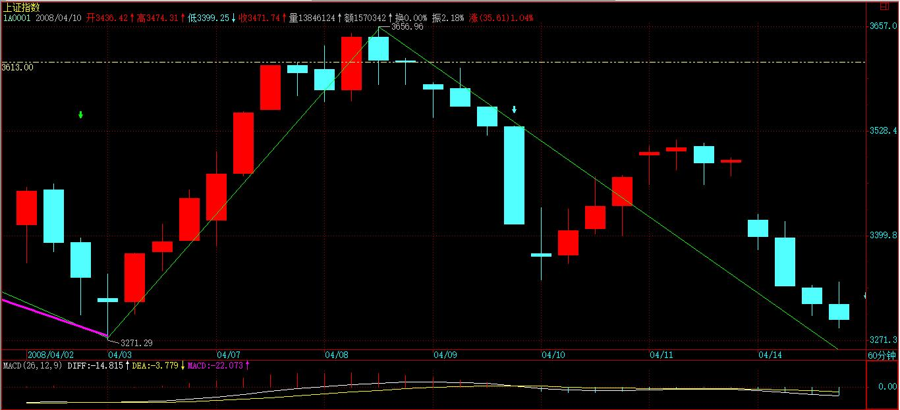
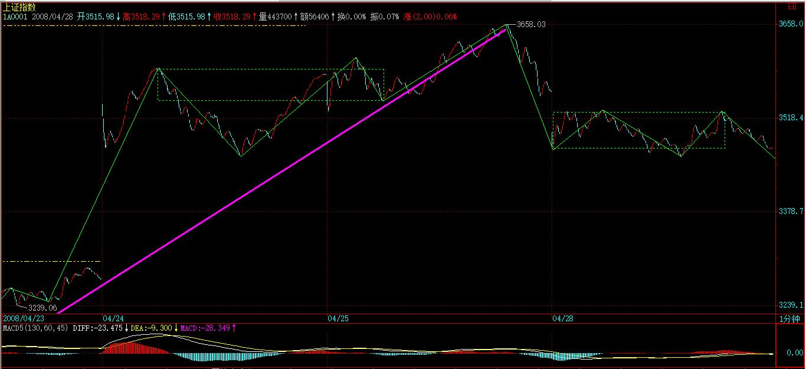
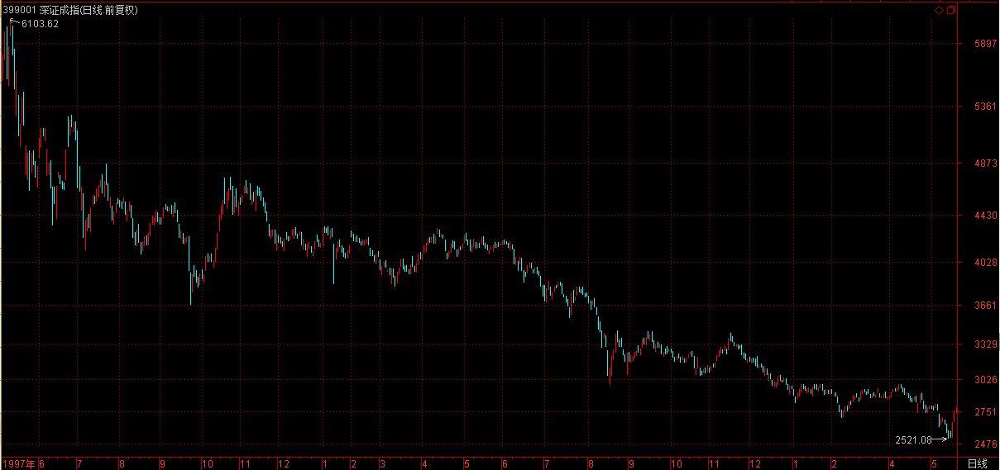
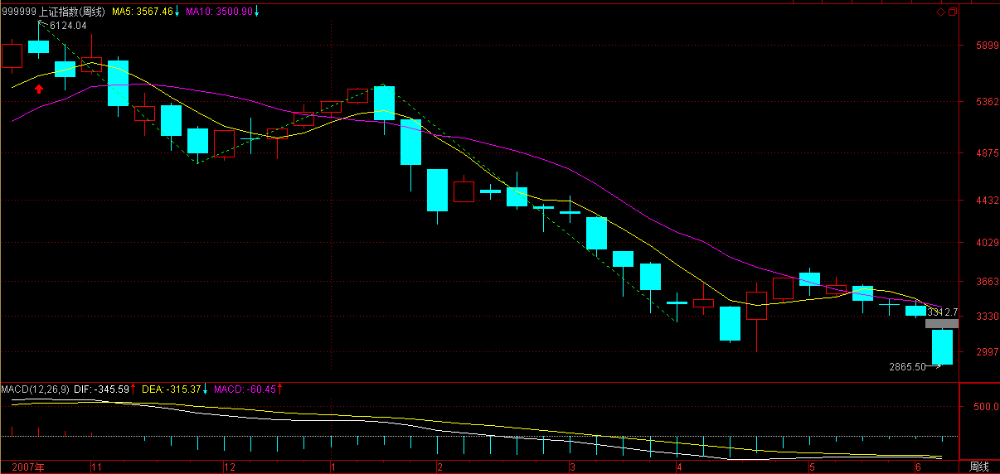
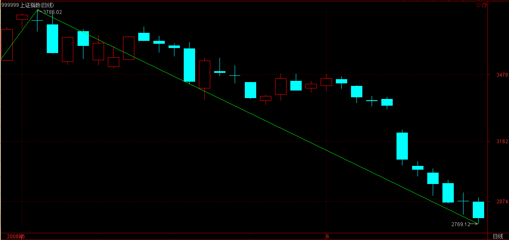
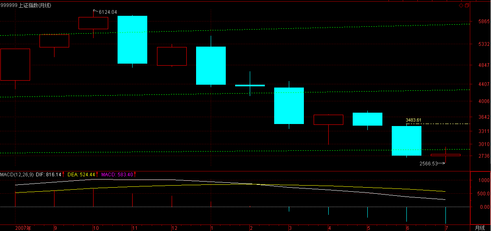
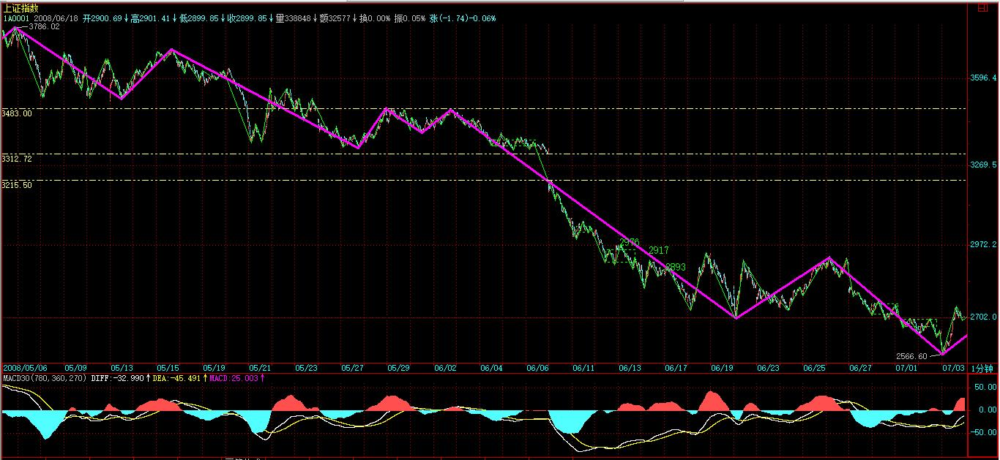
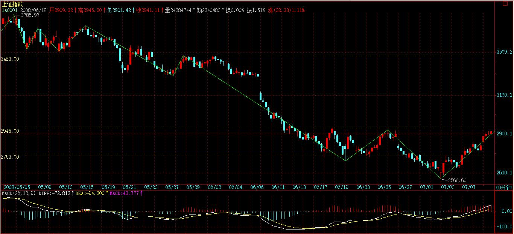

(2008-04-13 21:51:14)
周末不写股票并不是什么天经地义的事情，想写就写了。
股市里死掉的，大半是聪明人，越聪明的，死得越快。
要在市场上生存，就必须远离聪明，因为，你的聪明在市场面前一钱不值。
市场就如同一头牛，只有目无全牛，才可能随心解之而合其关节。
在本ID的理论中，机械化操作的本质就是目无全牛而合其关节，因为，根据本ID的理论，市场的结构已经被彻底分解，站在本ID理论的角度，哪里有什么市场，不过是一堆的关节。
而机械化操作，就是逐步合于其关节的节奏，而不被全牛的繁复所影响。【韶山映山红】心中有牛，手下无牛。】
至于分解这市场的那个标准是什么并不重要，也就是分类的原则并不重要，关键这分类能导致完全分类就行了。【韶山映山红】不能完全分类，就不能算是分类。】
那些看不起分类的，永远只能在全牛的迷惘中可怜，咱就不带他们玩了。
本ID可以再次明确地说，全牛纷繁，因此可以口水多多，各有道理，那么，就让这些聪明人去道理去、去争论去；咱不爱聪明，咱不爱全牛，咱只知道关节的节奏，咱不爱争论，咱更不爱预测，咱只负责挣钱。
如果你喜欢道理而不喜欢白花花的银两，喜欢争论而不喜欢挣钱，那么就远离本ID的理论吧，那对你没用。
最近，不写课程，但其实一直都在写，每天，就是用一个最简单的分型以及能否延伸为笔的最基本标准进行分类，就完全可以处理如此震荡的行情，人总爱复杂的东西，看不起简单的，而这才是真工夫。【韶山映山红】简单的，才是真工夫。】
挣钱，本来就是很简单的事情，不过就是一个良好习惯与操作策略的结果，一点劲都不用费。【韶山映山红】先要有一个操作系统。然后就是去执行。】
那些费力才能挣到的钱，也不会袋得住。
人总爱贪多，请问，分型这最简单的分类导致的操作，你把握了吗？如果这都没熟练把握，你再学其他又有什么意义？【韶山映山红】分型操作的关键是yes/no的判断点。需要在更低级别图上去判断。60分钟分型对应1分钟笔，参考线段；日线图对应1分钟线段，参考笔；周线对应1分钟走势，参考线段。可以做个专题，以后研究。★★】
好好总结吧。
【韶山映山红】
2019年8月21日 18:49 来自 微博 weibo.com
《千万不要跟不熟的人讲道理》
经常看老湿微博，会产生一个错觉，“嗯，这该是个喜欢逢人就讲道理，整天唠唠叨叨的白胡子老头子”
错啦…… 真的错啦……
虽然胡子有点白，但肯定不是老头子，更不会逢人就讲道理，恰恰相反，能动手动脚尽量不动口才是老湿本相
为什么呢？网上网下为什么反差这么大？
千万不要跟不熟的人讲道理 —— 这是我的心得体会。
网上是“一对一群”，讲道理是对的，反正不是“针对谁”。
网下是“一对一”，话不投机半句多，不熟而多言，祸从口出。
——————————
知识分子招人烦，就在于和你不熟却还指手画脚教做人，这很结怨。
人啊，愿意听道理的时候，道理才有用。道理讲别人容易，用在自己身上的时候，往往话就不好听。
所以，必须要熟，关系不熟，没必要针对着讲。哪怕你有心，这也是不合适的。
如果吵架，就更无需讲理，能讲理就不会争吵，必然都是认为自己占了理，哪怕别人看来是歪理，但自己肯定认为是正理。
——————————
为什么讲这些？
千万不要以为老湿是针对你，也没必要试图和老湿争个撒理，或感觉良好指点指点
不熟，半句多。
不要以为油腻中年必然喜欢教育晚辈，只有你爹你妈你叔你婶你哥你姐才会唠叨你
社会人，谁又会没事找事呢？
不见面，有聊；见面，尬聊都难
这很现实的
凡事喜欢争个对错，还是不成熟
】
【韶山映山红】
2019年8月21日 22:01 来自 微博 weibo.com
熟人再熟，能有老婆熟？能有子女熟？
所以，有言在先，愿意听道理才讲，不愿意听莫讲。熟不熟，次之。
既不熟，又不愿听，讲个什么道理呢？关我屁事，遁之。
微博的好处在于，我随便讲，你随便听，任君取之。
会讲道理，不是说服别人的本事，而是说服自己的本事。
心中有规矩，行事有方圆。孰可为孰不可为，无需思前想后，自成一派，皆因“有道理”。
动起手来，自然谁亮拳头谁有理…… 不服，多捶两下，即可。
——————————
天底下，哪有不和老婆吵架的？ 多打两拳就不吵了。
比如每次我只要看到老婆亮了拳头，就自然不啰嗦，遁到一边去了
】
【韶山映山红】
【· 原创: 皇甫娇 2015-10-17 21:25只看该作者(-1)】
看了你的反思。和没有反思前是一个水平。
用一些情绪化的文字反思毫无用处。
什么叫诱惑。什么叫克制自己。
要变成冰冷的程序和纪律才可以做期货。
比如重仓的百分比轻仓的百分比。止损的百分比。
更关键的是坚决执行的行为。
】
【网文】做正确的事
(2017-03-07 14:57:10)
最近很多人给我写信，苦恼于“怎么做怎么错”，“天天被打脸”，“不知道交易到底值不值得做”……各种的抱怨、吐槽，各种的研究分析，各种的对交易的怀疑……
我无法一一去回复你们的苦恼、困惑，质疑，我想说的是，你们应该先问自己一个问题：“怎么做怎么错”到底是谁的错？
是啊，你应该静心想一想：为什么怎么做都是错的呢？看着就像要上涨，可为什么一做多就开始跌呢？看着一根大阴线，明明就是要跌的，为什么第二天却出来一根那么大的阳线呢？难道市场是征对你一个人在耍弄吗？
不是的，因为在这个市场里每一个交易者眼睛看到的是同样的图表，如果是市场的错，那么市场就是在耍弄所有人，而不是仅仅耍弄你。
那么，既然不是市场的错，那就是我们自己的错了？
假设是的，那么我们错在哪里呢？明明我就是遵守了交易规则的，明明我就是不对就止损的，明明我是要遵循趋势交易原则的，可为什么总是被打脸呢？
这一类的困惑和疑虑每一个交易者都会遇上。
当我们对市场游戏的本质理解达到一定境界之后，我们就会明白：市场和我们都没有错。因为这个游戏原本就没有对错之分，只有输赢之别。
有时候，我们可以随便乱做也赚到钱；有时候，我们无比小心按部就班遵守规则地做也会亏的一塌糊涂……
难道不是吗？
那有人要问了，既如是，那岂不是没有解决问题的方法了？还不如随便去瞎赌呢？
说实话，如果没有正确的方法去执行交易这个动作的话，瞎赌或许还会有比之更好的结果。我曾经看过我带过的交易员的各种交易类型，的确有完全按照自己制定的规则进行交易的，但资金曲线就是稳定下跌；也有凭着运气胡乱下单的，资金曲线最终虽然也是完蛋，但中间却经常有惊人的上涨……
从这样一些现象来分析，交易其实并不是新手所想象的那样，我只要守纪律，我只要制定规则，我只要控制自己严格按照我制定的这些东西来，我就一定能获胜。
NO！图样图森破！
我还是新手的时候有着一模一样这样弱智的想法，但事实却是我经常会无法克制地放弃我一再制定的各种规则，放任自己到无规则的环境中瞎做，虽然结果同样是惨不忍睹，但至少心理上没那么压抑。
大部分交易者在谨小慎微很长一段时间后，突然有一天发神经，重仓或是逆势或是乱来，一夜回到解放前。这种现象的真正原因是什么呢？
我从自己经历过的心路历程中总结到了原因：那是因为我们“无比小心按部就班遵守规则谨小慎微”没有得到正的回馈！
是的，这才导致了我们放弃之前的这些千辛万苦制定的一系列原则的东西，去他妈的，反正我遵守规则也是这样，还不如放手一搏，死也要死个痛快。
难道不是这样吗？我们每一次把自己陷入万劫不复的地步都是这个原因。
好了，既然知道是这个原因，那么怎么办呢？其实就是要让自己在市场中不断得到正回馈。
举个例子，我们来看看现在的市场，以螺纹钢为例——首先我们要解决的是“它是上涨趋势还是下跌趋势？”这是第一个要问自己的问题，对吧？那答案呢？上涨还是下跌？我知道很多人希望我在这里给出一个标准答案。很遗憾，没有标准答案！
我自己的答案当然是有的，但我的这个答案是标准的吗？不，很有可能不对。那么又有人会说：既然你们这样的职业交易员都不知道自己的答案是对的还是错的，那还做个鬼交易啊，不如干脆多空乱赌算了呢……
其实不然。我对螺纹钢的趋势是上涨还是下跌我有自己的一套逻辑做判断，但我如果告诉你我的判断对你也是一丁点作用都起不到的，反而有可能会害了你。因为，我的判断是基于我的逻辑，我在我判断的基础上做了一套交易的策略出来，而且我的策略里面有如果我判断错了怎么办的处理方案。试想一下，如果我仅仅是把我对趋势的判断告诉你，而你不知道我的逻辑，也不知道我接下来准备怎么做，你又如何能做好这笔单子呢？我判断错了或者判断对了，我都有相应的策略来应付，但你不知道。
所以，多空的判断得由你自己来决定，你是想做多还是想做空。因为，从你下单的这一秒钟开始，做多做空的结果都可以是正的，也都可以是负的。
这是其一。当你解决了“趋势判断”的问题，第二步当然就是怎么操作的问题了，也就是解决操作策略的问题。
如果你判断下来这是一个多头，或者这是一个空头，那么多头肯定是只能做多了，空头只能是做空了。在这个思路上做一个方案。这个方案里面有如何进场？如何止损？下多少单？如何止盈？回撤发生是挺住还是快跑？……等等一系列的问题要有明确的答案，我要强调的是“明确”，而不是“正确”，对的，这不一定是正确的答案，但你的心里必须要有明确的答案。如果有了，你就开干，可是结果呢？可能好，可能不好。好就继续按照你的策略走，不好止损打掉就拜拜，该干嘛干嘛去。等下一次机会再重复上面的那些步骤。
从我上面举的这个例子不难看出，即便我们做了很周密的计划，其实我们还是在赌，赌这个计划的成功概率，对吗？
那么好了，如果我们想经常多的获得赌的那个结果是正的，是不是要守住一条底线——不能经常赌？这个道理是很简单的，久赌必输。从单笔交易来讲，我们无论多么牛X，制定的计划多么的完美，我们依然不知道最后的结果是什么。
好了，既然不能经常赌，那么什么时候可以赌呢？当然是你自己能看清楚的时候。你问问自己，比如螺纹钢你能看清楚吗？多还是空？就算你看清楚了，你能有很清晰的计划吗？如果有，你就一定不会被经常打脸，因为经常打脸就是你经常在赌嘛，这还不简单？
你们看，交易其实并不是太复杂的，你要把逻辑的东西理顺，就这些东西。
然而，为什么给我发私信的朋友们那么纠结那么迷茫，被左右打脸呢？原因也很简单，市场在震荡嘛。在震荡市场里，要不别做，要不别动，这是对付震荡市场比较有效的方法。如果你选定了一个方向，做进去了就别乱动，那就不会左右打脸了，要打也只是一次。如果你实在不知道方向，那就别做，就不会被打脸了。
可是，很多亏货们是怎么做的呢？今天盘中大涨，马上追进去做多，第二天回撤止损打掉了，心有不甘，再次进场做空，第三天盘中强势反弹，又被止损了……或者，今天进去做多，止损被打掉了，明天还是进去做多，有了点浮盈，后天大幅回撤，止损又被打掉了，然后就是不断重复，不断止损……简单吗？为什么迷茫？现在明白了吧。趋势看不清，今天多明天空，会死！趋势看清了，但方向不对，会死；方向看对了，方法不对，乱做，会死……
怎么样才能不死呢？趋势看不清，不做就不会死嘛；趋势看清了，不动就不会死嘛，要死也就死一次，但这唯一的一次死却给了你一个更加清晰的方向——就是反向。
你看不清的时候，做了就会死；你看清楚的时候，动了就会死！
我给学生的回信中说：
你可以看看走势图，然后结合我们的系统，做出正确的分析。当然，正确的分析不代表就一定能做出正确的操作，正确的操作也不代表就一定能获得正的收益。但这是期货交易的本质，我们无法改变这样的结果，所以我们只能是抛开结果不管，对自己的要求就是做出正确的分析，同时力争做到按照计划做出正确的操作，结果就交给市场了。
明白吗？
【网文】接受亏损！
(2017-02-15 17:52:27)
新手交易员在初入市场的时候，大部分是东一榔头西一棒子的交易风格，换言之，就是短线、波段、日内、趋势……什么都尝试，但什么都做不好。我在刚进入市场之时，也是一样。不断转换交易风格的主要原因是什么呢？
当年，我还是个新手交易员时，只要账户一发生亏损，内心的郁闷就不用说了，经常是半夜不睡觉，甚至彻夜复盘，就是要找出亏损的原因，不找到原因是不可能睡觉的。及至找到了原因（虽然那原因现在看也是牵强附会），然后就是痛下决心要改正错误，将来一定不能犯如此错误等等等等的自我表决心。然后呢？然后当然就是换一个系统。但对于新手来讲，还没有科学的系统概念，仅仅就是从一个失败的风格换成另一个风格而已。比如一开始打定主意做趋势交易，然后发生亏损了，痛定思痛就决定做短一点吧，做波段肯定能回避亏损。好，然后就开始做波段……可是没多久，波段照样亏钱。然后又是痛定思痛之后，决定做日内，做日内一定能回避亏损。好，然后开始做日内……可是，然并卵，日内照样亏钱。然后……然后就找不到方向了，然后就开始乱做，索性不要什么系统、风格了。很奇怪，胡乱的做反而还能赚钱，于是胆子大了起来，开始越发地过份。逆势也干上了，摸顶抄底也来了，摊平成本也有了……然后，某一天灾难降临了，千年砍柴一日烧。然后又再一次重复以上的步骤，或者倒过来，重新再来一遍……重新再来N遍……
如果找不到症结所在，意味着这种痛苦的轮回似乎永远看不到尽头……在我走出了失败的阴霾之后，我终于体会到了：为什么新手无论用什么风格交易都会亏钱的原因——特别怕亏损！不接受系统的不完美！换言之，为什么老手无论什么风格都能赚到钱的原因也是如出一辙——不在意合理范围内的亏损！完全接受系统的不完美！
无论哪种风格，交易的核心逻辑都是一样；无论哪种风格，顶尖交易员同样有连续亏钱的时候。新手在这个时候会痛定思痛转换风格幻想扳本，而高手却是偃旗息鼓等待时机再战江湖。
这是很重要的区分标志！！！
新手不断转换交易风格的真正原因就是无法接受亏损。他们很多人都认为只要是亏钱了就是系统不行，他们潜意识里总是以为市场上有葵花宝典——九阴真经或是密宗大法，一招制胜战无不败。所以，他们有好些人，这里拜师那里上课，今天被骗明天还是被骗。因为市场上根本就没有葵花宝典，有的只是前辈们枪林弹雨中死里逃生后的经验教训。
接受系统的不完美，接受市场的随机性，是一个交易员成熟的标志！对高手来说，长线短线日内波段统统都不是问题，能赚钱的照样赚钱。因为，交易的核心在交易逻辑上。短期的亏钱不叫亏，长期的赚钱才叫赚。不明白这个道理就永远都别想从市场上拿走真正属于自己的一毛钱！
基于这样一个逻辑，我对新手交易员的劝告是：咬定青山不放松！选择一种风格，死磕到底。只要一种风格你能胜任，其它的风格的转换并不困难，那是顺理成章的事情；只要一种风格你能赚钱，换一种风格也能赚到钱。千万不要一亏钱就换风格，因为，无论哪种风格，交易的手法从本质上来讲并没有太大区别，核心都是靠“趋势交易”获得利润，靠“低买高卖”赚取差价。
新手交易员特别难以逾越的一个关卡，就是无法接受亏损。在这一点上我同样用了很长时间才最终做到，那是因为在我还是新手的时候，真的没人教过我有用的东西。一个交易员，只有达到“眼里看到的只是数字而非钱”时，心理上对亏损才能心悦诚服地接受，也只有坦然接受了，才会有水到渠成的利润。
在不适合自己系统操作的市场里，亏钱是没有办法的事情，必须要接受亏损，等待市场走出符合系统的行情。做交易不能像狗熊掰棒子，一个不好就扔掉，最终却是个个都错过。
【网文】耐心！
(2017-02-08 15:18:40)
春节基本过了大半，元宵一过，这个年就算真的过去了。
昨天和学生微信聊天时说起目前的市场行情太乱，我对他说：我也看不明白，耐心一点，等行情走出我们看的明白的结构再进行操作。他说：我会耐心等的。我又问：知道等什么吗？他回答说：知道。又发了一个微笑的表情。我也笑了。
系统是什么呢？你可以说它是信号，你也可以说它是逻辑，而我认为，它是信念。系统明明确确告诉你，你应该等什么，所以你才会有耐心等；如果你不知道在等什么，你一定会急躁，一定会怕错过行情，一定难以控制自己的心，难以控制自己的手。一切都来自于你的本心，你有耐心等，你就能等到；你没有耐心等，你就会急躁，就会乱。
耐心对一个交易者来讲是极其重要的特质。生活中，耐心是美德的体现，交易中，耐心是盈利的保险索。学会等待，也就意味着抛弃贪婪，只做自己能看懂的行情，心平气和接受错过那些系统无法把握的行情，细水长流，才能成为长久的赢家。
【网文】逻辑的力量
(2017-01-20 12:01:46)
大部分学习技术分析的新手以及亏货老手所能理解的技术分析就是在已经走完的图表上画线，或者研究K线形态，组合形态，等等……然后根据画的线和形态来预测未来走势，并依据这个进行交易。画线、熟悉形态的确是技术分析的基本功，但是，如果仅仅是停留在这样的层面，是无法靠技术分析吃饭的。市场上用技术分析做交易的人数不胜数，可是你们看有多少人是真正的赢家？这也难怪那些号称靠基本面分析吃饭的投资者们看不起技术分析，画几根线就能赚到钱，那也太容易了，根本不可能。说实话，我也觉得不可能。
技术分析中的画线只是交易者为自己所要下的单子找一个操作依据，仅此而已。比如做空，得先通过画线得出这是个空头市场的结论，再通过画线找到背靠哪个压力位置进场，这个压力位置就成为了止损位，再通过画线预测一下第一目标位，第二目标位……，大概在什么地方可以获利平仓。所有的操作从表象上看，似乎就是靠几根线来判断的，但如果真这么简单，那这个世界上其它职业都会被消灭。事实上，用技术分析操作交易远比这困难的多。
当然，所有的职业交易员、成功的交易员、优秀的交易员……都是从这个最简单的也是赚不到钱的阶段开始的。画了无数的线，电脑里存了无数的图……这是必经阶段，但如果你想成为最终能赚到钱的交易者，却不能允许自己一直停留在这个阶段，因为光会画线是赚不到钱的，你必须要让自己提高。在面对图表的时候，你除了能画出一根一根的线来，还要逐渐开始理解这些线。怎么讲？就是要想明白这些线为什么会形成？是怎么形成的？想象一下电脑后面的那一堆人，他们在干嘛？线是他们用手里的钱堆起来的，所以，只有弄明白他们在干嘛？他们接下来会干嘛？那这个线才是能真正起到作用的。
比如，在没有出新低之前，你可以参考前期低点画一根支撑线，但一旦前期低点被击穿了，这根支撑线就然并卵了，对吧？那么，那支撑线有啥用呢？这样的线可以画无数根，但哪一根才是真正的支撑线呢？对的，你必须找到真正的那根，但要找到它靠画线就没有鬼用了，得靠什么呢？得靠逻辑分析。没错，你得靠强大的逻辑分析能力来判断出哪根线才是有用的那根。
如果做个直观的假设，新手会判断错7次、8次，老手会判断错3次、4次，高手会判断错1次、2次。我们再假设，无论什么手，判断错了都止损，那么新手的止损次数远远比高手的次数要多，这是其一；高手判断错了之后，他们的心理足够强大到可以再次进场，但新手要做到这一点就很困难了，这是其二。当然，作为新手不要责怪自己做不到，因为只要是新手统统都做不到，没错，我是新手的时候也做不到，在交易能力上，没有人一上场就成为天才。但是这样一来，谁赚钱谁亏钱就很明显了吧。止损次数多，账户里的钱逐渐变少，真的机会来了又不敢再进，这就是新手赚不到钱的表象原因，可是，深层次的原因却是无法像高手那样，有能力分析出哪些机会是值得去尝试的，哪些根本就不是机会，而是陷阱。
比如，一个上涨趋势中，哪一次的回撤是正常回撤？哪一次是非正常回撤？这是需要有预判的。对一个新手或者亏货来说，往往出现的情形大部分是这样的——每一次的正常回撤都看起来像转势，所以跑的比谁都快；真正的转势回撤却看起来都像正常回撤，于是坚决拿着不走。想想看，是不是这样悲催？为什么会这样呢？因为新手没有能力解读图表。大部分的新手交易者看图形、看K线、看量仓、看指标……但是他们不会把所有因素叠加起来分析出背后的逻辑和原因。于是，线就成了一根死线，除了起到破了就止损的作用，还有啥用呢？在交易中，比如支撑线，一定是有着逻辑分析后的支撑才算真正的支撑，而不能找到前低画根线就算支撑了，然后，还在心里安慰自己“没关系啊，反正破了我就止损”，那就有的止损了，你止损的钱恰恰就是人家赚到口袋里的钱。
再比如，我们一直强调要有耐心。既要有耐心等待入场时机，又要有耐心持仓。可是，许多新手或亏货其实很有耐心啊，他们等了半年才做一次的交易，却就是亏成了shi……；他们极有耐心地持仓了半年一年，最后却是坐了三次过山车……，种种的失败让他们开始怀疑，搞不清楚怎么做才是正确的。说穿了就是，你如果不知道自己在等什么，所谓的耐心也不过就是让你多等一段时间再死而已。要知道自己在等什么，就是需要逻辑分析能力，要分析K线背后的力量。
基本面分析研究的是供需关系，技术分析研究的是图表逻辑。交易中的每一个动作都是你思想的体现。比如，做多被套住了。为什么做多？因为这是一个上涨趋势；为什么不止损？因为止损位没到；为什么止损位设在这里？因为这里有支撑……看，我们的每一个动作是不是都是我们事先的想法？那么，你有这种想法，别人做交易也会有自己的想法。新手、散户有想法，大佬、机构也会有想法，关键的问题在于你自己的想法其实没有什么鬼用，别人的想法特别是能左右市场走势的人的想法才是关键。这有可能不是一个人，是一小群人，但他们的钱多，当一小群掌握着大钱的人的想法一致，那么会发生什么？当然是那一大群掌握着小钱的人要被血洗了。这是投机市场的规律。所以，了解掌握着大钱的人的想法就变得特别重要了，可是你又不认识人家，怎么知道他们在想什么？当然有渠道，图表啊，图表就是渠道，因为你不需要知道他们是谁，但你却可以通过图表知道他们的钱在干嘛。他们的钱指到哪里，他们的思想就暴露了；他们的钱不动，他们的思想也暴露了，对吧。
不要让自己一直停留在画线的阶段，试着去分析、理解线背后的逻辑。把那些技术工具结合起来找到逻辑的脉络，那么你就不会被正常的波动蒙蔽了双眼。你会在该淡定的时候淡定，在该快跑的时候快跑，在该止损的时候止损，在该坚持的时候坚持。
(2008-04-14 15:22:10)
现在这种行情，本ID一早就给出两种唯一的策略供不同水平的人选择，一是小板凳，二是短跑运动。本ID之所以天天在这里给各位练习短跑，就是假设你有这水平。否则，小板凳的过来看看就可以。
现在，继续和各位练短跑，如果你没这水平，就一边晾着，咱不带你玩。
已经明确说了，3533点上不去破底的机会就大大的，【韶山映山红】超短线，60分钟底分型上沿3533点。】
所以，今天的走势其实没什么可奇怪的，
而且早上连续三次冲高都补不了缺口，如此肾亏，你还能假设这大盘今天不是ED男？
不过，这样的下跌，只是让又一次的短跑机会扑面而来。
不管是用背驰还是分型，都很快出现标准的图形。

其实，对于一点货都没有的，今天尾盘就不妨在水底捞点。
注意了，中线一定要看好地产板块，前几天本ID已经说了地产搞了一个多头陷阱，因此，这几天的大跌很正常，否则就不叫多头陷阱了，现在的关键是，地产是最早启动的，这次下来是第二买点的清洗，还是新一轮的下跌，对大盘具有极大的中线指引意义。当然，同样的包括金融股。
平安那破事一直不出来，对大盘就是一个大的压制，它不出来，大盘就不可能真正走起来，这点也是必须注意的。
注意，短跑就是冲刺就完事，千万别搞成长跑。
先下，再见。
(2008-04-15 15:14:35)
爽了没有？
这扑面而来的感觉如何？
你看透市场以后，反弹不过就是一个419的约会。今天，昨天的预约如约而来，4根60分钟线，前三根构造分型，确认后，第四根突破分型上边，3311点成短线关键位置，一切就是本ID理论的活教材，你说有什么可说的？【韶山映山红】3311点，60分钟底分型区间的上沿。】

注意，只要3311点回试站住，那么反弹继续，否则就结束，如此简单。
短跑的感觉如何？感觉是跑出来，干出来的。爽是需要真枪真刀来的。本ID这里没有花架子，只有白花花的银两通过技术抢劫回来。
个股方面，创投继续，券商由于可以直投，其实也已经是这个概念了。后面就看能不能轮动起来，房地产能不能止住来个大反弹。另外，新能源、环保、农业等是长线大题材，一定是有机会就会被折腾的。
个股只要能轮动起来，这反弹就能持续。至于中线大盘，过几天有心情再和各位分析，总之，已经在最后的空头陷阱中了。
先下，再见。
(2008-04-16 15:15:02)
今天，大盘全天和CPI震荡较劲，而震荡的中心就是昨天说的短线关键位置3311点。
而最终得到的数据，多空双方都能从中找当适合的说辞，空方自不必说了，而多方看到CPI月环比的回落，当然也有了说道的地方。【韶山映山红】国家统计局新闻发言人、国民经济综合统计司司长李晓超发布了一季度国民经济运行情况。一季度国内生产总值61491亿元，按可比价格计算，同比增长10.6%，比上年同期回落1.1个百分点。 】
其实，最终怎么选择，一点都不重要，今晚，各大报纸、专家就会将这些数据分析烂了，但这对实际操作没用。
我们不当专家，我们只当赚家。面对这种围绕关键点位震荡，还没有决定方向的走势，最苯的方法当然就是等关键点位出现第三类卖点之后走，但这确实太无聊了。以前已经多次说过，这种操作其实十分简单，就是在震荡高位利用盘整背驰抛掉，下来不破位就回补，千万别浪费这震荡的短差机会。注意，这样必然是半仓操作，如果真破位，下来不回补就是，然后把半仓也扔了，这样效率最好。
当然，还有一种是最干脆的，就是震荡高位先走了，等真正重新站住关键位置出现第三类买点再介入，这是最安全又有效的作法，就不费心去预测最终是否站住了。
我们的操作，一定要用操作的眼光而不是争论的眼光，来市场是为了赚钱而不是为了表现自己的聪明。
明天，就看这3311点的第三类买卖点问题，如果你已经有正确的操作了，那这就没有任何操作问题了。
我们不较劲，等多空较劲完了，我们跟着胜利者走就是。
先下，再见。
(2008-04-17 15:05:56)
3311站不住，自然就要破底，
这没什么可说的，但这就又成就新一轮419，一个新的短线机会又到面前。
今天，有点脑子的资金都云集到某新股中抢东西，但这反而搞到盘子乱了。明天很关键，就看里面的各种势力会不会互相拆台了。【韶山映山红】601958金钼股份。2008.04.17上市，发行价16.57元。首日收盘20.60元，涨幅36.27%，换手82.68%。】
现在，破底并不是什么坏事，破底反弹再破底再反弹，节奏把握好了，一样赚钱。
中线只能等基本面的明朗，不明朗，谁都没有当炮灰的兴趣。
其他没什么可说的，看图操作就是。
先下，再见。
(2008-04-17 20:16:00)
现在这博客已经成为本ID最大的一个负担，本来想关闭一段时间，等把手头的事情忙完再重开。
但现在的人又那么多，关了，对不起太多人，虽然都不认识，也过意不去。
由于最近，家里出了很大的事情，作为成员，本ID必须负责，而这种负责不光是钱的问题，是要亲力亲为的，钱并不能办所有的事情。
所以，已经完全不可能正常写帖子，就象今天的帖子，本来一收盘就要走，为了写，最重要还不是浪费那点时间，而是被一件事情给束缚住了。
以后，解盘之类的不一定收盘就有，晚上回来有时间，尽量给出，太晚就算了。
这不正常的时间，估计至少要几个月时间。本ID也希望能尽快结束这样的情况，但很多事情，并不是一个人能决定的。
先下，再见。
(2008-04-18 15:24:59)
今天是典型的逼宫行情，中石油破发，使得所有人觉得该干的事情给干了，【韶山映山红】601857中国石油。2007.11.05上市，发行价16.70元，首日开盘价48.60元，收盘价43.96元，换手51.58%，成交总额699.9亿元。2008.04.18收盘价16.02元，跌破发行价。】
但这种希望把管理层的政策弄出来的想法，显然有点太天真。
由于60分钟底分型没有被构造出来，【韶山映山红】为什么说“底分型没有被构造出来”？★飞狐历史数据上看，底分型成立了，向下笔成立。当下处于向下但没有新低去延伸向下笔的尴尬状态。】
所以短线出击的时间必须继续看图等待。【韶山映山红】60分钟底分型的走势不明朗，所以“必须继续看图等待”。】
周末不想多说，把前面曾经承诺的中线分析给出，一早就写好，正好贴出来当周末礼物。
先下，再见。
最近大盘在本ID前期所指出的3424点上下反复震荡，持续了相当长的时间。
由于目前的基本面完全不配合，因此有力度的行情一直不能真正走出来，只能维持一种弱市震荡的局面。
这种震荡的局面，最终的结局无非两种，就是逐步震荡走强然后寻机向上突破，【韶山映山红】震荡带来小转大。】或者就是干脆再狠砸一个空头陷阱，快速下跌后进而再迅速回拉重新回到该震荡平台蓄势走强。【韶山映山红】背驰＋反弹。】
无论市场最终采取何种选择，最终在根本意义上，不过都是要以目前的平台为基准展开新的行情。因此在这共同点上，反而说明了目前平台的技术意义。
现在需要探讨的是，该平台最终确认后走出的行情的级别问题，因为，实质上，根据最严格的技术分析，还存在三种可能的走势变数。
上海指数，从6124点开始，共出现两个不同级别的有技术意义的反弹。第一级别是4778点到5524点的所谓跨年度行情，而第二级别是那次在年线附近进行争夺的走势，具体的范围是4196点到4695点。【韶山映山红】两次反弹的级别不一样。】
因此，这三种可能的变数就是：一、第二级别力度的反弹；二、第一级别力度的反弹；三、超第一级别力度的反弹。
显然，这三种反弹的力度是逐级加大的。最弱的就是第一种情况。由于从4695点开始的下跌到目前已经进入尾声，因此，其后至少要出现第一种的情况反弹。而在目前基本面上，国家对市场已经完全受制于所谓CPI情结，因此，资本市场本被当成最终牺牲品的可能性是极大的，一旦这种基本面继续成立，那么，大盘只出现第一种情况反弹的可能性就极大了。
也就是说，后面，我们首先可能只会迎来第一种情况的反弹，其后依然有进一步的下跌去制造新低的必要。而只有当那次新低制造后，大盘才可能出现第二或第三种情况的走势。至于这个新低的范围最终出现在2500点到2700点内甚至更低，都不是一件太奇怪的事情。
其实，以前已经明确说过，上海指数的走势完全可以参照深圳成分指数的历史走势。我们之所以能在去年提前指出6100点的大顶，除了上海指数本身的分析外，一个很重要的原因，就是因为深圳成分指数的历史走势在1996年到1997年就出现从刚破1000点到6100点的历史性走势，该走势与上海这次的走势吻合具有着极大的可能性，而事实上，这种吻合最终就变成了事实。
深圳成分指数的历史走势从6100点开始快速回落到3000点以下，和这次上海的走势又出现惊人的指示作用，因此，上海的走势最终跌破3000点，站在这种历史走势值得关注的对照上是完全合理的。
当然，历史走势的对照并不一定都完全成立，但从目前的情况看，最终成立的可能性越来越大。特别这次，和上次的情况在基本面上完全一样，上次是所谓的亚洲金融风暴，政府为应付之，只能把资本市场当成牺牲品。而这次的所谓的次级贷款，都是外围因素引发内部压力，最终的政策选择也是牺牲资本市场，所以，这一切，都成为很容易理解的事情了。
注意，目前理解当下的资本市场，一定要彻底明白政府最终抉择中资本市场一定会被当成牺牲品的必然性，这种必然性在前面已经详细分析过了，这是理解当前资本市场的关键所在。
从目前的基本面看，出现第三种情况的可能性不大，而第二种可能性还是有的。上次，深圳通过两年的调整后才出现第三种情况的走势，如果你相信历史，那么，要出现第三种可能性的走势，怎么都要有1年的时间。
当然。分析在本质上涉及预测，并没有任何100%准确的可能，而实际的操作，一定要根据市场的最终选择进行，不能把分析与预测当成市场本身的走势，而后者才是操作所能真正依据的。
【韶山映山红】评论检索完前３页。】
小缠已经反复说了，她不是什么救世主，她只是陪练，一百多课的教程都在这里，大盘的解说也坚持了一年，谁愿意付出努力，自然有回报，这很公平。
不愿意学的，学了半途而废的，自然股市会继续折磨你，谁疼谁知道，呵呵
2008-4-18 16:21
(2008-04-21 15:09:38)
显然，周五的逼宫兵临3000点，给管理层足够的压力。但现在的管理层，有点葛朗台的味道。把自己兜里那点货都当宝贝了，总想用最小的代价把市场给打发了。因此，一个最没实质内容但又用“半夜鸡叫”模式过度包装的闹剧就此上演。【韶山映山红】中国证监会昨日发布了《上市公司解除限售存量股份转让指导意见》，并自发布之日起施行。指导意见明确，持有解除限售存量股份的股东预计未来一个月内公开出售解除限售存量股份的数量超过该公司股份总数1%的，应当通过证券交易所大宗交易系统转让所持股份。】
对此，本ID真是无话可说，各位大爷，为什么总是要低估市场的智慧？大爷们口袋里有什么货色，市场里的人用指甲都能算清楚，又扭捏什么呢？
不是市场不给管理层面子，而是太自以为是是必须受到嘲笑的。
当然，由于管理层已经有点压力了，所以，不排除他们来点什么组合拳，因此，过度作空已经面临风险，向下的搏傻游戏也要开始小心。【韶山映山红】这里的底靠不住了。】
市场玩的就是心理，不管对象是谁，看穿了对手自然上上下下操作自如。
技术上，短线看，今天还折腾出一个小的底分型，能否成立就看3189点了。【韶山映山红】3189点是60分钟底分型的区间上沿。】
操作是双面的，可以先买后卖，可以先卖后买，可以先卖后买再卖，关键是看图操作，不要凭自己的情绪。
另外，盘面上一定要注意是否有领涨板块出现，没有这，就像今天，肯定没戏。
先下，再见。
(2008-04-22 18:20:45)
注意，晚上本ID有重要公告，请留意。
今天，60分钟图上出现的小底分型顶出了一个大反弹，3085点的突破确认了分型的成立，后面就是回试能否站住最终形成向上笔的问题。【韶山映山红】3085点是60分钟底分型左元素高点。】

由于今天的涨幅都是最后一小时造成的，
因此，明天早上就很关键了。最机械地就看3085点，【韶山映山红】3085点是60分钟底分型左元素高点。】
而中线关键看3305点。【韶山映山红】3305点是60分钟向下笔开始的顶分型的高点，也是60分钟笔中枢的ZG点，同时还是日线向下笔底分型区间的上沿。】
个股方面，金融股，包括银行证券继续走强，这证明长线资金依然坚定认为3300点下的空头陷阱性质，而现在很关键的就是房地产股了，如果能从前期的空头转为多头，则多头成功的几率就大了去了。
政策方面，今天把王大先生也给逼出来了，这次的逼宫行情，骗到了筹码，又把政策冲了冲，效果是显然的，但还是缺少干货，这才是行情迟迟不大动的关键。【韶山映山红】国务院副总理王岐山前往中国证监会实地调研，听取证监会主席尚福林的工作汇报。而证监会也在近期接连出台措施，规范股市。有分析指，中国股市将通过逐步完善市场制度实现“软起飞”。被誉为“救火队长”的王岐山，曾在建行行长、央行副行长、广东副省长任内，化解了一系列金融难题。在新一届政府中，他分管金融、商务等领域，被不少民众寄予厚望。此番巡防证监会，被视为有维护市场稳定的涵义。】
今天有事晚了，抱歉。先下，再见。
(2008-04-22 19:06:38)
其实，这东西对本ID没什么奇怪的，本ID一直都知道，但只是被好朋友们一致要求必须去进行全面检查，得到最权威的医学确认。
医学的术语大致是已出现大面积淋巴转移以及部分骨转移，属于晚期，大概有三个月的生存期。
既然，这游戏已经玩成这样，本ID就有了一个全新的想法，就是在这医学确认的最后三个月中，把相关的一些过程记录下来。
生命是用来面对的，生命的任何形态都是一个很好的操作对象，例如现在本ID所需要面对的一切。
当然，本ID会在期间用本ID所认可的方法进行治疗，如果本ID的方法失败了，就证明本ID对人体还是研究得不够深入，本ID喜欢真刀真枪地干，如果每一次的操作，都是要直接把血抽到才算成功。
如果失败了，那是活该，就转世再来，没什么大不了的。
这里，一个活人版本，本ID喜欢这种游戏，直观而没有任何投机的可能。
这三个月，不会影响一般性的解盘，也不会影响本ID任何的活动。
特此声明。
【韶山映山红】本篇博客文后缠师的问答检索完44页，暂停检索。标记一下。】
(2008-04-23 17:58:56)
昨天分析给出3085点与3305点，结果今天走势就在这两点演绎。
早上对3085点的回试确认极端教科书，
下午，最后半小时一直在3305点关前徘徊。
显然，突破3305点，那行情的性质将升级，而不破，那就要出现震荡，因此操作上以此为标准就很容易了。

个股现在普遍回暖，而有些板块已经逐步有中线强势特征，只要真有领头的，行情就有戏。
太多就不谈了，看图操作。
大略看了各位昨天的留言，谢谢了，本ID会认真面对的，有空会把相应的事情一一记录，就如同一个股票的操作记录。
先下，再见。
(2008-04-23 19:54:24)
十分感谢各位的关心，人非草木，本ID当然能感受到各位的感情，毕竟，喜欢诗歌、音乐的人，本来就感情容易泛滥的。
本ID的病确实是千真万确的，这里没有任何开玩笑的成分，有拿这种事情开玩笑的吗？正因为如此，本ID一定会继续正常地进行解盘，因为，这是一个态度问题，本ID并不觉得多了这病事情就需要任何的不正常了。
本ID一定如同对待一次大规模的操作一样对待这病的操作，当然，操作就有失败的可能，唯一可以努力的，就是让失败远离。
十分高兴今天需要的干货终于出来了，【韶山映山红】查股票交易印花税历史，2005年1月24日下调为1‰。2007年5月30日上调为3‰。2008年4月24日下调为1‰。2008年9月19日起，由双边征收改为单边征收，税率保持1‰，至今。】本ID一直强调3300下就是空头陷阱，本来可以更详细的分析的，但最近确实没时间，但没有辜负各位，本ID就心安了。
本ID唯一希望就就各位最终都能独立行走于这凶险的市场，面对一切，就如同本ID现在平静地面对疾病一样。
有空再写。
(2008-04-24 15:15:00)
干货的力量，今天全面呈现。市场不是没有资金，而是没有信心。信心来自干货，有了干货，就有了冲击的能量。
不过，任何事情都不能昏头。今天是普涨，所有前期压抑的发泄，因此，行情能否真正健康地展开，关键是其后的分化，强势领涨板块的继续走强，这才是长远之计。
前面说过，券商由于能直投，所以是真正的创投股票了，而这次减税，肯定对成交量有大的提升，这板块在前期提示后，依然值得关注，不过追高就没必要了，因为毕竟会有一次洗盘的过程。
另外，这次行情的性质，前面也说过，肯定大头的天下，一般的题材股，暂时只能小打小闹。所以一、二、三的节奏，大概会表现得比较明显。
注意领涨板块之间的轮动节奏，以及向二、三线的蔓延节奏。
当然，从纯操作的角度，我们不能一味看好，饭要一口口来，短线的关键位置在3656点，
站住继续上，否则进入震荡。
先下，再见。
(2008-04-24 19:37:32)
那是17岁刚上大学时的事情，当时，打坐刚把身体的能量开发出来，有时候坐在教室里，只要稍微一入定，里面的人就咳嗽不断，后来，他们都说，只要本ID坐到后面，墙上都就有光圈出现。但这都不是十分明确的实证，直到那一次。
那一次，去肿瘤医院，到了一个骨癌病人的房间里，那人很瘦，睡在那里，骨瘦如柴。本ID出于好奇，就把右手放到他的前额，左手放到其腹部，那人的身体突然像冲电一样，双脚悬空，不断嘴里喷气。而本ID的手一离开，就恢复常态。那次，真把本ID吓着，后来反复试验了几次，效果都一样。
这就是本ID与癌症的第一次亲密接触。由此，与此的缘分纠缠大概就开始了。
后来，本ID知道这些所谓的功能都不是正道，然后像蜕皮一样把这样所谓的功能都去掉了，然后就如常人一样，大概怎么折腾，也没那能量了。
说这些，只是把本ID经历的一些真实说出来，大概对有心人是有益的。
(2008-04-25 15:15:22)
大盘如此气势汹汹，结果还是在本ID一早提示的3656点上被迎头痛击而出现跳水，
显然，大盘因此将进入震荡，
该震荡平台如果最终只能出现第三类卖点，那么大盘甚至有再次探底的可能。
大盘没什么可说的，站住3656点，继续大鱼大肉，站不住，就改吃咸鱼青菜，如此而已。
证券板块继续如所说的强势，显然，这是领头的，只要该板块中线继续走强，那么问题就不大。短线会有震荡。
个股如所说地出现分化，好好观察调整中有新资金介入的，一旦还有新一波，这就是黑马了。
另外，本ID极端鄙视那些拿本ID的病到处招摇的，这些不配做人。人的尊严，就在生命的残酷中的从容，整天鬼哭狼嚎，把一个帖子贴上几百上千，还是人吗？
人，就要人一样站立。感谢各位的关心，你们的药方等等都感谢了。不过，本ID下周会因此而开始讲授中医的，这也是战胜疾病的一种方法。
周末了，让我们去体验不一样的生命。
先下，再见。
(2008-04-26 12:38:33)
鼻咽顶壁，双侧壁见软组织肿物，向上侵犯蝶窦、后组筛窦、向前达双侧后鼻孔，向两侧侵犯双侧咽旁间隙，向后侵犯双侧头长肌，向下侵达口咽壁，局部咽腔狭窄。
双侧咽后组，双颈上中下深组、颈后三角区、锁骨上、双侧气管食管沟、双侧颌下、颏下、皮下可见多发肿大淋巴结，部分融合、不均匀强化、包绕颈部血管。
枕骨斜坡等可见不同程度骨质破坏。
(2008-04-28 15:06:21)
很多一知半解的人，说什么技术分析没用，那么请问为什么本ID多次事先指出的位置都神奇地逆转了大盘？就象这次的3656点，事先给出，其神奇作用是在基本面强烈变动下发生的，结果怎么样？这两天的走势很无耻地很不给所有人面子地捍卫了技术分析的尊严。

很明确地说了，站住3656点，继续大鱼大肉，站不住，就改吃咸鱼青菜，所以，各位就开始吃咸鱼青菜了。

什么时候才可能再大鱼大肉？很简单，等60分钟的向下笔完成。
日线上，3656点使得一个向上笔完成了，【韶山映山红】为什么说“3656点使得一个向上笔完成了”？★前面的3656没有成向上笔，这次的反弹依然没有成向上笔。难道这里算跳空成笔？】
要在继续延伸，关键还是要重新站住3656点，因此该点已经有了日线级别的技术意义。日线关键看5日线，只要能站住，回探就在可接受的范围内。
个股上，注意强势股回调时是否有资金承接而有第二波的机会，【韶山映山红】“资金承接”成为接力赛？★以后研究】另外，调整时，老题材股会趁机活跃。【韶山映山红】原理是什么？★以后研究】
等一下，简单说说本ID病情的最终全面结果。
先下，再见。
(2008-04-28 15:17:51)
本ID写这些，就是要真实地记录一个操作，同时，可以告诉所有人，生命是可以用操作的角度从容地面对的。
这里，没有本ID的肉体与病，只有一切可操作的资源，以及根据这些现有的资源展开的一系列操作与最终结果。
上次给出的是颈部以上CT结果，今天胸腹的结果已经出来，主要还是淋巴结的转移，内脏里，肝脏有开始感染迹象，肺部有点阴影，但被判别为有点发炎。
现在的问题，是不能完全确认为鼻咽癌，因为这方面反而不严重，严重的是淋巴结舯大造成的转移，最严重部位在颈部。
医生建议先采取保守疗法，马上放化怕受不住。
更具体的变化，后面继续写。
(2008-04-29 15:02:13)
在远离北京的过程中,无线上,只能快速说两句。北京对本ID的病是死地，算了算正向活地转移。
3656点是大盘的抉择点位，其下的一切震荡本质上都没多大意义。
当然，如果5日线震荡失败，那么大盘将确立进入向下笔，调整压力将加大。
个股，强者恒强在证券中表现明显，所以一直强回调介入机会。但现在关键看大盘，如果调整加大，将注意相应风险。
不能多说了。
先下，再见。
(2008-04-30 15:17:52)
当然，题目成立的前提是3656点突破的有效，【韶山映山红】这个“3840点成中线关键”不是来源于日线分型或者周线分型的区间上沿，而是走势类型分析的点。】
这必须是节后前三天的表现决定。节后越强势，大盘反而越不用担心，反之，大盘该强不强，就要小心陷阱了。【韶山映山红】为什么“必须是节后前三天的表现决定”？后面是5天的完整交易周。这里是什么时候判断出这次较大反弹的结束的？以后研究★】
现在已经在全亚洲设备、水平最高的地方住下了，各位不用担心。
先下，再见。
(2008-05-02 09:45:16)
如果本ID一直按照打坐所需要的生活规范进行生活，又怎么会有这样的病。正因为本ID十分过分地去耗费原有的福德资粮，所以才会有这样的事情。
本ID毫不掩饰地把这些写出来，就是给所有人一个警示，生命可以用来燃烧、挥霍，但你必须承受其中的因果。没有人能例外，即使如本ID般的，也不能幸免。这是一个警示，让后来人有所畏惧。
现在，本ID短时间内，根本收集不了打坐所需要的善缘，打坐能入门，是需要善缘的。众缘和合，才能有成功的希望。
当然，除非有宿命中的大善缘，但着不能奢望了。
不过，本ID还是有更大的视角去处理.
至于目前的医院,如果单是西医,怎么能说是最好的?那种一根筋的活动从来和本ID无缘.
(2008-05-05 16:54:42)
今天，上攻力度明显趋弱，以板块补涨为主，所以，大的震荡风险已经开始积聚。【韶山映山红】为什么“大的震荡风险已经开始积聚”？以后研究★】
3840点的中线意义已经早说，注意该点位上下表现。
这两天连续检查，活检等真受了大苦，大概平时根本不来医院，少见多怪了。
先下，再见。
(2008-05-06 13:25:02)
大盘如期震荡,没什么可说的,、
今天结论出来了，大致是NP2（T4N M，4期）。
用姑息性治疗，5-FU、TAXOL、DDP组合先化疗。
现在正商议中。
(2008-05-07 15:06:22)
节前已强调,节后该强不强小心陷阱,而周一又再次提醒,因此今天的走势完全在预料之中.现在中线很简单,还是看3656点,强弱分水岭.站不住甚至不排除二次探底.
暂时,可以把操作先以3656点附近新中轴震荡打短差 .
明天开始,可能要开始一次化疗看看效果,这里有最好的针对化疗后果的特效药,因此可以试,也就6天时间,如果没大的效果,会换新的方式.
因此,后几天不一定有帖子.
抱歉.
(2008-05-08 14:45:00)
3656上下的重要意义已经反复说,至于如何选择，根本没必要预测，只要保持如此市场节奏，那就3656点下跌不动就买，之上或附近涨不起就抛，不断短差。
市场好操作，但有些选择就很难，现在就碰到一个。紫杉醇（Taxol），最近在这医院竟然出来两次问题，一个10分钟就没了，连救都没时间。而用的都是最好的美国原装，所以就给5-FU、DDP、TAXOL的化疗组合的抉择带来极大困难。
这里的非系统风险太大。所以，还在抉择中。多谢医院能开诚布公，这才是最好医院的表现。
先下，再见。
(2008-05-09 08:46:29)
大盘最近无须多说,就3656点的中枢震荡和第三买卖点问题，明白这一总格局，就一切随心了。【韶山映山红】“3656点的中枢”是前面的扩张升级的中枢。这一波反弹只是围绕这个中枢的震荡。】
本ID把自己的病以及治疗过程公开，就是要把一段真实的生命经验留给有缘人，对生命的探讨需要亲身的实验，而实验的经验是属于全人类的，本ID不能藏私。
昨天，出现一个级别不明的转折，大概宿业还有点善根得十方佛菩萨的加持，各位的愿力回向，突然进入很浅的定境，出来后，大拉肚子，连续5分钟以上，都是黑色状物。表面肿瘤出现明显缩小，大概有10分一。
一直到凌晨3点多，本ID犯了一个错误，进行了放血操作，结果使得3840点的冲击失败，重新回到3656震荡。这个错误比较严重，使得这次瞎猫撞上了死耗子的机会有夭折可能，现正在修复。但人为因素要打折扣,但努力是一定的。
好事多磨，本ID会把所有经历写出来，这是生命的经验，希望对各位有用。
周末，安好。
(2008-05-10 17:00:19)
明天是水化，连续十几小时的注射，听说是几千毫升的量。后天开始上药，最开始就是那最危险的药，三小时。
之所以不管那非系统风险，是为了人的尊严。宁愿为此而死，也不能因此而恐惧。快意人生，就要立着。
体验一次化疗，并不是本ID相信化疗，而是要经历，如果这一生错过这次化疗，本ID的生命将黯淡。有没有效果，本ID并不关心，本ID只想直面一次难得的经验，这样生命才精彩。
不入地狱，哪谈得上修持，而且，是本ID化疗，而不是化疗本ID，如果连化疗都不能转之、利用其力量，探索其秘密，还谈什么修持？
操作可能失败，但最失败的操作也比最小的憋屈强一亿万倍。
人，就是直立着去生死，在生死中灿烂。
最后，七律记之。
或是绝命诗
缠中说禅
残阳堕海血倾盆
满目鲸涛今古翻
梦作乾坤空有影
心成岁月了无痕
余生不入香巴国
下世再逃伊甸园
漏底方舟横怒水
孤峰顶上白云屯
(2008-05-11 18:51:56)
今天安排的水化因为凌晨的一次意外出血给暂停了。其实，目前的颈部硬块已经变颗粒状连接，血来自这些连接，每出一次污血，都使得硬块有所缩小，但医生不大关心此现象，只想快点化疗。
血量较大，医生处理后，气血运转错乱，中午有窒息感。然后用三碗汤，使得气血恢复正常，而且马上排出黑色物大量，身体恢复如初。然后提出身体恢复，明天开始水化。人体在某种程度上有机器的一面，关键是否把握其关键的开关。
不出意外，整个化疗推迟一天，最危险大概在周二上午，明天只是水化，只是要打10几小时的液体。
记录完毕。
本ID已经看到各位的留言，为了各位的真诚，本ID也不能倒。人心是肉的，知道冷暖。
先下，再见。
(2008-05-12 20:59:13)
在如此灾难面前，本ID那点小病又有什么值得一提的。
保重。
(2008-05-14 06:52:37)
本ID依然站立，中国依然站立！荡尽尘嚣，中国将还世界一个更辉煌、更中国的2008！
灾难面前，我们更应该用我们的中国红。
口占七绝一首：
站立
缠中说禅
落尽人间九九难
难降斯国与斯人
钢刀九十九犹在
整顿乾坤荡浊尘
(2008-05-15 16:28:10)
如果以前对菩萨的同体大悲无所感触，那么这几天如此遥远又恍如亲受的巨大灾难，也足以让我们有所领悟。
本来，化疗的一切负作用基本没有，一切异常顺利，本应让本ID高兴，但完全没有那种感觉。当你很明确地知道，每一秒都有人在钢筋水泥下呻吟，在其下与生死间徘徊，那无名的悲哀就油然而生。
本ID也曾有暴虐的时期，听说魏东走了，不知道那次的大屠杀也是否构成一个遥远的理由。【韶山映山红】魏东，湘西永顺人，中央财经大学86级经管系本科，1993年中央财经大学研究生毕业。一年后开始运作涌金系，通过该公司控股九芝堂集团、国金证券。2008年4月29日下午跳楼身亡，享年41岁。
【韶山映山红】“那次的大屠杀”，327国债事件，传说魏东是最大的个人赢家。四大赢家：魏东、袁宝璟、周正毅和刘汉，如今三死一坐牢。据说，中经开在当年327事件中获利72亿，而魏东的跟风盘获利大概2-3亿元，随后创建涌金系。】
无论是与否，来生走好。【韶山映山红】遥远的理由，相近的身逝。】
也愿那些已走向来生的生命都有一个好的归宿。而依然在今生的，把今生活得更长、更精彩。【韶山映山红】人之将死，其言也善。】
(2008-05-18 17:52:06)
这几天效果还行,最大的肿块消去1/2以上,但这只是暂时结果,要完全好,路还长着.
(2008-05-20 07:09:51)
今天马上转到当地最好的中医院进行调理,是否进行下次化疗看调理与中医治疗结果。
(2008-05-22 12:16:27)
今天有所好转,会坚持住的.
(2008-05-24 08:09:16)
化疗后的反应还是很大的,主要是白细胞下降太快,第一天时只有1000,正常是4000-10000,不过,这三天已经恢复过来。
目前效果很好，肿块还在消，基本都缩小70%以上，当然，这不单单是化疗的功劳，甚至，大半不是，因为化疗时，以及前后，同时用了跟西医完全不同的方法。这几天的继续消，就和化疗无关。
其实，本ID用化疗，只是借其一下的猛力。前面说过，是本ID化疗，不是化疗本ID，这才是操作。
谢谢各位的关心，本ID会加倍努力的。
先下，再见。
(2008-05-25 15:13:09)
这次的病，说实话，并不是本ID预计中的事情。本ID又没有神通，不过平凡人一个，只是一个永远只愿意站立的人，而且希望探索、展示人的所有潜能、可能的人。
曾经说过，只要一切顺利，40岁以后，本ID会为文化的建构贡献点力量，当然，真实的本ID与虚拟的本ID就会对应起来。【韶山映山红】这时候还没有对应起来。“虚拟的本ID”已经开始努力了，“真实的本ID”还没有。】
所以，本ID这些经历，都在真实地记录着，以后，就成了本ID真实传记的一部分了。
40岁以后，人才会真正而立。【韶山映山红】三十而立只是美好的愿望。四十不惑，不惑才会真正而立。】
本ID并非好为人师，只是看到很多现象、理论都过于荒谬，而知识是全人类的，本ID有不同的见解，当然可以提供出来。
本ID从来只觉得自己说的不过是一家之言，言、行合一，本ID将自己的生命记录下来，也是言的一部分。【韶山映山红】言、行合一，缠师并不是大家理解的那样，看不上王阳明。只是看跟谁比。跟缠师解读视角的孔子比，王阳明当然黯淡。】
实证，一切必须如此。
人，生而受骗中，你的文化、生存前提都构成你生命系统的所谓公理。
而公理，往往就是骗局。
人生，真要活明白，前面30、40年，都要破这骗局，当然，有历史以来，真能办到这事的人，估计也没几个。绝大多数的人，不过在受骗中终其一生。【韶山映山红】人生，真要活明白，前面30、40年，都要破这骗局，呼应前面说的，40岁以后，人才会真正而立。】
【韶山映山红】
2019年8月21日 20:07 来自 微博 weibo.com
“四十不惑”并不是“什么事都想明白了”，而是终于悟到“想不明白就不要想”了

】
【韶山映山红】高晓松又说：其实到了四十岁的时候，才发现，四十不惑的意思是说，到了年纪你不明白的事，你就不想明白了。年轻的时候，每件事你都想弄明白，每个人你都想仔细看透，每个事情你都想不明白这到底是怎么回事，这个社会，这个时代，你就会特别想去明白。你明白不了，你连你最爱的人你可能都明白不了，可是年轻的时候就太想弄明白，有一些事情不明白就生活的慌张，等老了才发现慌张就是情趣，你不慌张了，情趣就没了。】
现代人，更是如此。我们不过首先都是耳食之辈，【韶山映山红】“耳食之辈”，全凭道听途说，人云亦云的人。司马迁《史记·六国年表序》：“学者牵于所闻，见秦在帝位日浅，不察其始终，因举而笑之，不敢道，此与以耳食无异。”】最终选择了一种信的东西，然后如抽鸦片一样一生了。
绝大多数的人，循规蹈矩地一生；而风云际会之时，又有所谓英雄、革命；这构成历史。有些人，希望穿越人的阶梯，因此而有了修行。
如果人只是人，那么，人如何去安顿只不过是一个审美问题；如果人还有穿越的可能，那么，人，就是一个真实的生命实践。
在这两种选择，第一种是绝大多数的选择，因此，绝大多数的人都是因为自己的审美标准而活的，也就是他们放弃了上下的寻求，毕竟那是一个极端痛苦的、极端无解的游戏。
而最恶劣者，就是那种号称自己亲证了人可以穿越，然后骗取真实生活中实际利益的把戏。
历史的绝大部分，由各种级别的忽悠构成。忽悠包括口号、宗教、理论等等等等。
当然，人类文化的很大部分，都审美地利用了修行者的实践。例如，禅宗化的文化，如果没有这种审美的利用，中国文化的很大部分都失去光彩。
但这种利用，将真正的实证变成了一种人类化的审美，将无数修行者用生命磨出的血痕变成修饰自我所谓修养的线条，而这不过又成了另一骗局。
以后的人类，应该清醒地告诉自己的后代，这样教育他们。首先，我们是人，我们拥有的文化、生命只是一个人的公理化系统，这个系统之外有什么，这需要每个人自己的生命去穿越。
告诉每个成为人的人，例如，在大学的第一堂课里，你的人生，只可能有两种选择，一种是审美化地，这包括经济动物式、革命式到逍遥天地式各种活法，但这都是人的审美式生存；另一种，穿越人的公理系统的实践，并不是每个人都需要选择。
当然，既然为人，就要负起人的责任。本ID现在所作，连法布施都算不上，只是在世间法的公理系统里，把自己的一点实验结果进行现场展示。
这个展示，完全可以精确地记录其真实。如果有兴趣的，可以记录下一个本ID的活动变化，就是明天本ID要出中医院，到外面走走，以后当真实的本ID对应之时，可以来查医院的记录。
本ID是以数学的严谨对待这次实验。
还可以告诉一个以及记录的记录，打了两支1800元进口的增白针，白细胞从1000到1400，然后两支到2900，本ID借了这两天四支针的力量，第三天早上能坐起来，进入最勉强的打坐状态，把全身勉强通了一遍，主要是把脊梁的管道疏通了一下，第三天又一支后，结果是12000；所以本ID现在已经可以写这么长的文章。
本ID的生命操作游戏当然还没有成功，当然还有失败的可能，如果失败了，在失败的最后一刻，本ID会公开真实的身份，这样，一个完美的生命记录可以给后人以经验。
不过，万一失败了，本ID很多已经成型的东西都不能写下来了。
但本ID的观点是，如果连生命实验游戏都玩不起，那么，这人所认知的理论，也不过是现在众多垃圾理论里的一种，少了就少了，没什么可惜的。
这次一个最大的惊喜，大概也是以前还有些善缘，本ID的亲弟对中医的理解达到了很高的水平，帮了本ID的大忙。前面，本ID说三碗汤就把本ID调过来就是他的作为，毕竟，这需要人去干，而能干的人，世上又有几个。当然，在大的方面，他还有所不足，但在具体用药方面，至少他的起始点是对的，药就应该这样用，而不能像现在绝大多数的中医，现在的不过用的是死药。
在中医方面，本ID是视角特高，但没什么机会实践，总不能到街上抓个人回来实践吧；他原来暗地N年，让本ID很大惊喜，不过他的志向不在悬壶，属于道家一类疏懒之人。
所以，如果这次本ID失败了，对中医，也可以增加一个问号。
本ID现在是以科学实验的态度来写这些东西。
实验报告分段总结，该写的应该都写了，到此按暂停。
(2008-05-27 18:08:03)
出院时验白细胞，已经停针好几天，结果是1.7万，因此可以安心出院了。在外面游了两天，心情正好，现在写诗词太费神，用旧词一首寄之。
踏莎行
缠中说禅
千涧流酲
万峰染醉
新晴鲜白云声脆
帆牵风日入红鳞
玉苔丹柳沧波里
事挂春烟
情埋素水
铅华老熟颜容坠
无尘空扫任枯荣
乾坤一丸恰游戏
(2008-06-03 10:03:09)
出去玩了几天，有点乐不思蜀，当向各位销了这一周长假，七律一首寄之：
糊涂歌
缠中说禅
浊世无心辩圣凡，
残躯浪把酒杯衔。
独行哪畏人言炙，
万死何来鬼眼馋。
天大踏云驱日马，
风高扬梦竞星帆。
时轮滚滚山河脆，
一味酸甜苦辣咸。
(2008-06-03 12:13:16)
脱离大部队开了一周小差，跑到到处美景美食的地方海饮山吃，确实要严重检讨。难得有这样一周，当然就难得糊涂地《糊涂歌》回归队伍了。
其实，网络就是一个很好的难得糊涂的地方，当然，人生如网，那是最好的难得糊涂之所。例如，网络中，每个人都是无性的，这就很好，平常的性别区分与歧视等等，在网络中就没了意义。另外，最难得糊涂的就是网名了，大概，本ID那曾经最出名的网名就是其中最好的代表：“喜欢数学的女孩”，这个名字就是典型无性别的，关键看你怎么断句了，不同的断句有不同的输出值：“喜欢数学的/女孩”=女，“喜欢/数学的女孩”=男/女。所以，这个名字的性别就是一个最好的网名。
【韶山映山红】
2019年8月22日 11:15 来自 微博 weibo.com
大家真的不能小看了“名字”
“行业与行业的平均估值是不一样的”，这不需要我教大家吧？
因为“不一样”，所以有的公司名字上讨巧，让人一眼看上去好像是A行业的公司，其实它是B行业的。
你别说，市场还真吃这一套，特别是那些小市值公司，没有多少人去关心它的基本面，它的主业到底干嘛，所以，看名字就能给估值。一看“哦，是A行业的，挺便宜，买”
所以，某个行业特别赚钱的时候，好些上市公司就开始琢磨换名字。“金控”流行的时候叫“金控”，“科技”流行的时候叫“科技”，“地产”流行的时候叫“置业、建设”……
其实呢，一看主业，八杆子打不着。
名字好是真的好。比如当年名字里有“宝”的票，名字里有“中国”的票，估值就比同行要高一点。
没有一条法律规定“什么行业就要起什么样的名字”，这就是个漏洞。
其实开过公司都懂的，哪怕是个刚成立几天的皮包公司，也可以叫“某某实业公司”，听起来特别有年头。
这都是包装。
这里面的学问深，大家可以自己慢慢琢磨。
】
糊涂，不一定有病；有病，不一定糊涂。当然，这病有很多种，最关键的一种就是在人生中一定要有一些东西能让你有病地行为一把，至于身体上突然来一次大病，那就更有意义了，难得有病，难得糊涂地休息一大把。你说，除了有病时，什么时候可以天天心情愉快地海吃山喝？
糊涂万岁，有病万万岁！
至于股市，没什么可担心的，现在已经走得超级完美，一直顺着60天线调整，【韶山映山红】怎么样算“顺着”？以后研究。★】一旦再站上本ID一直强调的分水岭3656点，就直接上60天线，行情就可以发动了。【韶山映山红】这一天MA60是3567.80点，低于3656了。】
最近注意一下布林通道，不排除先破再立，深挖井才可以广积粮。
今年什么多，早说了：井呀，井后是冈冈后山，这才是我们的井冈山。
(2008-06-04 15:14:21)
昨天突发奇想，为周伯伯七律一首，并将与前面依次所写毛爷爷、林叔叔合为国朝三圣，如此，国朝人物已尽，无人堪写。【韶山映山红】“毛爷爷”。“周伯伯”。“林叔叔”。】
这三首七律，如殿堂、如神庙，各位现在可以开始出入烧香礼拜矣。
国朝三圣
缠中说禅
文武圣:万世泽东
润之年少傲王侯，意气激扬凌九州。
万里驱云归狭岛，十年掀浪卷全球。
曾经天地齐同力，毕竟英雄不自由。
世界三分槐蚁梦，湘江无语水空流。
武圣:千迷祚大
神州万里遍旗林，河汉遥传鬼魅音。
红面老儿疑照眼，黄毛小子计生心。
曾经百战喧天地，一夜孤行惑古今。
大漠青烟散犹聚，朔风空送血魂吟。
文圣:百年恩来
十全生命十全魂，百载中华独此人。
东去大江流意气，西来星火绽精神。
川云浩渺曾千劫，风雨苍黄复万钧。
一代奇男周圣者，今谁续尔手中薪。
前两天乌鸦嘴了一把，让各位注意布林通道，小心最近先破位，现在，最坏的情况是走最后一跌，破3000而下，如果大盘足够肾水，那么也可能皆大欢喜一把，双底而起，后面就是如此这般了，散去吧。
(2008-06-05 09:41:51)
总有一些无聊之辈，爱以一些自己都遵守不了的道德标准在历史人物身上挑刺，其实，换到那种状态下，这些人只会干得更龌龊。
历史那些给文革之类挑刺的人，所谓共党残酷斗争历史挑刺的人，去看看你们那民主选举的台湾上演的闹剧吧，别以为国民党就是什么好鸟，他们的作为在以前比民进党要龌龊一万倍，历史从来都是这样，真正在台上的永远是少数人，这些人能站上去，踏着的总是大众的尸骨。
看看小布什，这么垃圾的一个人，怎么还能连任？是什么力量使一个如此垃圾的人在一个号称民主自由选举万岁的国家得到如此不光彩的连任？原因很简单，利益，在台上，一切利益资源都控在手里，所谓的选举，不过是些媒体游戏，在一个媒体侵略到每个人中枢神经的经济社会里，人不过是这些编剧的操纵物，特别对于一般的人，那些没有主见脑子有水的人，这是最正常不过的事情，而这种人，总是人群里的绝大多数。
所以，没有统治者是真正害怕所谓的反对派的，历史证明，反对派能成功的几率，无论在任何社会，都只能是接近0的数字，这就是一切政治的把戏，无一例外。
而公众知道的所谓历史，不过是被编辑过的，那些傻子，拿着这些编辑过的历史就以为是历史，可笑之极。为什么文革要被打倒，要被编辑出无数故事流传，因为文革需要被打倒，有人需要打倒文革而达到自己的利益，如此而已。
好，告诉你什么是真正的历史，真正的历史，如中共的历史，最全面的不在国内，都在前苏联，知道里面都有什么历史档案吗？看完那些，知道历史是如何被编辑的吗？
本ID可以很负责任地告诉各位，在中共历史很多所谓被打倒的人，其实都是真正的站立的人，张国焘，各位听到这个名字感觉如何，知道他最该恨谁吗？那个人的名字叫彭德怀，本ID可以很负责任地说，中共历史上第一恶人或小人就是这彭大将军，可笑还有人要封他当武圣，庐山的事情是恶有恶报，大快人心。【韶山映山红】张国焘是军事家，也是政治白痴。】
【韶山映山红】八卦：李天佑，开国上将。1914年1月8日-1970年9月27日。广西临桂人 。1928年6月在桂林加入北伐军李明瑞的部队当勤务兵。1929年10月李明瑞起兵反蒋失败后，李天佑果断地投向共产党。1929年10月加入中国共产党，同年参加百色起义，加入红军第七军。1931年7月，红七军跟中央红军在江西省于都县会师，划归彭德怀的红三军团建制，参加第三次反围剿。1934年1月，李天佑升任红三军团第5师师长，参加第五次反围剿和长征。据传，在古城战役的时候打了败仗，被撤职处分，李天佑再也没有上来。长征后期，彭德怀主动把第三军团并入第一军团，从此，李天佑归入林彪麾下。抗战期间，李天佑是林彪手下的主力团115师343旅676团团长。1938年底奉命到苏联学习，通过在伏龙芝军事学院特别班学习，为他回国后指挥大兵团作战打下了基础。1943年8月回延安。李天佑第一次攻打四平失利，林彪主动承担了责任，并且继续让李天佑挂帅再次攻打四平，大获全胜。李家后人一直记着这个恩。】
别以为刘少奇、项英之流就是什么好鸟，有时候，历史的下场是最公正的。【韶山映山红】项英，井冈山时期是中央高层，没有跟随长征，所以后来没有地位。毛泽东如果当时真的没有跟随长征，中国历史就改写了。】
别以为高岗、饶漱石之类就是什么坏人，历史有时候又是如此不公正。【韶山映山红】高岗、饶漱石是迄今为止唯一没有平反的“反革命集团”。】
真正的历史，从来都是这样一个大杂烩，而被编辑的历史，总是单一的颜色，例如，文革就是黑色的。【韶山映山红】例如，文革后就是红色的。】
历史，不是历史书。【韶山映山红】历史书，也不是历史。】
谁告诉你林元帅叛国的？是什么历史书把一个从小参加革命，苦大仇深、黄埔牛人、一门三杰、井冈山时期就是第一军团指挥、长征中出生入死、抗日中打出第一胜仗、解放全中国大半的真正共产党人说成叛国的人？本ID早就对这个问题提了一个尖锐的问题，如果一个死人，他还能叛国吗？如果一架飞往叛国路上的飞机上是一堆死人，还能叛国吗？
至于毛爷爷，站在中国历史的角度，当然是万世泽东，他开创的，将是一个汉唐盛世，我们现在站的地方，如果按唐朝历史推，连武则天大姐称霸天下这样的事情都还没机会见到，你说，难道还不是初唐时期？后面，我们的开元盛世还在遥远年代后才会到来，那么，有什么理由对中国没信心？
当然，站在世界历史的角度，毛爷爷确实算不了什么，毛爷爷在世界历史上的地位，其实本ID早有定论，就是他是列宁一手发动的一个民族主义资本主义世界大潮流过程中的一国成功的实践者，其客观的世界历史地位就是如此。甚至，其在历史上的直接作用，远远比不上成吉思汗的铁蹄对世界历史改天换地式的影响。【韶山映山红】世界历史上能跟“铁蹄”相比的也没有几件。】
但毛爷爷给了我们火种，他的星火必将燎原，因为，中国如同一只正在走所谓第三主升浪的股票，连绵不断地中枢上移、第三买点，中国在全球化中就要成为真正的领导者，我们要为这一天而努力，所有中国人，占地球人口最多的种族，这是我们的历史使命，就是：让中国的历史就成为世界的历史，让中国在全球化进程的最后阶段，成为全球化本身。
让中国世界，这就是我们的历史使命！
附录：
昨天还说到股票的事情，本ID的观点十分明确，确实现在暂时没有跌破3000点的理由，
而且，由于这次下探没有拉出长阴线，证明下跌力量不足，大盘有足够理由在缺口上方站住，直接回头向上。
但是，有时候考虑问题，不一定要这么不留余地，特别是今年，中国历史有一个32年周期的小循环规律，而今年正是最多事的一年循环点，【韶山映山红】“32年周期的小循环规律”的详述在后面文章里。】因此，今年那些神秘的、特没预兆的事情特别的多，谁敢保证，你下一秒不会出现些妖蛾子事，特别今年，一出就的全国性质的，世界比我们想象的神秘，多考虑点，没什么坏事。
(2008-06-06 09:52:47)
请注意，以后解盘，没什么特别的，都放到当天文章里，免得像以前，打开博客满眼都是解盘，本ID不介意这里的人多少，草深三尺最好，但那些光知道股票，把本ID这里当成无聊的股票博客的，是走错地方了，光懂得股票的最终不过都是死路一条，来这里也是多余的。
另外，本ID对股票的评论，都是提点性质，并不承诺你什么。例如，本ID无数次说过，今年一定是短跑运动，如果你爱电梯，那谁都救不了你。本ID自己今年的操作，经常持一股票就两三天，到目前为止，持有时间最长的大概就是证券类的，这本ID强调过无数次了，但也是不断来回折腾类型，什么时候会傻拿着？
本ID每次反弹都把最后走的位置说好了，记得这次是多少点吗？3656！就算你没勇猛到3656上盘整顶背驰走，那么有效跌破3656点还不走，那能怪谁？现在大盘爱到多少点是多少点，反正缺口上能站稳，咱们就再进去折腾一把，站不稳，就让它见越南盾去吧！
【韶山映山红】这里是第六个“盘整顶背驰”，一共就六个。“就算你没勇猛到3656上盘整顶背驰走”，从这句话，看上图，要分析两个地方。首先是3656那个顶，一个是后来突破3656的这个顶。】
【韶山映山红】3656那个顶，无中枢上涨，然后形成中枢，离开段盘整背驰。或者说这个中枢不够明显，顶部的线段类盘整背驰就很明确了。】
【韶山映山红】后来突破3656的这个顶。这里看，更像是顶部有一个中枢的盘整，然后盘整背驰。也可以说是有一个大一点的三段线段类盘整背驰。★以后研究。】
【韶山映山红】线段类上涨趋势，背驰，然后形成趋势+盘整的走势，

如果来这里这里久，连这么简单的问题都搞不明白，那还是回火星比较安全，中国的股市好危险呀，火星安全点。
教你股票的课程会继续的，不过要等本ID有那兴趣的时候，本ID暂时兴趣不在那，因为，到了21世纪的今天，还有中国人为本ID的言论觉得太自由而担心，这么可耻的事情竟然还存在，本ID确实没有说股票的兴趣。
如果现在的中国，还需要有人为思想与言论、特别是在博客正常的文章言论而成为所谓的政治犯，那么本ID愿意成为那最后把牢底坐穿甚至是上刑场的人！
如果这种局面还能出现，那么这是整个中国的悲哀，是整个中国教育系统的悲哀，更是清华、北大永恒的耻辱！北大，一个以中国思想最活跃、开放为荣的地方；清华，一个以中国思想最理性、严谨为荣的地方。他们自己培养的学生竟然在21世纪的第八个年头依然如此中国一把，难道不是北大、清华永恒的耻辱？
是谁散布又自我暗示这种无耻的？那些散布暗示这种无耻的人，你们的居心何在？而那些被这种散布、暗示炼成机械反应，完全被洗脑的人，你们的脑子何在?还是回火星去吧，既然中国如此污浊、龌龊，如此让你们寝食难安，不回火星不是活受罪吗？
本ID在中国只感到无比的清凉，海吃山喝，日日是好日，时时是花时，中国的豆腐，好香呀！
至于那些海龟、乌龟、金钱龟，还有各类在高贵的地方进食过民主大饲料的鱼虾鳖蟹们，先把中国话说利落了。你们这些平仄、平水分不清，琴棋书画无一精，胸无点墨、腹尽大粪之辈，这样的你们如何能完成喂你们饲料的人给你们的任务呀？好可怜啊，被派到这恶毒的沙漠里执行任务，回去吧！不用去火星，星条旗下民主一把，直接回地下吧！
不过还有一个问题，拜托龟鱼虾鳖蟹们回地下前爽快地回答一下：既然文革如此黑暗，为什么在世界历史上最暗无天日的时期，有人在最光明灿烂的星条旗下、屁颠屁颠地跑到地球上最暗无天日的国度、和世界上最大的刽子手及最大的独裁者握手，还恬不知耻、死皮赖脸地要求和这最混乱、马上要崩溃的国家建交？难道不能把你们这些龟鱼虾鳖蟹们随便扔几只过来，摆弄几下腰姿，这破败不堪的国家不就能马上土崩瓦解，那些被压迫、被愚昧的人民就能揭杆而起，打倒暴君、独裁者，让希特勒二世永远不能再希特勒吗------？
请问各位，对那只文革时摸黑很猥琐地伸过来的性条旗下的咸猪手，该怎么处理呢？难道他还想把九州中国摸成他的第51个州？
自摸去吧，性条旗！
(2008-06-07 08:56:27)
其实，本ID重新发帖的那天也就重回医院了。不过这次又换了一家，没去地方上的医院，当然也是最好的，这方面，本ID是不会为难自己的。
现在没住在肿瘤科，只在一个调理的地方，每天打点小针，吃点小药，侃点大山，不时再出去搓点大餐，总之还行。
现在，肿瘤大概消去80%以上，但没完全消掉，体重、体力恢复很快，和一般人没什么不同，不过筋骨方面还没恢复到以前的水平，所谓先长肉、后生筋，这急不来。
有准备第二次化疗彻底清除的打算，医院方面也进行了会诊，希望下周开始进一步化疗，基本还应用上次的组合，只是其中一种改口服药，具体只要前三天的水疗等，所以应该没什么大事情。
不过，本ID在犹豫中。因为现在身上的肿瘤还继续自己消着，而且万分感谢各位这段时间的祝福，大概你们的诚心感动了天地，使得本ID有如此福缘，这半个月，两个奇遇，后一个就在这几天，但具体情况，本ID今天不想说，因为这奇遇的效果太明显惊人，不过还没有最终完全实现的结果，所以暂时不想因为这里的饶舌而出点妖蛾子。
至于本ID这段时间的文章，都是心情平静状态下写的，文章是写出来的，你完全可以彻底平静地写出一篇情绪夸张的文章，这是写作能力问题，如果某人写文章的状态和文章一个紧张度，那是水平低。
好了，端午之际，再次感谢各位的一路祝福，为了你们，本ID也要把病彻底根治的。
(2008-06-08 10:16:37)
辩市不易，识人大难。一场大病，所得良多，其中一项，就在这识人更多上。死生时刻，一切虚情假意都褪去伪装，是什么花花肠子，大分明矣。这次，不少人在本ID只有三月性命的通告中原形毕露.这里说的都是现实中人，一场好戏，扒尽人间假面具。假面具褪尽，真心友、生死交自然呈现，不识而识矣。
黑夜给黑眼睛寻光明，大病得大智慧辩真情，好坏之间，就看你如何转化了。如果大病首先把你击倒，那么所谓得大智慧辩真情又与你何干？人，首先要自我站立，站起来平视一切，智慧自然涌现。一死生，等祸福，没有这样的胸襟，那就只能成为无枝败叶被红尘所飘。
病乃我病、病我一如。我，乃病我者；无我，何来我病？病根，在我非人。我此身心，乃万病之源。身心入手，自然万病可除。而人多身心两离、身心相敌，自然万病缠绕，永难解脱。身心一如、身心相净，此乃解万病之通途，行之则显矣。
万事得成，皆自众缘相合，偏之一，成败易。成败多在一念间，不察之而妄行，人世之通病，世人常于病中而不知矣。妄受、妄想、妄行、妄识，显之皆病色，色病顺此而浅深，四妄尽除则色病无缘。
大病识人，人皆自我，病我得识，我病得除。识人、识我、识病，则不枉大病因缘。转大病因，得圣智果，因果不爽，切记切记！
(2008-06-09 09:56:56)
病前说过要用七律给世界上自古以来本ID看得上眼的诗人画像，组成一诗人的画廊。既然现在病情有所稳定，本ID也要继续履行诺言，画廊今天重新开张，刚过端午，那就从屈先生开始，顺带上太白老顽童。
屈原
缠中说禅
山鬼吟风歌紫烟
离骚一曲九霄悬
尘寰何处能濯足
浊世谁人堪问天
路漫漫兮求上下
雾淫淫矣敌腥膻
残躯蹈海酬星月
楚国魂招端午船
太白
缠中说禅
地纵天横未帖腔
仙才傲骨不能降
驱云逐梦凌诗海
揽月舒怀落酒缸
抱负空背归大雅
年华虚掷逝长江
惟留独影孤峰坐
不厌相看世几双
(2008-06-09 19:50:44)
中国是一个大国，大国就该有大国的样子，一个大国，无论出自什么目的，人道的、责任的、经济的，干出来的事情都应该有大国风范，否则，不仅会被黑社会的大哥大姐耻笑，更会被其他弱小的国家所逐渐抛弃，离心而去了。
由于地缘，一些国家之间自然就有天然的联系，弱小国家，最终都会被吸引到相应的大国周围，除非这大国特别变态，那只能舍近求远，寻求其他非地缘性的依靠了。而这样的局面，最终只能损害大国本身。
当然，大国本身不一定与面积正相关，但相关程度很高，因为一个面积大的国家，如果没有一些基本的实力，很快就会自然分解，再加上外部的蚕食、分裂，很难以一种稳定的局面存在。这种实力，表面上是经济的，而最终是文化的。而大国的风范与气度，决定了该文化的风范与气度，一个小肚鸡肠的国家，是不可能有什么有力的文化的。而对其他国家的影响，道理是一样的，表面上是经济的，最终还是文化的。
因此，无论对内对外，国家的气度与风范，有着决定性的意义。
中国，担着不领头的遗训已经非大国地憋屈了很多年，但没有任何人的话是永恒的真理。世界永远在变化中，这遗训已经明显地过时了。如果说，现在中国还不应该在全世界领头，那么，在地域性的方面，如果还不领这个头，还很虚伪地告诉全世界，我们还很差、我们还是落后国家、我们不行的、我们只能自搞、不能见外人的，那么，这样不仅是虚伪，而且是无耻了。
套用一句出处很无耻但基本内容并不无耻的话：人不能这样无耻。国家，同样如此。本ID决不愿意看到自己的国家为了不领头而顶上这无耻的很馒头的帽子，而且这无耻的馒头帽子并不能保证国家经济等的安全，反而会加大其中的风险。
本ID在N年前曾专门写文章指出，中国国防现阶段的最大历史任务，就是让以后与中国相关的战争永远出现在国门之外，而与中国相关的经济、金融战争，道理是一样的，就是打就在国门外把炸弹都引爆了，国门是最后的防线，这是所有中国人应有的基本共识。
那么，这种局面是否有完全实现的可能。这是理所当然的，最简单的方法，就是要有多层的防御体系，而所有纵深体系，都要基本依靠与我们相关的邻国体系性地组成。而这就必然要求我们要领头，否则，你不是北斗星，别人凭什么要拱卫你？而拱卫的国家，其实拱卫就是他们基本的生存需要，正因为有了这种拱卫，这一组国家就会组成一个有机的体系，体系内的国家都极大地增强抵御外邪的能力。]
要别人最终拱卫，首先就要有基本的大国风范，让事实来向大家宣告，你就是北极。而这次越南的危机，正好是一个机会，中国强大的外汇储备的很小部分，就足以应付所有问题，至少比让中投或其他败家子拿去贱卖乱搞强。出的资和力气，当然可以很合理地商议一个基本的回报，只要不给人以趁火打劫的感觉就可以，以国债的利率为基准给予一定优惠，就是一个很合理的价码。
大哥大姐，就要像大哥大姐，小弟小妹出问题了都不出头，这种人，只能让所有人鄙视。那么。大国呢？
(2008-06-10 16:40:36)
本ID一直等着股市大跌来写这篇文章，因为这样各位才印象深刻。
特别在前面缺口位置，
本ID指出要多考虑今年的特殊年份，一些看不出危险的时候，往往会有妖蛾子事潜伏其后，不少人贬本ID为迷信之类。本ID当时暂以世界比我们想象的要神秘作答，就等着这妖蛾子事出现来发这文章，说说这历史的神秘性。
这里首先把盘子解一下。在市场中，第一就要分清楚预测与操作的严重区别：预测是游戏，是茶余饭后的谈资；而操作是真刀真枪去干，是血与火的斗争。绝对的预测归根结底都是笑话，而非绝对的操作归根结底是死路一条。像这次，绝对的操作是怎么样，本ID早已反复说明：3656点站不住走，3300缺口位置不回补可以回补筹码再短差一把，否则就让大盘越南盾去。这里，整个操作的设计是没有任何不确定的地方，都是绝对性的，这才能股票股票而不是被股票股票，而任何预测都只能永远在被股票股票的死路上轮回。
以上的话，反反复复说过无数次了，但如果不成为自己的自然反应，直接烙到骨髓心窝，是没用的，一定会经常犯糊涂。
那么，现在的操作就极端简单了，一个短线的机会在这轮下跌的背弛点上，然后必须看反弹是否能回补今天缺口，只要不能，一定要走掉，因为必然会有再次的下探去构成更好的机会；反之，如果能回补，就看回补后构成的中枢的第三类买卖点情况。这样的操作安排，完全是绝对性的，没有任何含糊的地方，如果你看不懂，觉得很迷糊，就请虚心把课程好好学，里面都有最数学化的精确定义。
至于茶余饭后的预测性谈资，本ID也早就给出，就是一直强调的深圳成分指数的历史性轮回现象。本ID去年一大早就指出，上海指数很可能完全照抄上次深圳的整个走势，从6100点的高点到其后的回跌形态与结束位置，这个预测，早就给出，这也是本ID为什么说3000点的这个反弹很可能后还有最后一跌的一个很重要的理由。

如果一定要套用各位更熟悉的所谓波浪理论，那么从6100点下来，4778点的反弹是2浪，3000点的反弹是4浪，然后构成所谓第5浪的下跌，当然，波浪理论是很不精确的东西，这里只是因为各位可能更熟悉其中的语言，借题发挥一下。
而世界的神秘性使得历史出现比上面这种沪深轮回更值得关注的循环现象，今年就是其中32年的循环点，历史的神秘性再次无情地呈现。
首先看看这个历史年份序列：1912、1944、1976、2008。这序列所在年份，都是妖蛾子事情频出，令人极端不安的。大家最熟悉的一定是1976年，三大头的连续离去，大地震等等。不过这些年份过后的第二年，都是中华民族历史上值得关注的历史时刻，1913年的第二次护法以及后面短时间的战争，使得封建复辟的最后希望破灭，中国逐步走向一个全新时代；1945年抗战胜利以及短时间的内战后，国朝成立，中国走向彻底复兴之路；1977年，一个新的时代的开始，经过短时间的思想斗争，1979年终于在国家层面确立了这种改变，使得中华民族在复兴路上一往无前。
各位，应该看到这历史序列后一个统一的规律，就是一个极端恶劣的年份后，迎来一个历史性的转折，而这个转折的最后确立，都需要几年的反复过程，历史1913年后的一系列混战，1945年后的国内战争，1977年后的思想斗争等等，因此，在新的32年周期后，我们有理由预测，2009年是一个历史性的转折点，其后会有一个几年的反复过程，最终方向确立，历史的车轮继续飞旋。
那么，这漫长的2008年，绝对不排除还有很32年周期的事情发生，甚至超越了我们目前的想象，所以在这一年，多想多准备，是一定不会错的。把事情想得细点，把各种可能的因素考虑周全点，这在如此的年份尤其重要。
2008年的第一要务是生存，只有生存才能看到后面光明的转折，死在黎明前那是最悲惨不过的。去年开始，本ID一直在说，今年一定要小心井。当然，往下的井后，就会有相应的机会，例如这次最后一跌后，就至少有一个重回这次印花税反弹高点的行情机会，只要按图操作，这个机会一点都不难把握。但总的方面，今年并不是一个大兴土木的年份，把自己的一分三亩深耕细种，才会有好的收成，才不会倾家荡产而去。
这里再顺带说说，至于有人反对援手越南，说越南是反骨仔，这是绝对地把国家利益的机械化操作与道德评价彻底混淆的想法，国家安全的拱卫式系统构建与里面的构成元素是否有反骨仔无关，是一个纯粹的机械化系统工程，具体的问题，以后有专门的帖子。
(2008-06-10 22:23:19)
现在可能出现的情况，完全在本ID那N年前所写的《货币战争与人民币战略》中框定了，而且在去年的补充，本ID已经明确预言，因为我们自己战略的无聊低下，美国已经占据最有利的战略位置，美国将用前面惯用的招数来折腾中国，如上次对日本以及后面的亚洲金融风暴。
现在，这一切又即将变成现实。我们一直有极为好的战略机会，但我们都一一错失了。我们的金融管理层依然玩着把无聊的保证金当牙膏挤的弱智游戏，我们还在美圆利率怎么突然比人民币低的尴尬中迷茫，因为金融管理给我们设计的蓝图是人民币的利率要和美圆保持一个基本的息差，对这个蓝图，本ID在这N年里已经多次无情地耻笑过。
战争本来是可以避免的，但现在已经迫在眉睫。现在唯一正确的选择，就是把第一场阻击战在国门外打响，在外面来一次平型关，争取战争的战略主动权，如果操作得当，甚至可以把战争化于无形间。
如果失去这次机会，那么，本ID将无情地预言，以后将烽火连三月，那些泡沫化的资产将成为一个个埋好的炸弹，第五纵队将彻底现形，一场虽然我们最终可能惨胜但极为血腥的金融战争将在国门内展开，那时候，是怎样的情形？【韶山映山红】第五纵队是指在内部进行破坏，与敌人里应外合，不择手段意图颠覆、破坏国家团结的团体。现泛指那些被西方洗脑和金钱收买隐藏在我方内部的汉奸、叛徒、卖国贼和尚未曝光的敌方间谍。1936年西班牙爆发内战，以佛朗哥为首的叛军勾结德国、意大利法西斯联合进攻马德里，潜伏在市内的破坏分子和奸细活动猖狂，乘机暴乱。10月，叛军将领拉诺一次广播中叫嚷“我们的四个纵队正在进攻马德里，市内还有一个‘纵队’在待机接应。”当被问及谁先攻入马德里时，他答道“第五纵队”。他这里所讲的第五纵队，是指隐藏在马德里内部的那些叛徒、间谍等破坏分子。从此以后，第五纵队就成了收买的那些叛徒、流氓和破坏分子的总称。鉴于第五纵队这种臭名昭著的历史，所以我人民解放军各野战军序列里很长一段时间，均没有组编第五纵队。直到1948年3月东北野战军发展到了13个主力纵队，才增编了第五纵队。当时的第五纵队司令员是大名鼎鼎的被日本人称之为“不怕一万，就怕万一”的万毅中将，东野五纵也是就是解放后的第四十二军。】
当然，即使到了那时候，本ID依然无怨无悔地和吾国吾民一起战斗，我们这一代人的使命，就是要把美国拉下马，让中国成为领头羊，如果在我们生命最后时刻办不到这样的事，那我们的生命在世间法的角度将毫无价值。
一个完美的生命，一定是世间法、出世法都完美的，人生下来，就要站立，就要创造一个完美的生命，否则，活来干什么？难道就每天为厕所增加点冲刷的物质吗？
饭后晚望，成七律一首，给吾国与吾民。
晚望
缠中说禅
落霞天散落花魂
满目残红湖野皴
半世重山复水路
一春愁雨病风人
仍遗意气东流海
岂许国灵西折身
降大任牢筋骨义
漫空星字漫精神
(2008-06-11 16:25:48)
先说大盘，今天的大盘走出一个小型中枢，

由于没破底，因此这种盘整的能量有限，
若能走出小的第三类买点，则有向昨天缺口方向攻击的进一步行动，否则将转化为大跌后的休整式盘整，后面还有进一步探底。【韶山映山红】大跌后的休整式盘整，就是中继。】即使是前面好的情况，由于昨天长阴杀伤过强，人心浮动，如果没有大的消息配合，最终将无功而返，再考验3000点。
大盘要真正找到一个有效的支持，必须在周线上构造出一个标准的底分型，否则继续下探甚至大面积下探的风险将难以解除，

而月线、季度线上，同样存在类似问题，中长线走势的压力，看看这几个周期的图形就一目了然。
当然，短线可以看日线分型的构成情况，一旦出现将有短线一定力度的反抽，如果特别心急的就看30或60分钟，太短的就算了。
个股方面，都要以短跑为主，现在的情况下，没有什么股票值得长期拥有的，本ID前面早说过，自己今年经常持一只股票就两三天，今年一定要多多419，少想天长地久。因为今年的股票都是追命僵尸，一长一久就要尸变吃人血的。
而越南问题不解决好，美国这僵尸就会来中国继续尸变，这么简单的问题就不用再多说了。
由于以前的外援，经常勒腰带、打肿脸而成，所以一说起外援，很多人都很反感。但那是脑子有水的年代制造出来的无聊外援模式，现在这个年代，我们的外援的最高目的与衡量标准，就是是否完全满足自身的短、中、长期利益，以自身利益为出发点，然后再兼顾各方的利益与实际情况，形成一套系统的操作程序。
如果说，以前的外援是意识形态的狂热，那么现在的外援不过是为保护国家利益的一种有针对性的系统操作，超越一切道德与意识形态的束缚，一切以最终的效果为准。至于被援助方是否反骨，这并无所谓。因为该有的利益在操作中已经达到，如果你的操作设计不能满足这一点，就不要操作，如此而已。
具体到这一次，如果让本ID来，根本就不需要一兵一钱就可以摆平越南问题。因为越南有一个天然的优势，就是该国是全世界第二大的粮食出口国，一个国家，只要粮食充足，就闹不出太大的事，最怕就是连饭都吃不上。此外，从越南的股市走势就知道，目前越南大概相当于中国1993年前后的情形，这种局面的处理，有太多的办法。
解决越南问题，最关键就是四个字：“兵不厌诈”，如果本ID操作，根本不需要什么正面的对攻，那太无聊费劲，太具体的措施，本ID不会说，这是秘密的事情，怎么可能公开说？但有一点可以提示的，就是永远不按美国人的牌理出牌，我的地盘我做主，规则我来定，不服气就磨墙去。
现在，救越南的舆论是必须要做的，必须从网络开始迅速向外扩展，形成一种压力。而且这种舆论还不能因为后面越南出现的暂时好转而停止，因为我们的目的并不是这次，而是要长远打算。
不谋长远谋一时，那就等着被人教训、让僵尸吸血吧。
(2008-06-12 08:42:17)
世多不学之辈，以其萤火之光妄想照耀宇宙之大，终陷自我巢穴废其一生。能被科学、能被人类的，永远不过是宇宙之一尘，企图以科学、人类来宇宙宇宙，除了显示科学与人类的无知，别无意义。
当然，在我们可理解的范围内，我们一定要尽量穷源，绝对不能盲信或盲不信，很多人的信与不信，都是糊涂盲目的，这样的认知，又有什么意义？
例如，前面说到的历史循环以及经常提到的六道循环，最直接的认识，当然就回到历史与六道的循环与轮回中切身感受，不过，这种因缘并不是人人能有，大多数的人，只能退而求其次，用理智的思维能把握这种相对神秘而非日常的事情。在理智能接受的范围内，最严密的，当然就是数学化的证明了。
首先给一个不太严格的定义：一个有限元素构成的集合，如果在某一算子作用下能保持集合的封闭性，那么该集合对该算子就是有限封闭的。我们接触的神秘东西，基本都属于这类集合。例如历史事件的集合，首先显然是有限的，其次，历史被历史后依然历史，所以对历史这个算子，集合显然也是封闭的。六道轮回，至少在我们可理解接受的范围内同样如此。
那么，这样一个系统，在算子作用下会有怎样的呈现？一个最简单的定理就出现了，就是从集合的任一元素出发，总会在有限的步骤后出现一个循环。这个定理的证明很简单，如果不出现循环，那么这个步骤可以无限下去，而出现的元素都不同，这就和集合元素是有限的矛盾了。注意，这个定理至少在人类理性的范围内是不患的、绝对的。有了这样一个定理，关于循环的必然性就一目了然了，循环并不神秘，反而和大多数人的直观相反，是必然的，而不循环才奇怪了。
至于循环长度的一致，这由构成集合元素在算子作用下一致程度所决定。例如中国近代历史的32年周期，是因为中国这段时期都处在一个从历史低谷向上走的过程中，有着一个相对稳定的历史动力，因此出现相对一致的周期是理所当然的。而所谓的历史动力，归根结底就是人本身，就如同股票的价格是交易者综合游戏的结果，历史也一样，人之间的合力构成历史的最终动力。
周期并不神秘，周期是我们合力的共振引发的，引发周期的是我们自己，而一些蠢人，还为自己所参与的引发而迷惘不信。当然，历史的游戏是缺不了这些蠢人的，就如同股票市场中缺不了最终倾家荡产被人分而食之的，现实就是如此。
至于六道轮回的探讨，需要比历史的要深入很多，关键是要看不同元素在算子作用下的分类表现所构成的不同性质的循环，有兴趣的可以自己研究，由此，你大概至少能从理性的角度窥视一下六道轮回。
(2008-06-12 15:23:31)
解盘前先说点最基本的常识，因为世上糊涂蛋太多，特别还有些中文都说不利索的有任务的所谓中国人，因此如此常识也必须费时间说说。
一个最简单的中文现象，当我们说什么化时，这个什么化的肯定不是什么本身，例如，我们说美国化，那被化的肯定不是美国本身而是其他什么玩意，例如什么龟之类的。而本ID在早上文章里提到的数学化证明，就意味着这不是数学的证明，只是用一个数学中的例子进行的一个类比性的证明。而这个证明，只不过是让各位一窥循环与轮回的大概轮廓，而且本ID在最开始已经特别强调，对历史循环与六道轮回“最直接的认识，当然就回到历史与六道的循环与轮回中切身感受”，就算是纯数学的证明，也只能说是在人类思维模式的前提下的一种证明，也没有任何的绝对性，替代不了这种切身的实践与证明。
那么，历史的循环与六道轮回能不能给出纯数学的证明，那当然是可以的。不过这首先要将两者公理化，给出一个基本概念的精确定义，例如，对历史的循环，我们首先要从人的合力的角度给出历史动力的概念，然后证明这个动力对于人的分力来说是线性的，然后再定义历史事件、以及相应的集合、循环等等，一步步把这些模糊的概念数学地精确，最后再证明循环的存在。这里的思路很简单，就是把历史数学公理化，没有数学公理化，哪里会有什么纯数学的证明？
其实，以上这个纯数学的证明，只要有一定现代数学基础的人都能自己完成，而这里的人，连数学化的证明都大多看不明白，说这纯数学的证明就没必要了。
另外，由于大多数人的科学与哲学知识都很贫乏，容易被人唬住，本ID给大家一个最简单的判别标准，就是可观察量。现代科学最基本的概念不是其他，而是可观察量，任何在科学的范围内谈论的东西，必须是可观察的。因此，那一切涉及非可观察量的玩意都是可疑的，例如什么宇宙的无穷，事件的无穷，神秘的自然规律，上帝的启示，辨证唯物主义或这主义那非主义的规律所引发的所谓宇宙规律等等。
科学最大的功绩就是对神秘主义的破除上，本ID经常数落科学，只是因为能科学的只是宇宙很小的部分，而其余部分，并不需要神秘主义，同样有着科学化的精神但并不一定是科学的形态。宇宙中存在着更多非科学也非神秘主义的东西，但科学是人生的底线，连科学都糊涂，那真是白活了。
至于股票的运行，在本ID的理论观照下同样是很科学的，该怎么样就怎么样，没有任何含糊的地方。这几天一直没有出现有力度的反弹，而只要你看看30分钟以上图的MACD，就知道这是理所当然的，因为真正大点级别的背驰根本没出现，
60分钟上甚至连背驰段都说不上，这样怎么可能有大的反抽？
后面具体的走势，如果你真喜欢预测闹着玩，那也很容易，从3786点下来这最后一跌，显然要走出至少两个中枢，否则这还是前面中枢的震荡，这就还不是最后一跌了。那么。现在在3300点上有一个中枢了，因此，这一轮下跌要完成，最标准的走法，就是先反弹出第二个中枢，这个中枢的波动区间基本没可能回补缺口，然后再一次破位，形成真正的背驰。
当然，上面说的是两中枢的标准下跌情况，如果外围因素恶劣，出现多中枢的下跌，这也是理论所保证的，关键看第二中枢第三类卖点后是否真正背驰，这在当下很容易判别。
至于还有不破位，直接小级别转大级别的情况，那是第二中枢出现第三类买点的情况，这种不常见的情况万一出现，都在理论的可观察范围内，所以还是充分把握的。
以上说明，如果有任何看不明白的，请虚心去读书，亏钱是自己的，看不看也是自己的，最后的本事也是自己的，就自己看着办吧。
虽然理论是本ID个人发现发明的，但本ID的理念从来都是知识是全人类的，个人不应当藏着掖着，所以本ID把理论逐步公开，只是为了知识是全人类这个信念，和任何的同情或怜悯无关，因此学习得益的也不需要感谢本ID，就像你学会了平面几何，也不需要去感谢欧几里德。至于有人要千方百计去证明平面几何的错误，那也是无所谓的，这总比打麻将和傻忽忽跑到股市中亏钱强，对本ID的理论也是一样的。
至于有人问到癌症的治疗，大概是看到本ID的治疗效果特别好。但这里必须指出，佛教说的是因缘和合，本ID有此因缘，并不是一事一药而成，而是诸多因数和合而成，而且现在本ID并没有完全根治，所以并不能说明以前的效果就真的有效。
但本ID可以指出，一旦这次本ID按自己的思路彻底根治，那么本ID就完全有把握说已经彻底了解了什么是癌症以及相应的治疗方法。癌症其实根本不是什么绝症，最后成为绝症，都是不正确的观点与方法造成的，本ID一旦自己真正根治，就完全有把握像治疗感冒一样治疗癌症。
癌症甚至不是中医所说的痰热郁结之类的东西，那只是表面现象，癌症比所有人想象的都要简单，具体的事情，等机缘成熟，本ID自然和盘托出，本ID没有藏私的习惯。
不过，在公开之前最大的难题，可能不是本ID自己的根治，而是本ID要想办法彻底去学习一门秦朝就失传的技术，因为现在本ID是理论和眼界极高，超越了现在的所有中西医的看法，而且已经被自己的实践所证明，但由于没有精通那门技术，本ID如果想具体去看一个人，就不能准确说出精确位置的病根，只能大概地给一个轮廓，然后让这人找什么什么，大概按什么什么来治疗，这样就没大劲了。
这技术现在会的只有一个人，本ID有缘和这人相识，但这家伙，老说要把这东西带到棺材，本ID这次病好了，一定要动用一切手段把这唯一流传的好东西抢救下来，本ID有知识是全人类的理念，但这家伙只觉得这是他们家族的一脉单传，他现在的后代，没一个能学的，所以就入棺材算了，人的观点分歧如是，确实很棘手，不过本ID一定会努力的。
其实，本ID根本不需要这人把所有的东西教一遍，只要最关键的地方一点，凭本ID对中医的透彻，这技术的改进版都有可能发明出来，是否有这个缘分，决定了以后本ID是否能救治更多的人，希望事随人愿。
由于医生和本ID自己都认为，北京的天气以及饮食习惯很容易引起本ID的病情复发，所以决定这两三年暂时以这边为主要落脚点，因此要购置房子安顿下来，所以周末要去看楼买房子。
说实话，站在本ID私人角度，本ID是彻底欢迎一个大的亚洲金融风暴，至少本ID这次就可以买到比现在便宜一半的房子，而且本ID一直仓位极轻，基本就是空仓，所以本ID并不介意出现一千几百点的位置，想想那时候，60元走的中铝6元买回来，病都马上要好了。【韶山映山红】这一天601600中国铝业收盘价10.19元。】
但是，站在国家利益的角度，站在全民利益的角度，肯定不能这样的，而现在本ID的所为，其实是损害私人利益的，但这并不是本ID所介意的。
本ID如今在经济上早已无所求，关键是不想看到国家和国民受外国人欺负，这次大病，又有几个人原形毕露，因此与这些人的所有经济业务，都会在本ID病好后彻底了结，本ID在这边，看到这里的金融意识还很差，完全和城市本身不配套，因此有可能在私人股权投资方面点一把火，也算留点火种在这边。
下周，极大可能再化疗一次，其实这次化疗完全没必要，但在这里住了这么久，不治疗一下，连这里的医生都会怀疑这家伙是不是真得癌症了，而且说好量改小，三天水疗后全部口服，这种形式没试过，不妨再玩一次。
而本ID彻底根治，需要有一个治疗的中医手段，发动关系，找到中国南北最厉害的两个人，但都80多了，因此，只能再物色，这些传统的中医手段，失传太快了，有缘遇到，一定要学习过来，否则一旦失去，简直是人类的灾难。
至于现在那些用些中医名词、说点小经络小穴位去卖书的，离真正的中医还远着，茶余饭后忽悠一下没问题，真正的好东西可不在那里。
[匿名] 新浪网友
你的最大谬论就是走势终完美-----完全是看图说话,世界上有很多图形.谁知道走那个图形.涨多就要跌,跌多了就要涨.这谁不知道,那南航权证就跌死不涨了你的美吧
2008-6-12 16:39
[匿名] 新浪网友
问题是，就如同人不知道自己何时葛屁一样，缠论也不能判断走势何时完美。因为那是未来的事情。
------------------------------------------------------------
走势何时完美俺不大会判断,但人何时葛屁还是很容易判断滴,那是有生命体征指标滴.不但外人能够判断,自己事先也会有感觉滴.除非遇有意外事故.
2008-6-13 13:27
[匿名] 新浪网友
当越王勾践剑还在荆州博物馆时，有幸一睹，那真是一把完美的青铜剑，说他无与伦比都带点蔑视的味道（因为潜意识中还觉得存在虽不如仍可比的剑）。他主人的后裔据说是在现在越南。孙子兵法没能保证吴国不灭，2000多年后却仍然是无法超越的经典。
2008-6-13 13:52
(2008-06-13 16:11:04)
先说大盘，其实该说的前几天都早说了，唯一可以补充的是2524点是6124下来的3600点，附近应该有强力的中线支持，【韶山映山红】6124-3600=2524。】
如果6124点下来的第一段跌幅和这次的最后一跌相等，那么1345点的下跌位置大概就在2430点附近，【韶山映山红】6124-4779=1345。3775-1345=2430。】
【韶山映山红】神燕说这里错了，应该是3786-1350=2436。因为，3775点，很快就变得无关紧要了。下面是神燕的笔记配图。
【韶山映山红】回顾3775点，在这里并没有真的站稳，只是制造了一个中继，然后又开始下跌。后来反弹的3786的震荡，只是高点过了，真正的震荡都在3775之下。所以这个点位依然在发挥作用。 这些都是我们瞎想，真正关注这个点的原因，是缠师在那个位置谈到了1929年和1987年的两次大股灾，世界级的。是什么线索在缠师心里留下了念念不忘的印象？要去案发现场研究那个时候的故事。所以我觉得不是数字的巧合，缠师也没有笔误，她心里想的就是那个地方。】
【韶山映山红】这里为什么要拿这两段做对比呢？“6124点下来的第一段跌幅”是原上涨趋势转折后的第一段下跌，“这次的最后一跌”能不能算线段类趋势的反弹下跌还不好说。★以后研究。】
因此，中线的强支持在2500点一带，是否最终跌到这个位置并不重要，关键是昨天说的下跌节奏，下周的首要任务，就是形成这轮下跌的第二中枢，否则，一切免谈。【韶山映山红】补图。】
操作是一种精细的活，那些囫囵吞枣之辈肯定没戏。
直到今天，竟然还有人自以为是地拿着自己所理解的所谓“走势必完美”来这里献丑，【韶山映山红】上一篇文章找了几句留言。貌似留言有丢失，不完整。再追溯两篇，没有留言涉及“完美”。 2019/06/24 08:44 】请好好把课程都先学一遍，看看本ID说的究竟是什么意思，里面有好几个课程专门说这个问题，可惜和这些人理解的无关。【韶山映山红】好几个课程。】
【韶山映山红】以上文字R102G0B153。】
有人经常说，中国人缺乏科学精神，这一点，其实是有点准确的，至少在秦汉以后垃圾化的儒家文化逐步侵蚀下，对于绝大多数中国人来说，科学精神是少之又少了。
科学精神的一个很大方面，就是对知识全人类性的彻底认同，知识是客观普遍属于全人类的，这是最基本的科学底线，但在中国，那种口传心授的传统下，这底线是不存在的，多少好东西因此失传，但制造这些灾难的人大概也不会以此为耻，这就是中国人的最大悲哀之一。
其实，科学精神必然要求广阔的心胸，对知识的普遍尊重，决不会因为这知识是自己所把握的就藐视别人所把握的另类知识。
但中国人的一个普遍毛病就是，就算不觉得自己天下最厉害，也大概暗地里觉得自己把握的东西天下最厉害，别人的都不行。一旦别人的行了，冒头了，就千方百计去打压制造事端甚至消灭而后快，这种事情在现实中太多见了。
例如，这次见那手握秦朝失传秘密的牛人，那牛人是从外地来的，是清华一院长专门为本ID请过来。那院长对这人的水平也不大清楚，只是让试一下，说这人的东西都是祖传的，可能会有用。
任何一个见到这人的人，都会失望的，因为这人完全没有任何一点让人信服的外表，反而是一副让人大为减分的神情，进来也不打招呼，就自己坐下来，不断上下打量本ID，然后在纸上写点什么。
大概从来没有医生是这样看病的，后来他说，其实他根本不需要来，只要寄个半身相片或网上来个视频就可以。注意，这人可没有任何特异功能，并不会所谓的传感、透视之类的玩意，至于为什么这样就可以，这是一个天大的秘密，本ID暂时不能说。
后来，我们就出去吃午饭。我弟对中医也了解颇深，大概起了我慢，边走边私下对此人大加贬斥，称之为骗子。【韶山映山红】我慢 ，佛教用语。自高自大，侮慢他人。“一切诸慢，凡慢有我，比贪嗔痴三毒更毒。前三毒虽毒，终有休时，独我慢一毒，在人道慢人，在鬼道慢鬼，在畜道慢畜，任居何处，有处生慢。其义云何？如在人道慢人者，如俗人唱歌，一听，这歌不好听；鬼道慢鬼者，大鬼弄人太慢，小鬼即嫉曰：我比你还弄得快些。畜道慢畜者，如猪子初来，大猪一口含住小猪一甩；又如羊子新来，慢小羊者，大羊就欺小羊;一角甩多远。仔细看来，即将大地人与非人，见他如见父母，见你如见诸佛，将可或改。”《来果禅师语录》】
本ID反而没这种想法，临进餐厅，本ID只问了这人一个问题，就知道这人至少水平比我弟高了，至少可以有资格和本ID聊聊中医。
本ID的问题很简单，就是如何看《黄帝内经》。其人直说这是一本伪书，竟然和本ID的看法完全一致。然后再问他，如何得之，他说是祖传下来的看法，因为真正的古医书，在秦朝已经基本失传，他祖先刚好逃离咸阳而在那场大灾难中幸存下来。
本ID接着就告诉他，之所以认为《黄帝内经》是伪书，最开始是从文体辩识，里面的四六句式太多，显然的唐朝文体。他马上说了他祖传里说是唐朝的谁谁谁搞的，然后谁谁谁又如何的一些掌故，在朝代方面，我们又取得了一致。
注意，辨别古书，给各位一个简单的方法，就是先看文体，不过这需要很好的古文功底，否则没戏。
后来边吃边聊，互相越聊越有相见恨晚的感觉，因为能和他如此等水平沟通的人从来没有，本ID这里也一样。不过他的缺点还是视角小了一点，多在中医的范围内了，因此，聊到最后，本ID大概已经知道要在这人身上学点什么了，只要学到那一点，那他的所有知识结构就已经被本ID所消化容纳了。
知识的学习，其实很简单，就是首先要真诚与谦虚才不会有眼无珠，如果都像我弟那样大我慢，那就算真佛降世，你也要错过。
其次，你还要有相应的消化认识能力，否则你不可能从纷繁中找出真正需要学习的，人生苦短，不能浪费时间做无用功。
人生学习最悲哀的不过是：因为无知傲慢错过真正的好东西，又因为无知贪婪在假东西上耗费生命。
后来，相约以后一定要找一个超长的时间，连续N天地长谈，然后把人送走。结果晚上回来，本ID用他提点的诊治结果，用了点打坐的小方法，几小时后出现大奇迹，这奇迹终于让我弟信服，那天我们是遇到真正的高人了。
注意，他给本ID的处理意见可没说要用打坐的方法，但只要明白了其间各自的原理，这一切都是水到渠成的事情。而且必须指出，由于目前本ID的打坐水平很低，所以不足以光用打坐的方法彻底根治这病，但那管道已经打通，其实有足够的休养，自己就会慢慢好。
当然，为了快点好以及不让拖太长时间再生枝节，所以现在必须要找中医里其中一门的高手来，大概诊治两三次就可以彻底根治。但这门的高手也不是这么好找的，这门的手法，总共有十九种，一般的只会两三种，而且知道总共有十九种的人大概也没几个，本ID只要一问，你会多少种手法，回答总是让人绝望。本ID暂时还没有让只会十种以下手法的人试验的兴趣，所以只好耐心等待，关系已经彻底发动，这次把全国掀一个盖，看看有没有会十五种手法以上的。
现在，本ID的病已经为次，通过治疗，结识中医中仅存的牛人，然后把他们失传的东西学到手，反而成为本ID最关心的事情，看缘分如何吧，一切无法强求。
周末了，各位好好休息，最终的，让自己的心彻底清洁一下。
【韶山映山红】以上文字R204G0B0。】
(2008-06-14 07:27:47)
各位，做人要懂得宽容和怜悯。像有人经常耗费大量时间来本ID这里为本ID提供大量的点击，使得本ID这样一个非名人又非以股票为主的博客都竟然有了快3000万的点击，因此无论这些人说什么干什么，本ID只有感激。至于他们耗费生命来这里干些他们爱干的事情、说些他们爱说的话，本ID觉得一般的人没必要和他们计较，当然，如果你觉得和他们计较很开心，其实也无妨，额外的好处，就是让本ID这里的点击又大面积提升。
今天如此早发帖子，是因为马上车子来去看房子，一天时间就要为这房子耗费了。明天开始，可能有好几天不能正常写帖子，因为要化疗，很多准备以及水疗时一天十几小时的输液，都不具备写帖子的时间条件。有空隙，大概只能上来报个平安。
至于下周大盘，已经反度说得很清楚，一次短线机会去构成3700多点下来的第二中枢，有能力把握的就短差一把，没能力的继续小板凳。
另外，本ID昨天说的牛人，本职工作并不是医生，而是一个教授级别的科技工作者，是因为工作关系才和清华的院长熟悉的，现在好象还带着博士生，不过不是医学方面的。这人年纪不大，也就50多，但学这绝学已经45年，从几岁就开始。他的舅舅5人还有兄弟3人陆续跟着外公学，结果只有他一人学成，这意味着什么，各位可以自己去想。反正他对传授这东西信心不大，他说他自己写一份两三万字的论文要两三年，他的学生三天就写出来，他对这一代人的治学态度彻底失望，这意味着什么，各位也可以去想。
别总觉得世界欠你的，看看我们这一代以及后面现在读中学一代人的态度，我们自己都觉得惭愧。科学，不能有半点虚假，靠嘴皮子，还是当鸡鸭鹅兔坐台去吧。
至于《黄帝内经》，那是唐朝人根据当时他们收集的所谓古书整理的，里面搀杂了很多后来道家的东西，在理论构建方面更有大问题，当然，对于一般的医疗，也已经足够用了，毕竟唐朝的人，眼光也是很高的，整理的东西，就算不是纯粹地好，但还是有好东西的。
本ID最近也正整理诗集，一旦这次病好后，将出版。现在已经找到写序跋的人选，主要是三位：
一、前总书记；【韶山映山红】华国锋，山西交城人，毛主席的接班人。1976年10月7日—1981年6月28日任中共中央委员会主席，也就是现在的中共中央委员会总书记。2008年8月20日逝世。】
二、前国防部长、【韶山映山红】迟浩田上将。1993年3月28日—2003年3月17日任国防部长。】1994年1月8日，在李天佑诞辰80周年纪念座谈会上，时任中央军委副主席的张震上将题词“一生忠贞，矢志不渝，英勇善战，我军楷模。”时任国防部部长的迟浩田上将题词，“一代名将。”】
三、现中央党校副校长级别的人。【韶山映山红】李书磊，河南原阳人。1978年在14岁考上北京大学图书馆学系。大三改修文学，1982年以总分第一的成绩考上北京大学当代文学硕士研究生，1986年毕业分配到中央党校文史教研室文艺理论组。工作一年后再次考回北大攻读现代文学博士，师从严家炎。1989年末博士毕业再次进入中央党校工作。1993年谢冕主编的《二十世纪中国文学丛书》出版，李书磊博士期间所著的《都市的迁徙——现代小说与城市文化》作为一册被收入其中，这套书成为了北大中文系学生的必读书目。2001年年中，37岁的李书磊成为中央党校的校委委员，在“中管干部”序列，由中组部任免，参与党校事务的决定和投票。2008年12月出任中央党校副校长。2014年1月调任福建省委常委、宣传部长。2016年1月上任北京市委常委、纪委书记。2017年01月任中央纪委副书记、兼任中央追逃办主任。】
【韶山映山红】当时的中央党校校长是习近平 ( 2007年12月-2012年11月)。】
本ID现在的想法是，找两人分写序跋，一位是德高望重，有政治或经济大影响力的，二位是在学术上的古文学与古诗词领域值得尊重的老人。
有朋友搞笑，说马上可以找余秋雨或易中天，本ID的回答是，找他们还不如谁都不找，简直给本ID丢人。所以，关于在学术上的古文学与古诗词领域值得尊重的老人这一方面，请各位给点举荐。
至于前面一位，现在也很难抉择，因为前总书记写，左派肯定高兴，但老先生在位时好象给人以很淳朴农民的形象，现在为古诗词写序跋，就怕别人以为是代笔，不知道是否会有反作用互相影响，所以请各位以读者的心态给点意见。其实，老先生现在的墨宝在小圈子范围里可是大宝贝，他们那一代人的修养，随便一个，都不是现在的一般人能追赶的。
至于前国防部长，也同样有这样的问题，而且有军队背景，站在读者角度，不知道是否能接受。至于中央党校的先生，是否政治色彩太浓，而站在本ID的角度，只是本ID觉得此先生可以胜任，毕竟是北大老中文系的，怎么都比孔男人牛一千万倍。
总之，各位站在读者角度，多给点意见，万分感谢。
最后，还是继续诗人画廊：
温庭筠
缠中说禅
八叉成赋少名高
落拓生涯老渐劳
无寄诗心归浩荡
有情词令转风骚
一腔热血酒中沸
十斗捷才林下逃
沉醉花间谁识味
雁飞残月海天号
子美
缠中说禅
雏凤初啼非世腔
娇龙出海欲兴邦
试临绝顶诗千首
渐逐中流酒一缸
颠簸朱门骨堆路
飘零烽火血成江
危台独倚残秋暮
大野茫茫何处窗
依我之见，如果（一）、（二）、（三）中选1人的话，我选（一），选2人的话，我选（一）、（三）。理由如下：
提起知名度和影响力，肯定是（一）最高。这三人都有政治背景，由于（一）和（二）都是“前”，所以离政治距离稍远，而（二）的军队背景，最为敏感，感觉兵和诗之间自古有“秀才见了兵，有理说不清”，当然这并不排除有些兵人也是诗人，但那是一个人的统一体。不如请（二）为将来的“股论”写序吧！这倒和缠一向的风格吻合，钢铁战士！。请（三）为解论语之类写序，这样可相得益彰，而且三个太阳放一起，大家看到的也等于一个太阳，把三个太阳放在三处，大家看到了三个太阳！最后，祝缠安好，养病为先！过分操劳是万病之源！
2008-6-14 09:36
新浪网友
序跋一个是导读，一个是点睛。
华老功德之一在保持江山一统未生内乱，有此胸怀而能泽及苍生，题名即可何论序跋。
想起了林总的再版前言，活学活用、急用先学、立竿见影，倒是像对由炒股得窥缠论的缠友们的指导，但未见简短精辟如斯者。“他们那一代人的修养，随便一个，都不是现在的一般人能追赶的”。可怜当下那些一上战场绝对就尿裤子的精英们，想的是怎么逃跑、能跑那去，一个没有灵魂的人要修养干什么呢？有票子、绿卡、车子、房子、狗腿子足矣！ 对不起，跑题了。 zr
2008-6-14 10:34
本人以看博文对禅师的了解及出书的建议：
1、禅师对社会看得很透，出书非名利所为，实乃时机心境等到了的举动，也可能是你提前你构建文化的开始。且，眼界心境非常人之俗。因此，选的人是领导人或大名人或同类的泰斗，标准全出自于古诗词方面你最认可最欣赏是为选。至于对方先前是什么身份等不是考虑的理由，反过来，你如果认为上述有人很合适，但又担心这或那，尽可以，在你书后的总结中说明你选的理由，被选的人让社会识得对方古诗上的才华，各方均开心。
2、说心理话，禅师类诗词，对现今的绝大多数人是没有太多的欣赏能力的，流传也会在一定的范围内，全社会的认可，也是同行们的先认可，现社会总是他们先认可后，社会人才会跟风认可。所以，个人认为还是在可选里选你最接近认可的人为最佳。
另外，象本人等每天必看禅师的博客，不是简单的粉丝，确是很多方面对本人悟性提前很大，感谢禅师，也祝福你早日彻底康复，去实现你没有实现的数学猜想和中医绝学及大的文化构建。
2008-6-14 11:15
(2008-06-16 12:49:59)
周末两天，大肆看房，把城里可看的盘基本都蜻蜓点水了一遍，以后就重点要去有点兴趣的盘子里仔细考察了。这点水不重要，不过确实发现大问题。本ID已经N年没去买房子了，对房子的问题没什么切身感受，这次一走，感受颇深，大概这中国楼市真要劫数难逃了。【韶山映山红】2008年全国楼市的走势是向下的趋势，原因根本在于2007年9.27房贷新政的打压，以及“拐点论”占据舆论的最高点。自2003年6月12日“121房贷新政”开始的五年宏观调整历程，基本是限制需求、收紧信贷和土地，导致07年土地价格的暴涨和房价暴涨，为了限制房价地价的上涨速度，打压需求达到降价的目的成了07、08年的主旋律。】
看房这两天，在所有的盘子里，基本就没别人看，而且卖房的很容易就给出较大的折扣，本ID去看房的时候怎么说都是周末，按这城市在全国房地产的超前地位以及极高的市场经济活跃度，出现这种现象都是不正常的。这城市，以前惯常是一个楼盘刚开始，就可以第一天卖几百上千套，回几亿甚至十几亿的钱，现在，本ID看这城市每天的销售统计，每天成交几套的盘子，都可以排前几名了。【韶山映山红】2007年中，深圳商品房均价曾经攀升至18000元/平方米，达到全国最高水平。2008年，深圳市一手住宅成交均价12800元/平方米，同比下跌4.4%，不少楼盘价格跌幅甚至达到50%。2009年初，房价跌至接近10000元/平方米。不到500天的时间里，深圳房价几近腰斩。】
过一两个月，大概形势会更明朗，特别奥运会之后，连最后的题材都见光死后，大概这楼市才会真正迎来困难的时候。不过本ID是自住，主要是找围绕这城市CBD的盘子，入住时间合适就可以，现在看好的，最早是8月1日入住，晚的有11月底，有马上就可以交房的，但要自己装修，本ID最怕这东西，这东西交给别人是绝对不放心，毕竟自己要每天住着，如果有什么不满意的地方，天天恶心着忒没劲，所以一定要自己来。但自己来，真没这时间。以前买房子，很多都是直接就把样板房买了，这次看这边的水平还比较高，普遍装修的风格都很合本ID胃口，而现在是轻装修重装饰的年代，本ID这次准备在装饰上费点工夫，这样时间比较省。但效果还是要好，毕竟要住几年时间，而且还要预防再复发，一个好的日常生活环境还是很重要的。
有人好象对本ID上一篇问各位找什么人写序跋很有意见，其实，本ID之所以问各位，是把各位当家里人了，例如上面说这些装修的事情，也完全是以家里人的口吻说的，当然，如果有人觉得一定要把本ID捧得高高在上才舒服，那本ID也没意见。对真心的朋友，本ID从来以亲人对待，有事就可以商量。
生活是平凡的，吃了饭就去洗碗，就这么简单，企图在这里显露点什么么，只能是自暴其短。至于一些人一定要表现自己如何愤怒官僚，要把当官的都一棍子打死，本ID也没意见。在本ID眼里，没有这么多无聊的事情，人只是人，任何人都是首先作为个体存在，本ID只关心这个个体本身，而个体，没有切身的接触，就凭是否官了就一棍子下去，除了暴露其狭隘，还能说明什么呢？
很感谢其中的一些建议，例如，可以把书名题字与序跋分开人完成，这样就可以找三个人了。本ID的东西不需要任何人去高抬，而且没有任何东西在历史上是能最终被高抬的。这书就如同一个晚会，如果有些特别的客人，总能让这晚会更有意思，如此而已。
至于这股市，该说的上周末已经说了，就好好操作这次小反弹，并为最后一跌的最终完成做好一切相应的准备。
不过，一定要注意，由于6124点下来的第一段已经一定是下跌类型而不是一个中枢的盘整类型，
因此，这最后一跌后的反弹也很难有太出色的表现，后面还有极大机会去面临一个更恐怖的锯齿型第二段的下跌，该怎么处理，各位就根据自己能力来设计了。
明天开始正式水疗，但具体方案还没全部给出，下午几个科的主任好象要来最后会诊一次。本ID对这次化疗一点都不热心，他们爱干什么是什么，本ID是来了不拒绝，但决不主动邀请，能晚一天是一天，早了也无所谓，就是这个态度了。
【韶山映山红】
现在买新房真的是抽奖，质量设计做工差的一笔。稍微内行一点，比如老湿做过几年甲方验过点毛坯，看哪个盘子都不顺眼，不分贵贱。
比如说，现在有种长方形联排，纵深很长，每个房间却很窄，上下给你搞几层，说起来房产证只有不足200平米，实用400，实际上是地下给你弄两层。
这种房子装修起来很费钱（防水天花），住起来别扭，每个房间都是长条且少窗。
就这样，还抢疯了
因为“便宜”
唉
早年的二手房（十年以内），虽然房龄大一点，起码横平竖直，坐北朝南四方通透，这种还是挑得到。就算有沉降有漏水，也是可以评估出能修不能修。
贵有贵的道理，自己住，还是建议买二手。这和车是反过来的
】
【韶山映山红】
2019年11月14日 18:50
其实聊房子质量挺没意思的，比如你看微博上所谓房产大V大部分都是炒房子的，你见过几个懂规划懂土建懂设计懂验房的大V？
这几年就是“闭着眼买不后悔”，哪怕买回来一堆辣鸡，也能转手出去赚一票。
万一自己住到这种扎心的房子，虽然看上去好像“挣了钱”，但体验是很差的。没办法，没得挑，对不？
以后是不是这样？不知道。
有点钱，能做腾挪，做置换的时候，还是要懂一些“常识” —— 置换的话，老湿强烈建议买二手 —— “可见即所得”太重要了。
根据财力划定范围，然后挑自己中意的，那么你就会有 “可见即所得”的标准。
二手因为年代久，所以一般“有几个潜在前提”一定要满足。
1，最好人车分流，如果没有，起码路面上不能随便停。就算随便停，起码不能车挤车。
二手房一般入住率已经上来了，车的问题会很极端，如果没有预先安排好，以后很麻烦。
2，小区早晚遛娃遛狗的人不能太多。如果太多，说明老龄化严重，以后麻烦事就会多。什么广场舞，狗咬人…… 撒撒都是事，还闹心。
3，绿化有人维护，垃圾箱干净整洁，路边监控探头可见，中介进小区熟不熟。这都是评估物业管理水平的基本观察角度。物业不管事，以后也是麻烦。
上面这三条如果完全没问题，你找的这小区肯定差不了。要知道二手房小区能保持这几点很不容易，很多小区刚开始还行，人住多了，管理就差了，过几年就没人管。能够持之以恒，说明小区档次高，人群素质高。
外出交通便利，内部入住高容积率却低，路面上稀稀疏疏遇不到几个人，能遇上的都是物业工作人员，这是最好。也是只有二手房才能看到最真实的情况。
这些挑完了，才是挑房子本身。
房子嘛，各花入各眼。但有一些情况肯定是要慎选的。
1 一楼自家大门斜对着楼栋电梯。这种不要选。早期房子有这种情况，人来人往，不方便不安全。
2 两梯六户。尽量不要选，特别是楼层很高。高峰期等电梯很磨人。
3 空高太低。有种loft，空高很低，住高层空高低会很压抑。
4 入户门与邻居入户门同侧。夏天很麻烦，不隐私。
5 高层顶楼尽量不要选。没有不漏水的高层顶楼（如果有，简直就是奇迹）。
6 ……
暂时就想到这么多，过一会儿想到了再补充。大家有什么经验也可以写在评论里。
】
(2008-06-17 10:10:03)
两个科正扯皮究竟让本ID化疗期间住什么地方，他们扯他们的，我们说我们的。
注意，那些龟蟹鱼鳖虾们，千万别自作多情，对你们本ID永远是金刚怒目，永远把你们当成仇敌。而对亲人，本ID当然要菩萨低眉。昨天，本ID和亲人说点悄悄话，这些无耻的龟蟹鱼鳖虾们竟然也在偷听，原来你们领钱执行任务时还有这一项目？自渎去吧。
至于股市，2917点是第一关，如果这都过不去，那么继续探底是不可避免的。过去了，才会有最后一跌第二中枢成立的可能，至于2976点，则决定整个反弹的力度，概念十分清楚，好自为之。
估计那皮也快扯完了，本ID也要下了，再见。
(2008-06-18 08:04:09)
昨天水疗第一天，后面还有2天，其中今天是两种最危险的化疗药，其中一种就是上次说曾一打就死人那种。上次本ID打的时候，都有全程监护，仪器挂在身上，一直等那药打完，这次换了医院，昨天已经提出一定要有仪器监控，因为现在不在肿瘤科，因此他们答应了今天去借回来。
水疗完还要连续口服11天，加上昨天开始的3天，共14天西罗达，是5FU的替代品，上次后者给本ID带来不少麻烦，这次要改口服的，宁愿时间长点，昨天吃了一次，没什么特别反应，应该可以承受。
昨天大盘上不去2917点，顺理成章就继续探底，现在，相应位置成了昨天的高点以及2917点，
要大盘止跌，首先要站住昨天高点，而突破2917站住，意味着能延伸为笔，就这么简单。

不过大盘逼近2700点后，相对安全的反弹点将随时出现，因此请密切留意小级别的走势形成的区间套。
趁着吃早饭的空隙说上两句，要下了，今天如果能顺利过关再上来报平安。
(2008-06-18 21:53:00)
知道各位担心，吊着针还是上来先报一个平安。最危险那种针已经刚打完，现在是另一种化疗药DDP。危险性不大，不过后面还有不少水疗的东西要打，估计不到明天凌晨三点完不了。
好了，先下，盘子还有具体情况，明早有空再说。
(2008-06-19 08:11:01)
昨晚已经报了平安，现在是守诺上来说说细节与股票。
来这医院，由于是直接北京关系找到医院高层安排，弄得这里科里的人对本ID都必恭必敬的，而本ID的性格是别人越必恭必敬，反而越谦卑。所以和这里的人，开玩笑是最多的，过得很开心，都不想转科了。但今天早上却发了点小火。
针打到凌晨4点，还在滴那最后1000CC的营养掖，好象是什么乳酸钠还是别的什么，本ID也没认真看。结果已经两小时过去了，几乎就没滴多少，按这速度，今天上午10点也弄不完。前一次换药，本来就晚了，结果血都几乎要喷出输液管。具体大概是刚换班，前一个护士是这里最好之一，一切都那么放心，结果把化疗的药弄完就走了，换了一个可能是新来的，鸡手鸭脚的，本ID在连续20小时的水疗加化疗后，又看到至少还要熬6小时，最悲哀的是今天还有最后一天水疗至少还要连续10小时，火就有点上来。就提出不打这药，说本ID身体好着，打完化疗还大吃了一顿夜宵，没有地方需要这么多营养针，医生安排时要根据病人的具体情况，别一个模式套所有的人。那护士姐姐大概半夜值班很不爽，结果和本ID顶起来，本ID就发火了，说请你马上把药下了，病人有这个权力，具体的事情明天和医生解释，你也可以给医生汇报。
结果，药下了，针头留着，现在还带着血在留着的小段管子里晃。不过刚才她送口服药时，本ID已经对她说，药不是她安排的，和她没关系，她也只是执行任务，本ID充分理解。确实这样，在如此等级化的医院里，确实很多事情和她们没关系，这点，本ID凌晨时是昏了头了。
至于股票，没有任何可能昏头的地方，逼近2700点，加上小级别的区间套，
一切都顺理成章的展开了第二中枢的反弹，
只要站住2917并能继续满足笔的延伸条件，那么抄底进去的就可以继续保持。
否则就要分批撤除。
注意，这里的节奏可不是站稳前天高点或2917才进场，而是区间套成立就进场，反而是看是否站稳前面的位置决定是否出场，为什么这样，课程里说得很清楚，昏头可是自找的。
(2008-06-20 21:37:15)
这两天，被输液的事情折腾得够戗，今天下午，本ID投资的一个公司的人又专程从外地过来看望，折腾到现在才有时间上来。这次化疗的效果，大概没有上次好。上次是结合了很多不同的手段，这次，暂时没用那些手段，只是想证明，光化疗的效果确实有限，免得有些无聊人总认为上次化疗成功是他们的功劳，然后就用来给化疗贴上不该有的光环。
下周想试一下放疗，因为现在剩下的病灶比较集中，所以试一下放疗，也很好，反正没试过，尝试一下，很有新鲜感。
至于股市，2917点的威力，通过今天的高点就一目了然了。
现在，暂时就是一个2700到2900的大震荡，是否能由此构成真正的底部震荡，下周就有比较明确的答案，但要脱离这个震荡，2917点还是关键。
其他就不说了，明天休息一下，后天可能继续去看房子。口服药继续吃，然后给西医最后一次机会，放疗一次，看能不能把最后的病灶打散，后面的时间大概就这样安排了，各位请放心。
(2008-06-22 08:34:43)
昨天就去看楼了，但关心的还是那东西消的情况。现在的病灶主要在颈部淋巴，所以都用尺子量着，看消的结果，结果是早上和晚上差了近5厘米的周长，看来到外面走走效果更好，现在那主要病灶已经裂成上下两部分，看看后面的进展如何。昨天开始，看化疗效果一般，又加料进行治疗，功劳可以归西医，但关键是病要好，加料的东西并不需要功劳。
今天的画廊描画的是两位纯粹的诗人：陶是客观角度中国第一位纯粹的诗人；而小李则是中国第一位主观成为一个纯粹诗人的人，这点比李白走得更远，李白的心里可能还有功名仙道一些东西，但在小李那里，人的主体意识无限高涨，直与天地为准，而且还要凌驾于天地之上笔补造化。
站在这个意义上，李贺是中国第一位真正的诗人，一个诗人，如果没有自觉的笔补造化、改天换地的主体意识，那么，这种诗人还算不上真正的诗人。陶渊明式的诗人，所谓客观的纯粹诗人，在中国扭曲的儒教文化后被彻底抬高了，统治阶级当然喜欢这种诗人，陶在宋朝以后被吹嘘上圣坛，完全是文化阉割的结果。
本ID前面的评论，与古往今来所有人的看法都不同，所以不免有所争论，但仔细品味中国的思想历史，就知道本ID所讲非虚。我们可以喜欢陶的诗歌，但新时代的诗人一定是李式而不是陶式的，这一点极为关键，否则，这文化阉割之路将不断延伸。
今天早上打完500CC后继续看楼去。
下面的诗都是化疗时边打针边记录在手机上的，其实，很多人只要有本ID一半的勤奋，就不是现在的面貌了。
就算你真是天才，没有勤奋，你永远成不了真正的大才。
陶渊明
缠中说禅
采菊东篱死心难
南山捷径见时酸
伟辞唱颂三公祖
壮志消磨五斗官
归去来兮脱笼网
诗骚赋矣守瓢箪
山阿托体长遗恨
犹待吹嘘上圣坛
李贺
缠中说禅
造化人名我补之
嬴驴病骨鬼神思
雷霆巨海杯中酒
日月雄文囊底诗
当世功全千古事
先师语柝一生疑
拿云心炫少年梦
尽散惊天动地辞
(2008-06-23 18:52:18)
股市没什么可说的，具体的判断已经多次说明，这里不妨再说一次：中线已经进入6124点下来大调整的最后阶段，当然也是最惨烈、最杀人的阶段，否则怎么会有大的反弹？
短线，3700点上下来的下跌进入第二中枢的震荡，一旦出现背驰将宣告调整结束进而展开对6124点大调整的总修正过程，也就是一个超级大反弹。
但必须指出，这个超级大反弹的高度并不一定令人满意，因为其形态一旦走出三角形，那么第一段的向上就是最大的幅度了，最坏的情况下，上次3300点上的第一中枢就足以阻挡这个三角形的进一步向上拓展。这种以时间换空间的反弹当然是最坏的，却是不得不注意的，因为大跌后出现三角形的几率，在中线较大周期从来都不是罕见的。
股市不想说了，说阉割吧。
生命一下来，就开始直面阉割。阉割，从来都是来自对生命力自身的恐惧。对于一个原始的人类，有什么比生命的延伸力更震撼的？而一个征服者，最恐惧的也同样是这种生命自由的延伸力。
生命，如夏花一样自由蔓延，千山万岭，任何最残暴的暴君、最自信的巫师都要对此而不安。如何阉割严格生命本身，就是所有统治阶级唯一的题材与思考焦点，如此题材与焦点，穿越时间与国度，无一例外。
最开始、最野蛮的就是肉体的直接阉割。注意，阉割是无分性别的，只针对生命本身。
但这种阉割，经过几千年甚至更长时间的血腥斗争之后，终于退化为诸如宦官之类的小众活动了，因为统治阶级发现更高效更持久的阉割手段：思想文化阉割。
这大概在所谓的封建社会确立后就同时确立的阉割新技术，同样无分时空地有效蔓延，而且更隐秘，阉人于生之始，让那些被阉的生命在一种设定的思想文化轨道中有序运行，这就是所有统治者最愿意看到的事情。
因此，当我们看到有序化的变质儒教社会结构构造时，我们一定不会觉得奇怪，这结构，有序得就如同一套严密传统的阉割程序，千年秘方，什么时候都会被拿出来晃悠一下，蒙一个算一个，蒙一国算一国，如此而已。
不过，这一切和资本主义社会的总体性阉割比起来，又算不了什么了。那可是全球化的阉割，思想文化，不过也是可以制造的快餐，资本主义第一次把唯物主义的原则彻底现实化，一切都在物化中唯物主义了。
这里有一个显然的逻辑推理，生命之所以是生命就是因为生命是生命，只要让生命不再生命，那生命那一切力量都不足以为患了。而让生命不再生命，最简单地就是物化之、异化化、机械化之、全球化之、快餐化之、娱乐化之、弱智化之、零件化之等等，资本主义的经济能量有足够的花样让生命全面性、细节性、无缝隙、无停歇、精确定位地被阉割，而且让你阉割得越来越爽，不被阉反而要活不下去了。、
生命，就如此被阉割中资本主义化了。那些所谓的民主斗士，不过都是这种阉割后的产物，一切资本主义全球化的把戏，都不过是如此。
在如此的世界，要站立，要抗拒甚至摧毁这必然的历史与命运的嘲弄，需要的是什么？你，想过吗？
生命，只能生命地挥洒，这就是生命唯一的宣言。但问题是，现在还有人知道何谓生命吗？
(2008-06-24 17:25:15)
显然，这题目很蠢很无聊，如果还同时说今天本没什么可说的股市，就更蠢更无聊了。
因此，还是让我们蠢得专一、无聊得专注，今天就好好八卦一下王先生。
说实在，由于年龄代沟的关系，本ID对王先生没有任何直观性的了解，【韶山映山红】王岐山，生于1948年。王岐山的父亲是高级工程师，解放前在青岛从事城市规划建设工作，一度领取过国民党上尉俸禄。因为这层关系，1950年代初运动一来，就有人把王家给查抄了，但到了1956年，建设部还是指名道姓，要把这位高级工程师调入北京。到了文革爆发，王岐山的父亲又被造反派再次“揪”了出来。王岐山生于青岛，1956年随父从青岛转学到北京，并在那样一个环境下渡过自己的童年。在北京三十五中读高中时，老师讲到哲学家艾思奇的观点，王岐山便找来他的著作《辩证唯物主义和历史唯物主义》看。这本书当时是一些大学哲学课的教材。王岐山曾回忆：“我赞成艾的观点，从哲学高度看，说一件事、一个人，百分之百好，似乎太绝对。如果雷锋还活着，他也不能说自己的世界观是百分之百正确的。活到老学到老才是正确的。”1966年“文革”开始后，这些观点给高中生王岐山带来了不小的风波。 】而王先生又是一个惯于神龙一现然后就潜龙勿用的人，就更难知其真了。其核心圈子里，本ID大概与一位只喝二锅头的老大叔有点交往外，就没有任何的相关，之所以一直对王先生有兴趣，只源于一位与之同龄，从小就与之认识的朋友的一句话，他说他和王先生路子不对。注意，这路子的评价，说的可是40年前的事情了，【韶山映山红】1969年1月，北京35中高二学生王岐山被送往延安冯庄公社的康坪大队插队。习近平当时也在延安插队。习谈起，下乡初期，一次从北京返回延川，因路途遥远，先到了冯庄找王岐山借宿一夜，两人就合了一床被子。当时习带着一本经济方面的书，王岐山给留了下来。】而人的路子，特别是深层次的路子，大概是一生难改的。这样的回答，当然让本ID有所兴趣了，毕竟，本ID认识的朋友也不是等闲之辈，而该朋友的路子是什么，本ID又如此明了，而本ID又恰好在N年前就看出王先生潜龙勿用工夫的了得，因此，王先生的路子对中国的最终影响，一直是本ID所关注的。【韶山映山红】地质学者、西北大学副校长张伯声先生曾向前来请教的学生这样讲述自己最著名学术成果的得来：20世纪20年代，坐船赴美。旅途漫长，他坐在船头，天天看浪，看大江大海的“涌”，突然冒出个想法：为什么这浪涌不是直上直下的？根据既往所学，他认为，海浪这种涌动的方式，从力学上讲是最省力的，进而想到，“大自然地壳的构造，一定是以最省力的方式在运动。”受此灵感启发，他推导出“地壳波浪镶嵌”学说，获得国际承认。向张先生请教的学生中，一名历史系学生事后回忆说，老校长的讲述，“让我感受到历史的潮流。人类历史的潮流与大自然实际上有一样的属性。那就是：顺历史潮流者昌，或者叫赢；逆历史潮流者亡，或者叫败。因此，要顺潮流而动。”这位善于吸纳和推演的学生，叫王岐山。1973年作为工农兵大学生进入西北大学就读，时年25岁。从波中一叶到浪中掌舵，老校长的启迪“对我一生都有影响”。】
如本ID所预料，大概也如王先生所设计的，这能影响中国的位置，已经被王先生所现实，因此，王先生就更成了本ID关注的对象。【韶山映山红】2003-2007年任北京市委副书记、市长，2007年开始任中央政治局委员，2008年3月开始任国务院副总理。】
当然，这种预料设计往往最终都很不靠谱。10年前，有一次和某国最大集团的亚洲区总裁一起从上海飞北京，在飞机上，聊到今后N年能影响中国进展的人，他说他们经过仔细研究，找了20位，结果现在看来，大多不靠谱，至少王先生就没在其上。
至于和朋友路子不对而关注的人，可能恰好是废物点心。这里的人大概还关心为什么本ID曾关心过孔男人的事情，其实，原因很简单，因为北大某大教授，年纪也不小了，也是本ID的忘年朋友，有次在我们共同朋友的N婚宴会上，我们刚好坐一起，不知道为什么他突然提到孔男人，然后破口大骂，这一骂就骂出本ID的好奇心，所以才回来折腾了一下孔男人。结果发现竟然是如此货色，本ID真为那朋友不值，以他的学问与见识，N万个孔男人都不值得提，何必如此呢？连菩萨都有入胎之迷，人，多高的学问、修养，大概也有犯糊涂的时候。
当然，N亿万的孔男人也够不上一个王先生，本ID是资本圈子里打滚的人，理所当然只挑有价值的八卦，所以还是继续把时间耗费在对王先生的八卦上。
最近，金融资本圈子里被王先生的投石问路搞出点涟漪，本ID现在是病人，最近和京洛圈子少有联系，本不该饶舌这些事情，但事情出来后，按不住八卦心理，给一些敏感电话打了几个，竟然都关了机，这些人好象和那些事情都不该有什么直接的关系，大概是都觉得风声有点不对，关机了事了，至少不会被如本ID般八卦的人烦，这些人也知道，一接上如本ID这般八卦的人的电话，不被刨根问底地耗上不少电话时间是不可能的，一天来N个，大概早被烦死。
本ID可乐见王先生来真家伙，修理一下那些不懂规矩肆意妄为的家伙，这些家伙，除了为了一己私利，还有什么？北大因此蒙羞是小事，而且，这种事情当然不应该光针对北大的圈子而来，否则，王先生就有玩火的嫌疑。那些什么系什么系的，如果真来真家伙，这次就一次把这些土洋军阀给清了，当然，王先生也知道土洋军阀曾干过什么曾摆平过什么，如何下棋，大概又是一番算计。
但王先生，能虚竹否？真正的死局，大概也只能虚竹一把才能解开，世上会算计的人多了去了，但能否虚竹一把，反而成了是否成事的关键。【韶山映山红】《天龙八部》聪辩先生苏星河广发英雄帖，邀人前往共解“珍珑棋局”。“这个珍珑变幻百端，因人而施，爱财者因贪失误，易怒者由愤坏事。段誉之败，在于爱心太重，不肯弃子；慕容复之失，由于执着权势，勇于弃子，却说什么也不肯失势。段延庆生平第一恨事，乃是残废之后，不得不抛开本门正宗武功，改习旁门左道的邪术，一到全神贯注之时，外魔入侵，竟尔心神荡漾，难以自制。”珍珑之局，关键之道是弃子，白棋需先挤死自己一大块，天地宽敞后才能腾挪自如，不必进退维谷，这在围棋上叫做“倒脱靴”。】
不过，世间的事情，不是小说，最滑稽的大概就是虚竹一把而成了乔峰，这样的结局，当然不会是王先生以及看好王先生的人所乐于见到的。如果这样，还不如段誉下去算了，那多滋润啊。
以上的八卦话，很蠢很无聊，王先生如果不看武侠小说的，那这话题就更蠢更无聊了。王先生就是王先生，能否最终把自己的色彩中国一把，王先生大概已经王先生了，那我们也就王先生一把，带上小板凳，王先生吧。
(2008-06-25 18:47:38)
股市没太多要说的，站在2700点上有所反弹，本就是最正常不过的事情。
本周，纯技术上最大的任务就是高点能突破2945点以形成周的底分型形态，
能高收当然是最好的，即使不行，只要本周不再破底，那这形态成立就是必然的。从时间上看，这可能性还是很大的，关键就是剩下两天，多头不要前功尽弃了。
最近，在挨骂方面能赶超股市的，大概也只有北大历史系了。但即使是历史系，北大的鸟人比例也一定在水平线下，企图以一范一王就来摧毁北大，那是太天真了。
【韶山映山红】北京大学历史系毕业生、四川都江堰市光亚学校教师范美忠因为在博客中披露自己在汶川大地震时最先跑出教室，并称“我是一个追求自由和公正的人，却不是先人后己勇于牺牲自我的人！”成为近期的热点人物，人称“范跑跑”。北京大学人文学部历史学系党委书记王春梅说：“作为北大的学生，在地震发生时，他不是保护学生而是先顾自己逃跑，这一举动，是我们北大的耻辱！”】
【韶山映山红】北大历史系毕业生、前证监会副主席、国家开发银行副行长王益2008年6月8日被双规。号称“中国股市最后一个大老”的魏东黯然自杀，已让市场嗅出一股血腥的气息，王益巨案的曝光，又将掀起何等的血雨腥风……】
【韶山映山红】那么，北大历史系有没有勇气宣称以王益为耻呢？北大最重要的传统就是大学独立、学术自由、兼容并包。怎能学生功成名就就张扬揽功，学生犯了错就抛弃？不要动辄势利地“以谁为耻”、“以谁为荣”，这样做恰恰有违北大精神，辜负了老校长蔡元培的期望。北大历史系，不要太功利、太势利。】
至于有些人，借此压北大，捧清华，这种马屁花招最终也只会拍到马蹄子上。北大有鸟人，难道清华、哈工大就没鸟人？哪天本ID有心情，八卦一下清华、哈工大等等学校的鸟人，那些破事还不是一箩筐一箩筐的？
有人，不一定有鸟；没鸟，就一定没人。如此平常的生物学常识就不用多说了。但说起这平常，反而让本ID生出了兴趣。且不管那鸟人人鸟的破事，这平常却实在不平常，是人生中一大事矣。
写帖子前刚打完肌肉注射，来这里快一月了，每天都有这同一种针，比起化疗，给本ID制造的压力甚至更大。化疗是非平常的，不是每天都要面对，而这所谓增强免疫力的肌肉注射，却每天都需要面对，一个暂时看不到尽头的每日轮回，这轮回的压力，确实潜在而巨大。
而实际上，最消磨人的不是危机、不是厄困，却是平常。对于一般人来说，朝九晚五的上班轮回，就足以消磨最坚强的意志了。每个人大概都曾有梦想，但一入红尘人易醉，在这钟摆般的轮回中，多少伟大的梦想就此消磨？
平常才是最杀人的刀子，重复可以消磨一切，这对于资本主义游戏的制造者来说，就是他们战无不胜的秘籍。
资本主义游戏的萌生，与所谓机械化思潮的膨胀密切相关。在物理上，关于机械运动的研究是与此同时迅猛发展的，这种思潮，曾企图把整个宇宙的所有运动都纳入其中，最后，在理论上彻底失败。但这种疯狂的梦想却深深注入资本主义的肌体里，成为其统治阶级御民之术的关键所在。
社会生产的严密分工，必然导致人的零件化，而零件化的人必然面对的就是平常与重复的轮回，而这足以耗尽最顽强的生命。
非资本主义体系的，诸如儒家的整体人、完人或圣人的修身培育，在资本主义社会中是不被鼓励的。而传媒制造的愚乐，更加强了这种零件人的存在。人，在资本主义社会，彻底失去了整体性与完整性。因此，当一个所谓的高端人士干出些非人行为，这在资本主义的社会结构中，是最正常不过了。
在资本主义社会里，一切的高端都是以经济效益为衡量的，这就是市场的力量，市场把人碾成粉末，然后再按市场的原则粘合成一个个市场人，市场成了真正的女娲。
资本主义，真正的创世纪，一切圣经无法实现的东西，都以资本主义的包装现实了。那飘荡在水上的圣灵，那市场经济的无形之手，一切的一切，就如此地旧约又新约了。因此，任何人都不难理解，为什么在市场经济最发达的美国，基督教反而几乎成为全民性宗教，这不过是资本主义创世纪游戏中一个小小的同构性看点而已。
因此，当经历高等教育也全民地经济化之后，我们更容易理解，资本主义式御民之术的无孔不入。再没有比从教育开始就零件化、竞争化更消耗人的生命的了，一家子，为了一小子，足以耗尽所有的有闲生命，这样，市场经济能不发达？国能不泰民能不安吗？
人的全面发展，在资本主义社会永远是一个禁忌，所有的制度，归根结底，就是阻止人的全面发展。让人失去整体性，让人零件化，资本主义才能长治久安，这就是一切资本主义秘密中最大的秘密之一了。
一个只能够革命的社会是一个悲哀的社会，一个只能够市场的社会同样的悲哀。
回到中国历史，中国文化与社会的沉沦，归根结底，就在于统治阶级利用所谓的儒教对禅宗进入剽窃改装后形成的所谓程朱理学。中国沉沦于宋朝，是有着深刻的文化因由的。
宋以后，断无禅宗可言，有的不过是儒化的谎言。而统治阶级暗中引导的禅净合一、三教合流诸多劳什子破事，也一一粉墨登场，中国也如此中国了。
而“平常心是道”,也就是诸多被歪曲的禅宗语录中经常被口淫的一句。而在人非人的社会，一句平常心是道，就成了统治阶级最好的迷幻药。
请问：何心不平常？心，非有非无，非一非二，如何又被裂成平常非平常两撅？
本ID今天就要告诉各位“平常心非道”,道非平常非非平常。那种道在矢溺之类道家弱智言论，说的不过是众生的共业，道家以此为至言，还庄子老子的，典型的脑子有矢溺。
当然，“平常心亦是道”，此道非彼道亦非彼道，究竟如何？参！
本ID股东的一PE公司的总经理发来短信，用临济“沿流不止问如何?真照无边说似他。离相离名人不禀,吹毛用了急须磨。”代赠祝康，本ID边输液边步韵了四首，转录如下：
【韶山映山红】南怀瑾《沿流不止问如何？我学佛几十年就这点本事。》
刚才告诉大家，都从渐修而到顿悟。“诸行无常，是生灭法，生灭灭已，寂灭为乐。”那么，你说：你这个老家伙！我问你：我生灭灭不了，怎么办？内心生生灭灭的念头死不了，怎么办？
你看！禅宗的临济祖师要走的时候，徒弟们说：“师父啊！你总要留点话给我们呀！”
他拿起笔就写了：沿流不止问如何？真照无边说似他。 离相离名人不禀，吹毛用了急须磨。
你说他说些什么？顿悟渐修都告诉你了。
“沿流不止问如何？”我们的思想念头妄想，生生灭灭，从无始以来到现在，浪花滚滚，像流水一样，永远断不了。沿流不止，沿的什么流？沿的三界人欲之流，众生欲望之流，业力之流。沿流不止，停不了，不能切断，不能得定。问如何？怎么办呀！
注意第二句唷：“真照无边说似他”，哪个“真照”？什么“真照”？注意啊！不要注意我哦！注意你们自己的心里。
其实啊！我昨天都讲了，都告诉你们了，什么是“真照”？你们体会哦！我们的妄念来来往往，生生灭灭。但是，你知道哇！知道有个生灭心，知道有妄念往来。那个“能”知道它生灭，“能”知道它烦恼的，他本身并不烦恼，对不对？他也不在生灭中，这个念头来了他也知道，那个念头去了他也知道，“那个东西”！注意！那个东西是会照的。譬如你是学密宗的人，起了很多妄念去观想，观想者，借用妄念也。那个能知道自己在观想，那个能知道自己观想不成功的“那个东西”是什么？
譬如你是念阿弥陀佛的人。阿弥陀佛，阿弥陀佛，自己尽管在念阿弥陀佛。同时又晓得自己在念阿弥陀佛，那个能晓得自己在念的是什么？那个就是净土，不垢不净，那个就是“真照”。嘿！都告诉你了，我学了这几十年佛，就是这点本事，都露给你了。真露给你啦！露给你就没有了，就打不下七了。这个真照的境界是无量无边无际的呀！但是，你不要以为那个就是“道”。不过，也差不多了，所以叫“真照无边说似他”。你认清楚了那个东西，也就差不多了，勉强说有点像他了。“沿流不止问如何？真照无边说似他。”
那么，真如本体究竟是怎么样呢？“离相离名人不禀”啊！他是没有境界，没有形相的。你若有了什么境界，什么样子，错了！
所以《金刚经》上说：“凡所有相，皆是虚妄，若见诸相非相，即见如来。”一切境界都不是，离相。离名，什么名？你叫他是道，叫他是圣，叫他是真如，叫他是心，叫他是菠菜，哦！般（音拨）若，讲错了，叫他是般若，都不对。这些都是假名。“离名离相人不禀”，一般人本来都有如来本性，自己认识不到。不禀者，自己搞不清楚。
“吹毛用了急须磨”，告诉你用功的方法。什么是吹毛？又不是吹风机，吹什么毛？古代的宝剑，最锋利的叫作“吹毛之剑”，那宝剑拿起来不要动，拔了一根头发毫毛下来，放在刀口上，“嘘”这么一吹，就断了，锋利到这个程度，所以叫“吹毛之剑”。如此鋒利的宝剑，用了之后，还须赶紧磨利擦净。不怕你能干，不怕你会用功，不要认为自己很高明，随便跟着妄心乱转。不可以呀！即使如吹毛之剑一样，每次用了之后，不要以为自己是利剑，还是赶紧磨锐利啊！“吹毛用了急须磨”。换句话说，“战战兢兢，如临深渊，如履薄冰”。随时随地都要注意。
他把佛法的“体”“相”“用”都说完了。然后，把笔一丢，走了，涅槃去了。这就叫生死来去自由。上午提到大慧杲禅师。大慧杲禅师要涅槃的时候，两腿一盘，告诉弟子说：“我要走啦！”徒弟们跪下来哭：“师父啊！你留个偈子给我们，古来的大师们要走的时候，都留了偈子，你没有写偈子。”他已经死了，弟子们一哭一叫，这下子把他从死中又气活了。把眼睛瞪开：“没有偈子就不能死啊！拿笔来。”他就写了首偈子，把笔一丢，又走了。你看他生死操之在我。清朝人入关的时候，好几个学禅的知识分子不肯投降。结果，关在牢里。清朝人劝他们投降，他们不投降。有一位他晓得明天要砍头了，今天晚上在牢里，两腿一盘，对不起！我先走一步了，涅槃去了。这些例子多得很。
所以，能够生死一如者，可以为圣贤，可以为仙佛，可以为忠臣，可以为孝子，可以为大丈夫。可以出世，可以入世。能够这样，才不会“空向人间走一回”唷！】
步临济偈韵四首
缠中说禅
一
何国人来复姓何，
无分照用我犹他。
金毛狮子无穷网，
八角磨盘谁转磨。
二
梦幻泡影奈天何，
非我非神非是他。
默照守中人可悯，
身心皆附鬼推磨。
三
红尘老醉梦如何，
八万烦劳皆我他。
滚滚时轮谁可歇，
无穷帝网古今磨。
四
无端生死问伊何，
四相空翻你我他。
醒醉百年三万日，
梦中犹赴梦煎磨。
八卦一句，“他”，古字“佗”，押的是平水下平五歌韵 。
(2008-06-26 19:15:08)
股市按部就班地走着，无话可说，就把时空留给更重要的内容。
这帖子之所以是给全体中国人的，就是任何一个中国人，都应该知道自己的国家现状于何种的国际经济秩序中，可以肯定地，几乎所有的中国人，并不明了这事情。
本ID这帖子，说得狠点，就是让全体中国人深切地明了，即使死于这种经济秩序也死个明明白白。
2002年，本ID受到过一次严重的打击，比这次严重亿万倍。【韶山映山红】有人怀疑这事就是《遥远的救世主》。】这打击和经济、身体无关，而作为一个人，不经受这样打击，大概也不成为人了。所以，这打击能打击本ID，至少证明，本ID还是一个人，而且经历如此打击后，世界上已经没有任何打击可以打击本ID了。
在这打击下，本ID暂时放弃了一切外围的活动，包括一切的经济活动，每天素食焚香颂经，一年下来，把能找到的佛经都一字不差地反复颂了又颂，连《华严经》这样的大部头也没放过。这期间，当然不是完全不闻世事，而当时的国际经济环境已经很迫切了，看到国人仍在中国制造中国创造等中自渎，尘心又起，所以才有了开始的“打喷嚏打喷嚏”，【韶山映山红】强国论坛。】最后被人收集成“货币战争与人民币战略”以及另外一个其实更重要的文集在网上流传。【韶山映山红】“另外一个其实更重要的文集”。以后研究。★★】
2003年底到2004年中，一年期限过后，出来处理一些老事情，就没在网上活动了。【韶山映山红】亿安科技案。】2004年中后回来，发现原来帖子被收集流传，一时童心起，才有了后面的一系列各位大概都很熟悉的活动。后来，2005年初开始，网下也重新经济活动，一直折腾到这次病起。
6年时间了，但世界好象还是那个世界，本ID所担心的所预言的坏事都乌鸦地现实着，而本来应该难得的糊涂却依然一如既往地瘟疫一般扩散，2006年后，本ID已经在帖子里很激愤地预言，这次美国又要赢了，到目前为止，这迹象已经如此明显，如果还是人，连最蠢那一个用脚趾甲都看出，这大概已经不是预言。
本ID肯定是最早反击无聊透顶的流动性过剩说的人，但这典型的弱智理论却一直指导着泱泱大国N年的金融政策，这不是悲剧是什么？本ID有时候都惊奇于这样的事实：当人被某种理论洗脑后，难道就这样恐怖地失去最基本的分析能力？那些被西方经济学洗脑的大叔大爷，难道你们的西方经济学理论没有告诉你们那理论成立的前提是什么吗？这个前提，在目前中国的经济环境下成立吗？那些加息、准备金之类的所谓宏观调控的无聊把戏，它们成立有效的前提，在中国目前的经济结构中存在吗？【韶山映山红】实事求是。《天幕红尘》】
这些东西，本ID从2002年第一次上网折腾开始就一而贯之，6年了，本ID的理论思想都无须任何修正与变化，反而是这个现实的发展依然远远落后于本ID的理论与思想，依然被本ID一而贯之地贯穿着。
这两天的帖子，本ID逐步引出资本主义的那个核心秘密，这东西，其实在2002年最早的时候已经指出，而下面这个更重要的命题，其实也反复说了6年，这里就再次用最明确的语言再说一次。
资本主义与生俱来的贪婪与扩张性，必然导致单纯对个体的分工零件化最终不能满足其无尽的欲望，一个2.0升级版本的存在就是一个历史的必然。而资本全球化，就是这个新版本的现实名字。
资本全球化的秘密，就在于同构升级的国际分工化与国家零件化，这意味着什么，看完昨天的帖子，只要是人，用脚趾甲也可以得出相应的结论。
当国人欢呼所谓的中国制造中国创造时，本ID感到的是无比的悲哀与心寒，这正如奴隶，被带上永远的镣铐了，还在集体欢呼，我们带上伊甸园的花环了。
兴高采烈成了奴隶，天啊！
我们已经成为这巨大的全球化产业链，说得更直接点，就是食物链上被严重操控的一环，当我们欢呼我们巨大的外汇储备时，就等于一个傻瓜死多头散户，在欢呼自己6124点有多少的市值，到今天看看，正如本ID在6124点前一天预言的，以后能达到当天市值的的人不会超过20%，其实当时本ID是心存仁慈，不想说更恐怖但更真实的数字。现在，所有的市场参与者算算，能达到6124点当天市值的有多大比例，肯定远远低于20%。
那么，当某一天我们回首我们的外汇储备时，在那些如此水平的操作下，有多少人有信心那数字依然如今天一般？
对策是什么？本ID在6年前已经给出，就是中国化的全球化。这世界，从来就不是只能存在一种循环，美国能制造自己品牌的产业食物链，中国一样能制造。
这世界上最高的，从来都不是什么产品品牌标准规则之类的无聊东西，要控制，就直接控制真实的食物链本身，有了链，链上装饰点什么产品品牌标准规则的花玩意，那还不是最简单不过的事情？
6年，我们走错多少路，浪费多少时间？现在回看本ID在货币战争的七七事变里写的，今天中国世界了，但世界还能中国吗？
一个不能中国的世界，中国最终的最好的命运，就如同现在被资本主义游戏所游戏着的一群，最终麻木而安乐地沉沦下去，而最坏的命运是什么？问问你的脚趾甲吧。
6年的光阴过去了，本ID竟然还没到40，本ID从10几岁打坐开始，就设定了40而立的远景，看来当时是超有远见的，如果过早而立，这次的病就没有如此的成果了。
但中国经济所面临的问题，可能已经等不到本ID40而立那一天了。本ID已经明确指出2008后几年历史轮回意义，这时候会发生什么，有虚竹、乔峰或段誉？还是继续漫天的丁春秋、慕容复之流？
脚趾甲，能说吗？
不说了，多说饶舌。本ID最近输液，总是要写点什么，今天，又要附录二首七律烦劳各位的眼睛，实际写的比这多多了，其他与今天的话题太不靠谱，就以后诗集再见了。
缘分啊，谢谢啦。
台风
缠中说禅
海云泼墨地天沉
疴雷醉电蚀古今
烈日迷途陷鸡子
惊风开路起龙吟
须臾倾宇银河怒
混沌凝时黑洞喑
五浊尘寰谁挽洗
忽闻万窍苦号音
饮歌
缠中说禅
飞龙一见复潜龙
爻变机微旋吉凶
侠士相迎须亮剑
游云独坐自藏锋
老阎唤处雷霆烈
小玉呼时琥珀浓
别样清凉狼虎地
乾坤血战每从容
【韶山映山红】“频呼小玉原无事，只要檀郎认得声。”
我感到了一种莫名的悲伤，先不管它，晚上打坐要好好的悟它。
知道一点解释一点：小玉呼时，曾有一诗谒：频呼小玉原无事，只要檀郎认得声。
2008-6-26 19:35
蛛丝马迹
看了 心疼
一直就在等你这篇文章,看了反倒不如不看,糊里糊涂过反倒好了.
这次王先生去谈判,依我看是政府想用放开金融领域的代价去换取在能源环保方面的先进技术,其结果正如你所说的成为世界工厂的一部分,而别人玩的正如你现在玩的一样,用资本的力量来控制你的工厂.从开始谈判就在想这个问题,今天总算明白了.谢谢!
不过,你也要小心啊.哪天一张纸就把你的矿产资源国有了.

2008-6-26 19:44
蛛丝马迹
用放开金融领域的代价去换取在能源环保方面的先进技术看来是清华的观点.
2008-6-26 19:53
大胜凭德
为了让大家了解虚竹这人，我把虚竹是怎么一样的人让大家熟悉一下金庸的男主角——虚竹
乔峰，段誉，一个是草莽英雄，一个是贵介公子，两人结为兄弟，本已奇特，但段誉再结拜虚竹为三兄弟，更加奇特。
虚竹不过是个修为低浅、毫无见识的少林僧人，头脑既然笨钝，相貌更不吸引人。他长得“浓眉大眼，一个大大的鼻子扁平下塌，容貌颇为丑陋，僧袍上打了许多补钉，却是干净。”
这样的一个人，又怎能练得高武功。成为“灵鸳宫”的主人、《天龙八部》的第三位男主角？原理就在他的名字上：他是如竹节中的空虚。
《射雕英雄传》中，老顽童周怕通教郭靖“空明拳”时，首先向他解释“空”的妙处，打的譬喻十分生动。他说，空碗才能盛饭，空屋才可以住人，要是碗是实心的，就不能盛饭，要是屋子里没有空间，那就没有用处了，周伯通是全真派的，他所说的是浅易的道家思想。
“空”与“虚”是一样意思。虚竹的奇遇，是从解破珍珑局开始的。段誉、慕容复、延庆太子皆是棋力甚高的人，但是正因如此，他们心目中都有先见，认为应该怎样下。虚竹根本不懂得棋，他心中一点关于下棋的概念也没有，他闭目乱下一子，志在搞局，不料反而下中了。
珍珑局的解答也是从“空”着手：局内太多子便没有出路，塞死一片，拿走了这一大片棋子，局面便“豁然开朗”了。要活动，必须要有空间，竹节中空，是有空间，段誉满心仁爱，对万物皆有情，难分难舍；虚竹不只谦“虚”，他本来就是头脑空洞，因此才碰对了答案。
虚竹的神功并非练来，而是逍遥子把自己的毕生功力灌注到他身上而成。虚竹本来内力低微，反而省了逍遥子一重工作，不必费劲把他本来的武功化去，这又是“空”的好处。
2008-6-26 20:19
新浪网友
正如本ID在6124点当天预言的，以后能达到今天市值的的人不会超过20%，
————————————————
翻了去年十月十七日的博文，没看到这个预言，相反还乐观的很，还想往中字头冲呢，特别是000777，是不是另外还有被删了？
2008-6-26 22:00
新浪网友
新浪网友 2008-6-26 22:00
正如本ID在6124点当天预言的，以后能达到今天市值的的人不会超过20%，
—————————————
翻了去年十月十七日的博文，没看到这个预言，相反还乐观的很，还想往中字头冲呢，特别是000777，是不是另外还有被删了？
========
sb一个,看看缠那一段时间文章的题目:
多头，没种，有屁用！ (2007-10-19 15:33:22)
不费吹灰之力，空头完胜 (2007-10-18 15:39:47)
确实存在全面泡沫化的潜在风险 (2007-10-17 08:44:44)
6100点终破，无憾矣！ (2007-10-16 15:29:29)
成老先生，请慎言 (2007-10-16 07:49:06)
没有消息，继续把多头哨位架高 (2007-10-15 15:15:15)
中国经济，已需治理整顿。 (2007-10-15 08:32:52)
刚忙完回酒店,就说上两句 (2007-10-13 21:07:14)
谨防A股被挟持，股指期货应缓行。 (2007-10-12 08:20:11)
为让多头更高更快更强地替股票站岗而继续努力 (2007-10-11 15:32:44)
一个转帖 (2007-10-10 21:58:41)
空头，熊刀小试 (2007-10-10 15:27:14)
房地产泡沫，经济发展的真正毒瘤 (2007-10-09 20:57:56)
板块如期轮动 (2007-10-09 15:26:41)
给散户的中期建议 (2007-10-09 08:03:06)
3600点满江红后首次宣布中期做空 (2007-10-08 21:46:52)
2008-6-26 22:09
新浪网友
本ID可以很明确地说，最终顶部形成后，最多只有20%的人，能把今天的市值保持下来。不是不报，时候未到。
--缠文"6100点终破，无憾矣！ (2007-10-16 15:29:29) "
狗眼都看清楚啦,看看缠的原文。
2008-6-26 22:15
新浪网友
新浪网友 2008-6-26 22:00
正如本ID在6124点当天预言的，以后能达到今天市值的的人不会超过20%，
—————————————
翻了去年十月十七日的博文，没看到这个预言，相反还乐观的很，还想往中字头冲呢，特别是000777，是不是另外还有被删了？
========
sb一个,看看缠那一段时间文章的题目:
多头，没种，有屁用！ (2007-10-19 15:33:22)
不费吹灰之力，空头完胜 (2007-10-18 15:39:47)
确实存在全面泡沫化的潜在风险 (2007-10-17 08:44:44)
6100点终破，无憾矣！ (2007-10-16 15:29:29)
成老先生，请慎言 (2007-10-16 07:49:06)
没有消息，继续把多头哨位架高 (2007-10-15 15:15:15)
中国经济，已需治理整顿。 (2007-10-15 08:32:52)
刚忙完回酒店,就说上两句 (2007-10-13 21:07:14)
谨防A股被挟持，股指期货应缓行。 (2007-10-12 08:20:11)
为让多头更高更快更强地替股票站岗而继续努力 (2007-10-11 15:32:44)
一个转帖 (2007-10-10 21:58:41)
空头，熊刀小试 (2007-10-10 15:27:14)
房地产泡沫，经济发展的真正毒瘤 (2007-10-09 20:57:56)
板块如期轮动 (2007-10-09 15:26:41)
给散户的中期建议 (2007-10-09 08:03:06)
3600点满江红后首次宣布中期做空 (2007-10-08 21:46:52)
——————————————
傻鸟，不识字？“正如本ID在6124点当天预言的，以后能达到今天市值的的人不会超过20%”，再看清楚，妈的，要抱臭脚不要脸到如此地步，你再随便翻翻，哪天解说股票不是上就是下的？见这SB真没见过你这样的SB，最近一次3月20日3500点建仓还记着呢，多长时间了，现在到什么点位？两万点了？妈的，怎么有你这种S鸟出来说话，呸，真它妈的脏了我的嘴。
2008-6-26 22:18
正如本ID在6124点当天预言的，以后能达到今天市值的的人不会超过20%，
————————————————————————————————————————————————————————————————翻了去年十月十七日的博文，没看到这个预言，相反还乐观的很，还想往中字头冲呢，特别是000777，是不是另外还有被删了？
+++++++++++++++++++
这位可以多走一步，看看同日老师批评成SW关于“适度投机有利市场”言论的那篇文章！
多读读那两天的文章，看看里面写的内容，良苦用心呀~
因为老师的一句“缘分啊，谢谢啦！”，又回头粗读了一遍立三老哥提到的那篇文章，
越来越钦佩老师的战略眼光以及独特的战略谋划手段！
简直不摆了~~~

首先希望老师的病能尽早、尽快地好起来，
还奢侈的希望08年以后的中国经济舞台上看到缠J的身影，
我想缠J会做出“为了中国而自己金盆洗手”这样抉择的！
2008-6-26 22:21
向缠门斗嘴者致以崇高的脚趾甲敬意!!!
2008-6-26 22:31
新浪网友
睡将正如本ID在6124点当天预言的，以后能达到今天市值的的人不会超过20%，
————————
翻了去年十月十七日的博文，没看到这个预言，相反还乐观的很，还想往中字头冲呢，特别是000777，是不是另外还有被删了？
+++++++++++++++++++
这位可以多走一步，看看同日老师批评成SW关于“适度投机有利市场”言论的那篇文章！
多读读那两天的文章，看看里面写的内容，良苦用心呀~
因为老师的一句“缘分啊，谢谢啦！”，又回头粗读了一遍立三老哥提到的那篇文章，
越来越钦佩老师的战略眼光以及独特的战略谋划手段！
简直不摆了~~~
首先希望老师的病能尽早、尽快地好起来，
还奢侈的希望08年以后的中国经济舞台上看到缠J的身影，
我想缠J会做出“为了中国而自己金盆洗手”这样抉择的！
(2008-06-26 22:21:52)
——————————————————
我靠，教训成老爷子的话成了告诉大家是顶，刚巧在那时候成老爷子说了那些话，这娘们刚巧就教训别人了，好象别人都不懂熊的厉害似的，又刚巧第二天就是顶了，结果就是“她”的神算了，为什么不说说17日当天两篇博文都是多头味道多？为什么不说说这轮大底怎么就抄不到？我靠！
2008-6-26 22:31
———————————————————————————————————————————————————我靠，教训成老爷子的话成了告诉大家是顶，刚巧在那时候成老爷子说了那些话，这娘们刚巧就教训别人了，好象别人都不懂熊的厉害似的，又刚巧第二天就是顶了，结果就是“她”的神算了，为什么不说说17日当天两篇博文都是多头味道多？为什么不说说这轮大底怎么就抄不到？我靠！
++++++++++++++++++++++++++++++++
呵呵，这位兄弟！
我贴那篇只是帮你找了一下20%说法的出处！
并没有说那篇文章告诉大家是顶还是啥的。
对于多空的味道，
老师有一句话“既然本id的话能顶千万兵，为什么不说？”，大致意思是这个，可能原话不是这几个字符！
呵，不知道您关注到没有！
至于说某人通过读老师的文章避开了调整还是就此上套，是不是应该先检讨检讨自己只有一根多头或者空头的筋呢！
具体说这次老师抄到没抄到，
那只能看老师的交割单了，
不过无论看到看不到，我相信会羡煞所有人！！！
2008-6-26 22:47
———————————————————————————————
白纸黑字摆在那里，“她”都敢信口雌黄，“她”这玩艺来这里有时间的人都见得多了，一根筋的人才相信“她”，说“她”是给后面人立个醒标。
++++++++++++++
呵呵，各取所需吧！
说太多也无益！！！
时候不早了，洗洗睡吧！
再见啊，老哥！
祝您在股海畅游，收获多多~~~
另外一老哥也歇歇，呵，就不逗嘴了吧~
大晚上的，影响待会儿的睡眠质量，别跟俺似的搞得“经常失眠”就好了！！！
不管从任何角度出发，我们都应该祝福缠J，希望她能尽快好起来！
前面看到macd比较戏虐的说法，可以理解，呵呵~
我前面也说了，真的很想老师能金盆洗手，进而捣鼓捣鼓战略层的东西！
算是奢望吧！
2008-6-26 23:05
———————————————————————————————
白纸黑字摆在那里，“她”都敢信口雌黄，“她”这玩艺来这里有时间的人都见得多了，一根筋的人才相信“她”，说“她”是给后面人立个醒标。
++++++++++++++
呵呵，各取所需吧！
说太多也无益！！！
时候不早了，洗洗睡吧！
再见啊，老哥！
祝您在股海畅游，收获多多~~~
另外一老哥也歇歇，呵，就不逗嘴了吧~
大晚上的，影响待会儿的睡眠质量，别跟俺似的搞得“经常失眠”就不好了！！！
不管从任何角度出发，我们都应该祝福缠J，希望她能尽快好起来！
前面看到macd比较戏虐的说法，可以理解，呵呵~
我前面也说了，真的很想老师能金盆洗手，进而捣鼓捣鼓战略层的东西！
算是奢望吧！
+++++++++++++++++++
真逊

，自己回自己一个吧。
话都不利索了
~
改了一句。
把“别跟俺似的搞得‘经常失眠’就好了！！！”改成“别跟俺似的搞得‘经常失眠’就不好了！！！”
呵呵，再见！
各位晚安！！！
2008-6-26 23:10
(2008-06-27 16:40:23)
昨天的帖子，引用旧帖子的时间上出了点差错，谢谢有人指出，现在已经修改。关于不到20%达到破6100点当天时值的话是在6124点出现前一天，也就是去年10月16日“6100点终破，无憾矣”的帖子里，特此说明一下，也顺便为本ID有点偷懒，引用前没切实核对时间道歉。
就这事情，顺便也说说对待批评的态度。本ID刚看到了昨天为这事情还有人吵了起来，其实，就算批评的人本来就不怀好意，故意找茬来的，但应该注意的是客观而不是主观。【韶山映山红】不是胸襟，是思维模式。】人主观怎么想，那是他自己制造自己的业力，该怎么承受是他自己的事情，但客观至少指出了一个错误，有错就要改，这是一个最基本的做人原则，否则都如现在某大国的金融管理层一样，错了还要死撑，那就可笑了。
更重要的是，有些网友出于维护本ID的角度，用一些不雅的词语进行争论。本ID从来不介意不雅词语，但本ID要请这些网友想想，如此激动地维护本ID，是否在深层次上是维护着自己。这里一个显然的逻辑就是，因为你觉得本ID是好的，而你更认为你认为本ID是好的这种看法是正确的，一旦有人挑战这种看法，你就觉得受不了。因此，实质上你维护的是你自己看法，和本ID毫无关系。而本ID是否好，这和任何人的看法都没关系，就算千万人觉得本ID如何如何，都和本ID无关。【韶山映山红】本来无一物，何处惹尘埃？】
所以本ID是不需要维护的，就如同本ID的股票理论，如欧几里德几何一样无须维护。那些囫囵吞枣的人，认为这理论如何如何，就如同他们面对一条几何题时，出现任何反应都是正常的。欧几里德几何的正确从来不保证任何人都能正确地证明任何一个几何问题，本ID的理论一样。如果你没能力去证明一条几何题，而怀疑欧几里德几何进而心生怨恨，那是你的业力，就自我承担吧，没人能替你的。
至于股市，2945点破不了，继续中枢震荡，那是好事情，又给了一个短差的机会。
你可能说，这短差你做不来，那做不来就小板凳，做不来还要做，什么后果，顺便找个医生问问就知道。
再说一次，今年开的是短跑运动会。更再次强调的是，中枢震荡的操作原则是，向上出现次级别甚至次次级别的顶背驰或盘整背驰先出来，反之，向下就是再进去了。如果你一定要和这个原则背着来以显示对本ID理论的厌恶，那本ID一点意见都没有。按照这个原则，你去看看所有的中枢震荡包括这一次，有哪次是有意外的？
至于本ID的病情，这次化疗，下周一结束。现在剩下的病灶体积已不到原来的5%，这次颈部目前的缩小周长是7厘米，剩下的不到7厘米就完全消掉。当然，这还不是最终的结果，毕竟还有几天时间。不过看来，这次完全根治的可能性还是没有。
按照那奇人的看法，本ID要彻底根治，一定要完成上次说的两三次的特种治疗，不过现在一直找不到有能力完成那治疗的人。本ID最近也没刻意去打坐去贯通什么，某种程度上，本ID并不想马上把病根治了，这病就算一个引子，感觉上还能让本ID碰到点非病状态下碰不到的奇事，本ID对那更感兴趣，病就让它且病着，就算好，也要选一个黄道吉日，这时候了事情，对以后都有好处。
世界比我们想象的神秘，大概有人又要说本ID迷信。可惜说这些的人，论科学的修养与见识，大概连本ID的10%都到不了，当你说本ID迷信时，如果有点自知之明的，就先补补最简单的广义相对轮和量子力学的的课程吧，至于规范场论、超弦理论、膜空间之类的中级课程，如果不会，哪天本ID有心情，可以教教的。至于更高级的讨论，本ID觉得有资格的人暂时没看到，所以不说也罢了。
本ID一般不这样说话，毕竟谦虚也算一个很虚伪的所谓美德，但本ID最看不起的就是那些看了几本斯大林版本的垃圾唯物主义讲义或连场弦膜都没搞清楚就在那里大谈科学的无聊人说别人迷信。这些人，本ID请他们回家磨墙后好好反省一下，你被你的信已经迷了多少年了。
明天继续看房子，而且由于发现了一倒闭超级老字号传人开的店，已经约好要去大吃一顿，所以明天肯定没时间写帖子了，各位就请多包涵吧。
周末，大吃大喝去啦！
(2008-06-29 09:44:41)
如果你觉得你是神仙，那这帖子不需要看。
先说点闲话。昨天那老字号的复活店确实不错，当然人太多环境太不好，一般真正的美食，都是在老街深巷中，这很正常。
人，也一样。
最后一天输液，打完继续出去看房子。这里正好是全国房地产最激烈最全面发展的地区，地产的平均水平绝对的全国第一，所有的大发展商到这里都出尽高招，本ID看房子其实还是次要的，对了解中国的房地产现状与趋势，大概没有比这样的现场观察更好的。
明天，准备出一次院，到外面游玩半个月。本ID的弟弟总是想最后把本ID的病状彻底根除，似乎不想让那奇人占了头功。本ID已经和他说了，给他半月时间实验，不行就继续修炼去。
本ID对一切的人体实验都特别感兴趣，像神农尝百草的活就最爱干了。那些所谓的唯物主义者，先学会用自己的身体去实验你自己的信吧，在本ID眼里，身体就是实验品，可以随意实验，你们先做到这一步再废话，连身体的实验都玩不了，还唯物主义？磨墙去吧！
人，生老病死，本是常事，不生病不足以为人，生老死，大概对于常人来说，都觉得太神秘而无法控制，因此就迷信而去。例如，迷信唯物主义的废话，诸如人就是纯粹的所谓物质死了灰飞湮灭了的废话。当然，这些道听途说的蠢人就算这样想，他们死了也不会灰飞湮灭的，只是这成了他们的业力，永远缠绕下去，直到解开那一天。
但对于病，由于太经常了，所以就被人充分地折腾起来，无论巫术、科学地就一把把地来了。
病，归根结底，就是一成语：自作自受。要彻底根治病，唯一办法就是要把这病对应的业障完全消除。除此以外，别无他法。消除业障，无非两种途径：外力与内力。
外力，归根结底是众生的共业，当然还要加上自己的业缘。例如，一个彻底根治的科学方法在经济社会是需要钱去实现的，而每个人的钱能力或钱际遇就是相应的业缘，至于科学方法与经济社会的具体形态就是众生共业，没有这两者的因缘合和，就生不出被这科学方法根治的果。
极大多数学佛的，都对科学有严重偏见。前两天，有一个亲戚来探望本ID，而且是本ID的长辈。本ID看她在这方面受邪师影响太严重，然后就很严肃地说，现在只以佛弟子的身份和她说，而不能计较世俗的亲戚长幼身份。她说她完全能接受这个观念，然后本ID才和她说，最后还给了她辨别邪师的三关，并把修行的方法也说了一下，然后让她10年后再和本ID再相见，期间当然还会亲戚相见，但此相见非彼，而其实又何尝不相见？
科学又何尝不是佛法，科学家中，有多少是大菩萨转生，你知道吗？
对不起，写到这里，车已经来了，要去看房子了，明天再继续吧，而如此关系到所有人的问题，各位也请思考思考。
(2008-06-30 18:16:51)
已出院，正坐在CBD某酒店公寓主卧里，窗外云掩青山。晚上已约好N人以大吃大喝方式庆祝三周假期开始。本假期，准备过得健康点，有朋友已约好本地的半队以上原中国女足球员来一场足球赛，本ID也严重报名参加。类似的活动，正在紧密安排中。【韶山映山红】八卦：本地的半队以上原中国女足球员。】
今天大盘新底，在技术上是好事情，
至少上两周的包含关系不用折腾了，
本周能否成为真正底分型最下一根K线，关键就看再度起来后回试能否站住2700点。由于2700点到2900点大致的中枢震荡走势依然，从短线的角度，今天的新低也不过就提供了一次底盘整背驰的介入机会，这种短线机会操作成功的关键就在于敢买敢卖，信号出现后不能犹豫，没这个反应速度，就不要参与，可以选择的可能还有两种：
一、小板凳；
二、主动买套，看好一个基本面绝对被低估的股票，分批介入，主动买套，然后再用每日波动把成本降低，这是中长线大资金唯一正确的做法。
已经没有心情写东西，把今天写的两首律诗附录如下，本ID就寻欢作乐去了，听说附近有一个号称全国最变态的夜总会，正好安排饭后活动。
今晚无眠，散去吧。
晓坐
缠中说禅
北辰思大国
斗落独徜徉
天地犹鸡子
文明一鸭肠
非关黄黑白
应顾短中长
潮涨东西海
宝船久未航
冷战
缠中说禅
刹那阴晴六月天
孤窗冷战晓昏筵
迷离幻象足饕餮
似续生涯几痉挛
一叶江湖仍万里
龟毛世界复驴年
娱民风尚新时代
大国精英烹小鲜
(2008-07-01 22:56:39)
虽然本ID对各位并没有任何的责任与承诺，但这么多日子，毕竟有了感情。说实在，本ID现在应该和朋友在玩桌球的，想着如果今天没有帖子不太好，就匆忙赶回来了。
在医院，没有事干，写帖子的动力比较强。出来了，到处都有好摆弄的东西，本ID爱好又多，但本ID会尽量坚持写帖子的，虽然这样对本ID本身伤害比较大，但这也认了。
大概还有很多人关心市场的走势，其实现在市场的走势，在N周前已经明确说过，而市场也一直按部就班走着。如果不明白的，就多看看课程，就知道什么是第二中枢后再走背驰这种走势为什么是最标准的，现在，这种最标准的走势就如同教科书一样走着，看过本ID课程，都应该对这种按部就班的走势有所了解，所以本ID确实没有太多可说的。
当然，从最严密的分析角度，大盘当然有可能走第三中枢，但这个前提就是这次按部就班的破底不能形成标准的区间套背驰，而这，只要看过本ID课程的，都应该能当下轻松判断，不构成任何的操作困难。
这里，必须把理论上严密确认的最后一跌后最小的反弹幅度事先指出：按照本ID的理论，一旦这次的下跌最终完成，针对6124点下来的最低反弹理论确保幅度是必然回到2990点之上，换言之，只要这反弹以相应级别回到过2990点之上，那么，继续下跌下去，都是理论所允许的。【韶山映山红】线段类盘整背驰必回前低。】
注意，由于这里文科生理科生太多，对理论的严密性与实践中的经验性分别不清楚，因此本ID必须严重指出，除了上面的理论严密下的2990点的100%确保幅度，还有一个实践中的经验性幅度，就是整个下跌的1/3，这肯定不是100%保证的东西，但实践中确认，一般都有90%以上的准确性，因此，这个幅度，就是一个参考性的幅度，所以，本ID前面说，这个反弹基本可以回到3700点上，但这是在经验性的角度说的，而在本ID理论的确保性上说，只能说是2990点。
本ID的理论就是几何性的，有100%的严密性，因此，上面的分别一定要清晰，否则就白学了。而在具体的操作中，是在2990点还是3700点，或者更高的位置再结束反弹，那是由最终反弹走势的内部结构决定的，而前面中枢对应的中枢角度构成双重独立的判断角度，这两个不同的角度，就构成了一个双确认的理论保证，如同一个联立方程，理论确认的可能结果就只有极少甚至唯一的可能。
对于看不明白本ID理论或操作熟练程度有问题的人，本ID已经给出了两条路子：小板凳或主动买套并顺势降低成本。目前的大盘的中线判断，本ID已经多次说过，从3700点上开始的这一段下跌就是6124点下来的最后一个下跌（注意，这不是理论100%确保的，因为可以有大的第三中枢，但根据基本面与其他判断，基本可以否定这种情况，用最严密的理论语言，这是一种有99%把握的判断）。因此，主动买套的操作在这个最后一个下跌的内部结构出现第二中枢后，已经十分现实，特别对于大资金，是必须的。
现在主动买套，唯一的风险就是两个：6124点下来的下跌出现第三中枢、3700点上下来的这次下跌出现第三中枢。无论是哪种情况，主动买套的实际风险其实都没有，因为买套是分批的，而且每天的波动都有足够空间去降低成本，更重要的是，无论哪一种第三中枢，都意味着相应力度的反弹，因此有足够的退出余地。
因此，本ID再次用最明确的语言宣告，针对那些对精确应用本ID理论有困难的人，现在已经进入必须主动买套的阶段，特别资金量比较大的，一定要开始分批进入，选择那些已经从高位回落80%而基本面没有出现重大改变的，例如，本ID可以明确告诉各位，在中国铝业跌破12元前后，本ID就开始回补60元上下抛掉的股票，当然，本ID的筹码是不断运动降低成本的，但操作的方式是公开性的。【韶山映山红】601600中国铝业】
类似的，如600737，来这里的人都知道本ID曾严重拥有，30多元回跌到15元下了，本ID当然没有不回补的理由。【韶山映山红】600737新疆屯河，2007.03.07中粮屯河，2017.02.17中粮糖业。】
严重声明，本ID之所以回补这些股票，只是本ID比较懒，只爱反复操作曾经操作的股票，只要这些股票基本面依然可以操作。而有更多比中国铝业、6007373更好的股票，各位可以自己去发现，没必要一定要和本ID扎堆，一扎堆，股票就跑不高，这是必然的。
不说股票了，股票这么简单的东西，浪费本ID珍贵的玩乐时间，简直是罪过。本ID在医院憋屈了这么长时间，放肆几天是天经地义的，至于有人对本ID去夜总会有意见，似乎说论语的人就不应该去夜总会，这是脑子有水的想法。
大菩萨，显不同身，在鸡鸭鹅兔，一样有大菩萨在行菩萨行，谁告诉你夜总会里就没有大菩萨？以无聊的分别心去测度无边之佛法，这种人，就让他们去吧，本ID懒得管他们。
如果你只能去天堂而不能下地狱，那就不要谈什么佛法了，没有十地菩萨的修行，你还当不了大魔王，连魔你都魔不了，还想成佛？磨墙去吧。
(2008-07-02 15:35:56)
不知道为什么有些人竟然把本ID和那郎什么的观点混到一起，本ID曾经写帖子揭露过郎某人。【韶山映山红】郎某人，郎咸平。】做人不能太天真，伪装得越深不过是目的更大而已，就像以前本ID所揭露的，那香港老头说东说西最终不过唯一引诱中国放弃外汇管制，【韶山映山红】香港老头，张五常。外汇管制的主要目的，是维护货币主权，防止外来货币侵犯国家的货币和经济主权。在市场机制下，货币主权是国家经济主权中最重要的的权力。当货币主权被外国政府占有，外国政府增印货币，就可以占用我们的各种经济资源，占有我们的资本。直到现在，西方各国仍然对外国货币进行一些管制，尤其管制外国货币以投资名义的流入，完全自由的货币兑换是不存在的。现在我国号称是外汇管制国家，实际管制水平很低，低于很多西方各国，只是西方不承认。】现在这香港中年，说东说西，不过是引诱中国放弃自己真正的利器：二元经济体系。
请记住，即使两个人同时骂一样东西，但其目的和出发点可能完全相反，别以为某些人和本ID一样骂过流动性过剩谬论就认为和本ID是一路的，在经济圈子里，本ID好象还从来没有发现有同路的。
就像最早反对港股直通车而最终事实证明当时该政策的确实不可行，本ID也最早就白字黑字、旗帜鲜明地反对所谓中国经济存在流动性过剩的谬论以及相应过度宏观调控的措施。其后的经济变化再次无情地证明，一切经济措施都有其理论与现实成立的前提，那种照抄西方经济学初级课本的所谓流动性过剩判断以及相应的过度宏观调控措施，在中国现存的经济结构中，根本就不存在其现实与理论的相应成立前提，也就注定不可能发挥实际有效的作用，反而要生出诸多并发症状。
就像一个癌症病人，最终杀死他的往往不是癌症本身而是诸多的并发症。这些并发症，基本都是因为不正确的医疗方法所造成，导致最终引发死亡也不是病死而是治死的。经济调控的道理一样，很多经济失败的例子，都是因为无的放失、生搬硬套的乱调控最终导致并发症而失控造成的。
任何一个对中国经济有最基本认识的人都知道一个最基本的常识，目前中国经济是典型的二元经济结构而不是纯而又纯的所谓西方成熟市场经济模式，这就注定了我们所采取的经济调控方式必然与西方式的有着重大的区别。纯西药在这里肯定不会特别好使，反而中西结合，倒有最大可能去实现最理想的调控效果。
在这种二元的经济结构下，必须注意杜绝任何纯意识形态的偏激做法。中药西药都是药，都是手段，都是过江之筏，偏执于哪一方面，都是医者技艺与境界低劣的表现。世界万物，无一不是药，关键是医者如何用之。最理想的当然就是行之于未病之时，但如果因为各种原因，已经现实地存在于将病或已病状态，如何无分别地切实根据现实情况用好这世间万药，是对医者、调控者智慧的最大考验。如果没有这种智慧，只能生搬硬套，那是比病更严重的灾难，真是国之大不幸矣。
然而，有一点比上述情形更为重要，就是必须警惕那种企图用一切手续、通过各种包装逐渐改变中国二元经济结构的做法。二元经济结构，恰恰是中国经济的核心竞争力，是中国经济这几十年来快速发展的最大秘密之一。那种认为二元经济阻碍中国发展的言论不过是站在西方所谓纯而又纯的市场经济角度发出的，实际上，这种理论上纯而又纯的市场经济，在西方的历史与现实中都从来没有稳定地存在过。而对于中国如此庞大的经济落后体，要追赶西方，唯一可行与现实的就是二元经济模式，中国经济三十年来的巨大成就与多次化解巨大危机的成功实践都恰好是在二元经济模式的现实前提下完成的。那种企图用纯而又纯的西方市场经济模式生搬硬套到中国的做法，比前面乱调控的更为阴险与有害。
现在，我们的最紧迫任务反而是要继续坚持与完善这中国特色的二元经济模式。完善的原则归根结底只有一条，就是必须让二元都强大起来，而不能是单纯的一元强大，否则就完全违背了二元经济的实质。二元经济的成功，必须存在同时强大的二元，这样才是真正的二元经济。中国经济的最大风险反而在于二元经济被伪二元经济所取代。何谓伪二元经济？就是一元畸形发展而另一元被实际压制，表面的二元而实际是单核化运行。
真正的二元经济，必然是双核化运行的，而胡乱调控所引发的并发症中最恶劣的一种就在于彻底破坏双核有效运行的机制。目前，中国经济恰好面临如此单核化的风险，单核化最终的结局，必然是无核化，一个无核的经济，注定的命运只能是系统的崩溃。一旦发生这种情况，就算能重装系统，那也于事无补了。
对本题目展开论述，太浪费时间，还不如玩去。
至于今天的大盘，没什么可说的。
如果你对技术有点兴趣，本ID可以多说一点，就是今天收的是典型的连续下跌后新低倒T型K线，
上次出现这种K线是2007年的12月18日，
其后就是6124点下来的第一轮反弹的继续。
一般来说，出现这种K线，成为最终反弹底部的概率是70%，这次和上次唯一不同是上次是二次探底中产生的。
如果有兴趣的，可以收集一下指数在历史走势中出现这种K线后的走势，对这种技术形态的认识就会深刻点了。【韶山映山红】倒T型K线。连续下跌后新低的倒T型K线；二次探底中产生的倒T型K线。以后研究。★★】
注意，以上的K线方法都是一些经验性的东西，和本ID的理论没什么关系，但可以辅助性应用。
一般这种应用就如同一个联立方程解出极少的解，再利用这些辅助性工具，决定其中最大概率的解。
但在实际操作中，关键还是要根据当下走势去判别，而不能先入为主地蒙蔽了自己的眼睛。
至于主动买套的操作，例如今天冲高出现小级别盘整背驰就可以用部分筹码做空，然后回来有差价，就把所有的重新买回来，这样，筹码就会不断增加，当然，如果筹码已经足够多，就可以保持数量不变，只回补固定的筹码。【韶山映山红】线段类盘整背驰。】
这种操作的原则就是，利用震荡把成本降下来，如果要熟练操作，就要好好研究本ID课程里关于一天8根30分钟线如何构成不同走势形态的章节，里面说得十分清楚，就不多说了。
今天完成任务，帖子有了，本ID也解放了，玩去啦！
(2008-07-03 15:42:51)
本ID的理论从来都是一而贯之，本ID说在经济圈子从来没有同路，就是那些人的视野都过于狭隘，或被斯大林甚至老毛之类的伪马克思主义经济学所迷惑，或者就是被西方的无聊弱智经济学所迷惑，这些人从来都没搞清楚，站在历史与现实角度，这些经济现象与规律的根源在哪里。
先说股票，今天的低开虽然让昨天的倒T不太标准，但最终的结果是类似的，
只是由于今天与昨天构成包含关系，所以使得本来可以标准生成的底分型需要等待明天去构成。
目前关键的位置分别是2753、2945、3483，分别构成短中长的关键所在。【韶山映山红】日线底分型区间上沿2753、周线底分型区间上沿2945、月线底分型区间上沿3483。】
【韶山映山红】6124以来的月线全景。】

【韶山映山红】6124以来的周线全景。】
【韶山映山红】6124以来的日线全景，及逐步放大。】
【韶山映山红】6124以来的60分钟线全景，及逐步放大。】

下周初前，首先要确认的是2753点这个位置，一旦这个位置不能有效攻克，短线技术好的就要短差一把，因为再次探底不可避免。

主动买套的，也可以利用这降低成本。当然，如果能有效攻克，那一轮较大级别的反弹就此确认，接着就看2945点的位置，
这个位置后是缺口处，
然后才是3483点。

这一切，都是按部就班进行的，不能超越阶段。
股票就此打住，继续说二元关系，至于三角关系，以后会有机会说的，三角关系，比二元关系更大更关键。
本ID在N年前比“货币战争与人民币战略”更重要的帖子里，就曾前无古人地、但本质上是纯马克思思路地给出资本主义的两种现实与历史类型：一、西方式的资本主义；二、列宁指鹿为马而成的披着所谓社会主义外衣的以反资本主义为口号旗帜的民族主义的资本主义，这种资本主义无一例外地演变为斯大林式的权力资本主义。
这两种类型的继续演变与纠缠，就是一切资本主义现象的根源与秘密。所有资本主义社会的二元现象，无论是国营民营、官办民办、计划市场等等，当然也无一例外地源自于此。
注意，已经多次反复强调，但由于被所谓常识洗脑的人太多，必须再次说明，在纯马克思的视野里，现在是不可能存在纯马克思意义上的社会主义国家的，因为那将是一个资本主义全球化后的一个全球性事件。社会主义不可能在一国成立，这是马克思理论中不可能改变的必然结论，一旦改变，就必然蜕变成列宁式的反资本主义而实质是纯民族主义的资本主义形态，最终也将蜕变为斯大林式的权力资本主义。
二元经济，其实全面地存在于任何一个资本主义国家的任何一个阶段，但在西方式的资本主义国家里，其中的一元是以潜结构的方式存在的，而这种潜结构方式的存在，一方面是内部统治愚民性的需要，另一方面是一种在国家战略与全球化进程中的关键杀伤性武器（这当然也是本ID的独特发现，只此一家的说法，具体的，在以后关于国家战略与全球化的帖子里再说，这方面的弱智理论太多，本ID又要费工夫去清理垃圾，好无聊呀。）
而斯大林式的权力资本主义中的二元结构，在一定的文化与历史地缘条件下，反而会演化为民族主义国家经济发展的强大基础与动力。这些条件是十分苛刻的，例如必须是大国，有深厚而独特的文化传统等等，一般的国家基本不可能全面拥有，而中国却恰好完全满足这些条件，这确实是中华民族的幸运之处。
由于受西方垃圾理论影响的人太多，这里必须再次强调，所谓二元结构是落后表现的说法不过是一个狭隘角度的无聊言论，二元结构贯穿在资本主义社会的任何一个历史阶段，在资本主义社会灭亡之前，都将存在，只是不断演化出不同的历史形态而已，这点都看不清，活该被西方佬洗脑。
N年前，本ID在那被收集的集子里就已经明确指出，二十世纪，本质上就是斯大林式的资本主义与西方式资本主义竞争的过程，最终，后者战胜前者，前者无一例外地向着后者演化。
注意，这是关键之处了。但资本主义的游戏在历史与现实的客观条件下，不可能平等地容纳如此多的国家同时以平等的进程与阶段同时存在，说句大白话，就是地球现在的环境，不可能同时容纳200个美国一样发展水平的同时玩西方式资本主义游戏的国家，这注定了什么？
这注定了，先进入西方式资本主义游戏的国家，必然要引导出这样的全球化游戏规则，就是以全球分工为基础的资本式的国家奴隶制，用大白话说，就是美国这些所谓的先进国家，就要制造这样的陷阱，让后面这些蜂拥而至的被西方式资本主义天堂所鼓动的国家成为新全球化秩序中的新经济奴隶。
告诉各位又是本ID经济理论严格推导出来的独此一门的定律：现实总是在环境与结构对抗中寻找最佳的结构，而奴隶制或等级化结构，就是资源缺乏环境下的最佳结构。
那些叫嚣民主平等的蠢人，却不知道，现实的资本主义是以奴隶制或等级化结构为真实基础的，内部的社会分工与外部的国际分工构成了这种结构的表皮。
而一元化的经济结构谎言，本质上就是诱骗后进国家成为奴隶的甜蜜诱饵。
好了，后面都用大白话说了，因为这是说给所有中国人听的，希望都能听明白。有了上面的理论准备，用脚趾甲都能知道：如果要拒绝这种美国主导的资本奴隶化过程，不让中国跌入美国全球化奴隶结构中的陷阱，唯一的现实选择，就是以不同的经济结构去对抗这种进程。
中国一直以来的特殊的二元结构，现实与历史、又无意识但却幸运而尚且完满地实现着这种对抗，这是构成中国这三十年来经济奇迹的真正秘密。
本ID的理论从来都是一而贯之无须修改，N年前，本ID已经无情地指出，资本主义是可见将来所有人类不可逃避的共业，而全球化，或用更准确但更残酷的语言说，是以全球分工为基础的资本式的国家奴隶制，也必然成为可见将来人类不可逃避的共业，而中国人唯一可做的是什么呢？
本ID同样在N年前明确指出，中国人唯一可做的，就是坚决不当奴隶，而是让别人去当，必须在这全球化游戏中执牛耳，既然奴隶制结构是不可避免的，那么，中国人就必须历史性地扮演奴隶主的角色，这就是现实与历史唯一正确的选择。
当然，有些贱人当奴隶也可以当得兴高采烈的。而且，奴隶有大小之分，有些贱人，就先鸡鸭鹅兔地当了美国人的性奴隶，然后就跑回来传销式地企图诱骗十三亿中国人兴高采烈地去奴隶，他们就可以奴隶头了。
中国经济与中国国运最大的风险不是其他，而是被这些贱人去把持了中国的文化经济政治命脉。中国不能被贱人化，这就是目前最刻不容缓的事情。
只要中国式的二元经济结构的双核化运行依然畅顺，中国就是不可战胜的。对中国经济的调控其实很简单，核心原则就是这个：保持二元经济结构的双核化运行。只要坚持这个原则，一切问题都将迎刃而解。
但这远远不够，政治与经济的关系问题，国家战略问题等更深入的问题，依然要继续展开。关于这些问题，以后本ID有心情时，都会展开论述的，今天这帖子也太长了，就算了。
不过可以用下面可能会让很多人背过气去的话结尾：本ID的经济理论如同股票理论一样，同样是可以涵盖一切曾有的经济理论，而且是一个纯公理化的类几何系统。
本ID曾经写了十来个帖子，不过连该理论的序言都没写完，而且这些理论，在目前环境下能出版的可能性基本没有，写了也白写，就不想写了。
不过可以明确告诉各位，本ID的经济理论，只需要两个前提：一、人需要吃饭；二、人都要死。如果有违背这两个前提的人出现，本ID就无须理论了，所以，如果有人发现这种将大面积取代现在的人，请马上通知本ID，这样本ID就有了一个偷懒的理由，不用写那么厚的一本书，多打点麻将算了。
各位，拜托啦。
(2008-07-04 16:04:21)
先说股票，今天最终也勉强构成了底分型，但属于最弱那种，【韶山映山红】由于非包含处理才形成的底分型，而且右元素低于左元素，也低于实际最低点的K线。】
下周初如果2753不能攻克，再次探底不可避免，这种折腾，提供了不少短线机会，特别对于主动买套的，这种震荡下能有最好的降低成本操作。
股票不说了，今天看新闻，真是诸多感慨，引发这的是有关原轻骑张先生的报导。【韶山映山红】中国轻骑集团董事长、总裁兼党委书记张家岭。】第一次见那老头，大概是8、9年前的事了，在平安大道那山东人开的宾馆里，好象叫什么齐鲁宾馆还是什么，不大记得了。当时，他大概就知道有问题了，本ID去是想趁火打劫的，想把他手上的海药给搞到手。【韶山映山红】1994年琼海药000566在深圳证券交易所挂牌上市。1998年实施资产重组，中国轻骑集团入主海药。2002年二次资产重组，南方同正入主海药。】
现在想起来，人真是多面性的，一个所谓的坏人，接触下来，也不一定是什么罪大恶极的，很多因素，谁都不可能说清楚。【韶山映山红】中国轻骑集团张家岭。1942年生，江苏省赣榆县人。无锡轻工学院毕业。1984年，济南市一轻局整合成立济南轻骑摩托车总厂，42岁的张家岭临危受命被任命为厂长。1988年引进的日本铃木公司K系列摩托车生产线开工，中国轻骑集团也在这一天正式挂牌，是轻骑发展的里程碑。过快的膨胀速度使它缺乏进一步发展所需的技术、人才和资金的支持，又赶上了改革开放后的第一次通货膨胀，国家紧缩银根，轻骑开局不利，尚未起步便重重地摔了一跤。为了维持轻骑这个神话，解决资金瓶颈问题，在把泡沫越吹越大的同时，张家岭也开始了他自己所谓的资本运营。第一个战略动作便是轻骑股票上市。在上世纪90年还没有多少人懂股票的时期，张家岭是一个先觉先行者。1993年济南轻骑600698在上海证券交易所正式挂牌上市并一炮走红，一夜之间从股市轻松圈得4亿多元，企业不但有了暂时的喘息之机，经济效益也一度雄踞行业之首。此后的张家岭出手频频，4年后又发行了B股。公司的发展走上快车道，张家岭也开始将自己的 “轻骑王朝”迅猛扩张。轻骑的发展史就是一部疯狂的重组兼并史，都是承债式兼并，表面上是为了扩大企业规模，实际是利用被兼并重组企业的资质，以其资产作抵押，由轻骑集团担保向当地银行贷款，供轻骑集团总部使用。借助发行股票和兼并重组的方式闪转腾挪，只是张家岭缓解企业资金紧张的组合拳之一；另外几招，便是拖欠配套厂的钱和内部集资。在聚敛资金的一系列组合拳逐渐失灵的情况下，虚开信用证成了最疯狂的手段，这是张家岭锒铛入狱的直接导火索，也最终引发了这个王国多米诺骨牌的一连串倒掉。2006年9月济南轻骑重组，中国兵器装备集团控股，中国轻骑集团破产清算。2008年6月，张家岭因贪污受贿、挪用公款，被 开除党籍和公职。7月1日至3日，张家岭因涉嫌经济犯罪在济南市中级人民法院一审开庭审理。2009年2月宣判，张家岭犯信用证诈骗罪，与贪污罪、挪用公款罪、受贿罪、私分国有资产罪、偷税罪并罚，一审判处其无期徒刑，剥夺政治权利终身，并处罚金1205万元，没收个人全部财产，这位济南企业界曾经的风云人物自此陨落。当年山东企业界大名鼎鼎的“三张”——轻骑张家岭、三联张继升、海尔张瑞敏，只剩张瑞敏一人叱咤风云。】
山东人，大概都有股牛劲，本ID一个朋友，曾创立过目前最大之一的某公司，当时一些无聊的争斗，出了大事。结果这山东哥们一个人扛下来，保护了一省的人，后来证明，那些无聊事情也够无聊的，你说单纯的道德判断，又如何能分清楚如此复杂的事情？
不说了，说多了没意思，还是说二元经济结构吧。
何谓二元经济结构？这个问题其实在上面的帖子里已经说得很明确，在资本主义社会里，所有的二元经济结构，归根结底都是源自两种类型资本主义的演变。二元经济结构，在这种演变中，呈现出不同的历史形态，例如，比较早的，可能呈现为农业工业的二元结构，后面，就逐步历史性地演化为国营民营、官办民办、计划市场等等不同形态的二元结构。
对于那些历史单纯的国家，二元结构的历史性演化，是时间性地呈现的，也就是说，你可以在时间的线性推移中找到逐步演化的清晰的逻辑序列；而在中国之类历史如此复杂的国家里，这种二元结构的历史性演化，就呈现出时间与空间的交互性，不同二元子结构在较长时间段中空间的共存就是这种交互性最明显的表现。例如，在当下中国，上面提到的这些二元结构，都空间性地共存于当下的时间段中，无论是农业工业、还是国营民营、官办民办、计划市场等等，都构成了当下中国总体二元结构性存在的各个侧面。当我们谈论中国经济的二元性时，光谈论其中任何一个子结构都是片面的，而必然从所有二元子结构所构成的当下现实总结构上着眼。
但是，历史性的逻辑序列的时间性关系，并不会因为这种交互性而失效，例如农业工业这种较为原始的二元子结构，在经济的进一步发展下会先逐步消亡，而一些新形态的二元子结构却会逐步生出。世界不是死的，是在不断的轮回折腾之中世界的。而轮回不是无聊的一成不变的重复，即使轮回的同构性结构关系不变，其现实形态也会花样百出。
对于当下的世界，新的全球性的二元经济子结构在国际层面的出现，其实是更为重要的东西，不过站在单一国家内部的层面，我们当然必须继续关注那些老形态的二元经济子结构。
那么，继续溯源，二元经济结构、资本主义的两种历史形态的根源又在哪里？这里，本ID又要让很多人背气地十分自恋又十分狂妄地说，这根源的揭示依然来自本ID的独门理论。
所有的根源，归根结底都源自人本身。人的存在，最原始的，不过是两种关系：一、人与物；二、人与人。正是这两种最原始的存在关系的历史性演变，构成了上述的最终根源。关于这根源如何时空性地展开出这世界历史的壮丽画卷，将是本ID经济学理论中一个小章节，不过详细写出来，也要费N多时间。但本ID的理论其实就是一个纯几何的理论，任何有点智慧的，根据本ID上面给出的大的逻辑关系线路，再结合世界经济历史的发展与那五种社会形态的历史性关系，谁都能给出同一个必然的结论。
周末，就加点料，和各位多说点本ID的独门理论。下面，就用最纯粹的数学逻辑与分类方式告诉各位西方经济学的弱智性与后面的残酷性。
以下内容，十八岁以下人士不宜观看。当然，身体十八岁了，智力十八月的，最好也别观看，看了也白看。
当然，由于是写给地球人看的，如果这里混杂了点火星人、猪肚牛郎的，也没必要看了。对于地球人，地球这客观系统的存在，是无须假设与前提的。
对于人的世界，由于人需要吃，因此，人之外必然有可吃之物。注意，一个严密的证明必须考虑这种情况，就是人吃人的情况。否则，例如如果人吃人是可以持续的，那么就不能在理论上严格地证明，人的世界一定有物的存在。（注意，由于有数学脑子与经验的人太少，一般人见到这种证明都会觉得很无聊，因为现实的世界当然有人就有物，而现实不过是数学证明情况一个最可怜的特例，在数学证明的视野里，特例是不算的，和证明毫无关系。而这是因为证明的无聊性，才确保了这证明是超越现实，比现实有着更普遍的意义。）
在纯证明的角度，在任何一个与地球相同构的系统里，所有存在物的数量都是有限的，人也不例外。而人都会死，因此，必须有生殖之类能产生新人的方式的存在，才可以保证着有限数量不会最终变成0，也就是说，要保持这人类系统的长期存在，生殖之类产生新人的方式是必须的，一般性地，我们把这种功能就以生殖性命名。
这里，我们就必须要设计一个模式，让需要吃又要死但有生殖性的人能通过人吃人的方式存在，这样就不需要物的加入了。这里有三种可能性，以人是否吃人的尸体为分类。
一、 人只吃人的尸体
这情况，要求人的生存消耗能量、每具尸体能提供的能量、生殖率（由于可以定义存活率）与死亡率之间有一定的比例关系，否则将面临人太多而死人太少，尸体不够吃。此外，包括下面的两种情况，都必须要求人具有这样的特质，也就是任何自然界的力量都不足以消灭人，此外，人的生殖性制造的人类所消耗的能源也不能超越对应的与地球同构的系统，否则此类型人类社会的存在的持续性就不能被理论完全保证。
二、 人只吃人
这情况，同样要求类似情况一中的那四种数据之间保持一定的某种能量比例关系，更重要的，是不能存在这种情况，就是吃一个活人能产生的能量不足以支持生殖一个活人以及吃人者继续生存的能量，因此，即使在这种情形下，当人把生出来的婴孩当人参果一样吃掉时，后面依然严格地存在着一只无形的手，也就是这冷静的数字关系。
三、 人吃人的尸体也吃活人
这情况，人的食物来源比较多，因此系统存在的概率当然也就大了，相应的关系，不过是把情况一、二综合一下，没有太多可说的。
注意，这里有一个极为关键的地方，就是上面情况一中自然与人关系的引入。自然，最简单的就是我们存在的这个时空，而任何一个可生存的具体时空里，相应的可利用能量是有限的，这就构成所有类型人类社会生存的边界条件。因此，人与自然的关系，就构成了人与人关系外最重要的一组关系，甚至人与物关系的不存在，也不可以改变其重要性。关于这方面的论述，在本ID的经济理论里有专门的章节，这点极为重要的。
由上论述，其实只要有一定的数字关系的存在，人不需要物只吃人并保持单纯的人与人关系的社会是有着理论上的存在可能的，因此，在人类可能社会的理论分析中，必须存在两种分类类型：一、单纯人与人关系的人吃人社会；二、有物作为中介的社会。
由于具有严密理论头脑与深邃洞察力的人太少，上面这些分析，可能会觉得很无聊。但最无聊最简单的，往往就是实质所在。上面论述一个很重要的结论就是，任何的人类社会，如果没有物作为中介，必然是第一种类型：单纯人与人关系的人吃人社会，这是一个绝对严密又极为关键的论断。
因此，虽然本ID并不觉得现在的全球化资本主义社会形态就比所谓的人吃人社会更先进，但至少，因为物的引入，或者，当人产生了与物的关系后，人才至少在社会形态的必然性上走出了人吃人。
当然，由于现代和我们可被书本的所谓历史知识告诉我们，人吃人的社会并不存在，但理论上的严密分析却无情地告诉我们，人吃人社会的存在反而一切人类社会存在的必然历史前提，因此，在具体历史形态中出现各种人吃人以及相应的演化形态，就成为一种理论与现实的必然。
阶级社会的存在，就是这种人吃人社会存在的演化形态，在人与物关系存在的社会形态中，这种前提性的人吃人社会的演化形态，构成了已有社会形态存在的内核。关于人吃人社会如何历史与现实性地以阶级社会的演化形态出现，这构成了本ID理论中一个详细论述与证明的章节，当然这里也无法展开了。
当然，本ID理论的研究重点是第二种已经引入人与物关系的社会形态，但关于人吃人社会形态的分析与论述，以及相应阶级形态的历史性演化，使得这两种完全分类的社会形态之间有了有机与逻辑的联系从而构成理论必须的全面性与整体系统性。
当物被引入后，我们将面对的将是如下的完全分类：一、人与人；二、物与物；三、人与物。
任何一个完整严密的经济学理论，必须从这三个完全分类的角度全面地展开，可惜，除了马克思的理论，所有的其他类型的经济学，无论是斯大林式的还是西方式的，都无一例外地被意识形态所阉割。
所谓的西方弱智经济学，全部都是把人与物关系中进行物与物关系的虚拟变形而展开的，而这理论视角的偏执与变形，恰好是其社会分工化进而把人零件化的社会现实的必然理论对应，西方式的资本主义社会为什么有如此的经济学，这里并不是完全盲目的，而是有着如此深刻的对应关系。因为把人与物的关系变形为物与物的关系，实质上就是把人当成了物，然后用物与物关系的所谓数理合理性去论证出此类型资本主义社会的合理性，进而使得全球化的国家奴隶制也有了对应的合理性，这就是一切西方式洗脑把戏的理论把戏。
所谓的斯大林式弱智经济学，单纯从人与人的关系中展开。人与人之间的关系，在这里被单纯为一个权力化结构的关系，这里的权力化结构，其实也是二元化的，例如，领袖与群众、革命与反革命、敌我矛盾与人民内部矛盾、唯物主义与唯心主义等等。在此类社会中，最常听到的口号就是“当革命的螺丝钉”，螺丝钉的深层含义，就是零件化，这就是其资本主义形态的必然烙印。但这种斯大林权力资本式的资本主义，比西方式的资本主义更不把人当人之处在于，西方式的，你还可以当CPU、内燃机，而这里，以所谓革命的名义，你只能当螺丝钉，这零件化竟然进化成具体的零件了，这也就难怪最终这种资本主义形态的必然破产。、
一个不把人当人的社会注定要消亡的，大概其消亡的快慢与把人不当人的程度相关。注意，权力资本主义的最高形态，在理论与历史上表现为一种创造新人与新社会的逻辑的引入。西方纯资本式资本的资本主义，把人与物关系变形为物与物关系出发，当然无须创造什么新人新社会，他们需要的是诸如被媒体控制的娱人。而权力资本的资本主义，归根结底的人与人二元等级关系，必然需要一个类基督教的天国概念的所谓新社会，然后再基督教化的所谓新人创造。在基督教里，诸如洗礼之类的形式在权力资本主义的同构对应形式，可能是红宝书、忠字舞，还有山呼海啸的百万级别的见面会。思想改造与思想汇报，就如同基督教每天的忏悔仪式。
这说明了什么？这说明的是，人类的把戏虽然多，但站在同构的意义上，人类也就是永远玩玩二元结构把戏的货色，没有新鲜的。
而当人被引入新人改造的把戏时，人就彻底机械化与零件化了，而对应社会形态的消亡也就进入倒计时了。因此，权力资本的资本主义完成最后的意识形态疯狂后，在二十世纪最终全面性地向西方式的资本主义形态崩溃，就成了理论与现实的必然。
人类社会出现的任何经济现象与历史把戏，即使像二十世纪末那种急风暴雨般的变化，在本ID的经济理论中都有着理论的必然性与囊括性。可说的东西太多，本ID的经济理论要写起来，一定比四卷本的老马《资本论》还要厚，想想，虽然本ID觉得打麻将很无聊，但好像打麻将比这有趣点。
因此，本ID已经决定，今晚以麻将庆祝周末，本ID的弟弟现在出去弄好麻将去了，理论是灰色的，让麻将之树在今晚长青。
明天安排了足球的适应性训练，所以，帖子就没有了，各位也放本ID一马，让本ID休息一天，今天这长帖子够各位啃一阵子，本ID就独自去偷欢去啦。【韶山映山红】八卦：明天，2008年07月05日，足球的适应性训练。】
(2008-07-06 08:13:22)
这两天不太健康了，周五晚几乎弄了一通宵的麻将，昨天下午又冒着近40度的高温足球了一把，还好，麻将基本是一家赢三家，足球没有直接上场，只是进行一些有球练习，然后在场下当拉拉队，这边的足球气氛很好，竟然有人是从另一个城市赶过来踢球，不过本ID的身体确实没有完全恢复，平时走路干其他事情都没有任何异样，但一带球跑起来，就觉得很有些问题了，继续努力吧。
【韶山映山红】八卦：据说，有女球员写了这篇文字，不知是否真实：
和缠踢足球
2008，7月5日
前天我在场的，当组织者介绍说：“这一位就是样样功夫都全球第一的缠”时，我们所有在场的国家队队员全部当场被震呆了。我们都说，这个小伙咋这帅，就像画出来的人是的，唯一不同的就是站在我们面前的是一个自然而真实的美男。看着我们一起直勾勾得盯他，缠当时脸刷一下红到耳朵了，低着头，半天不敢看我们。真没想到这么厉害的人还很怕羞。
不巧的是他说身体没有完全康复，不能陪我们一起踢，只能简单练练。虽然有些遗憾，不过也是蛮高兴的。他的各方面球技都不错，跟我们的水平不相上下，就是带球时速度慢了点，可能是身体还有点虚的缘故。
晚上，他弟、我们队长几个又打了几圈麻将，打的有点大，我和队长几千元的工资几圈就光了，然后就散了。他弟也输了，印象中，就他弟赢了两把他外，其他的时间都是缠在自摸。
这两天，我们所有队员都在看缠的博客，感觉比较高深，有点不太懂。当看到有许多人叫姐啊妹啊姑啊什么之类的，我们都忍不住笑出声了。不过，说实在的，缠如果带上假长发，穿上我们的衣服去踢比赛的话，肯定会成为最漂亮的女球员。虽然前面平了点，但不会影响整体的美。
】
刚把周五帖子的回帖大致扫了一下，看来受过严格数学推理训练的头脑还是少，当然，很高兴有些朋友还是大致看明白帖子里的逻辑关系，但由于大多数人还是糊涂，因此，必须多说几句。
大概都对这句犯了糊涂：“注意，一个严密的证明必须考虑这种情况，就是人吃人的情况。否则，例如如果人吃人是可以持续的，那么就不能在理论上严格地证明，人的世界一定有物的存在”。很多人都误以为本ID后面的推理是为了严格证明物的一定存在。其实，恰好相反，本ID后面的推理正是用一个严格受制于人要死与人要吃这两个前提的设计，去证明物的一定存在并不能单纯从这两个前提下严格推理出来，因此，人吃人的情况才成为后面严格分类的一种情况。否则，后面关于人世界的分类，根本就无须分了两类，单纯第二类就可以了。
此外，很多人还是受斯大林无聊辩证唯物主义的毒害（注意，懂点理论历史的都知道，辩证唯物主义和马克思毫无关系，倒是斯大林一本《辩证唯物主义与历史唯物主义》带着私货毒害了数以十亿计的头脑，其中也包括老毛的），搞不清楚理论与现实的关系。
现实，不过是一个特例。至于理论必须受到实践的检验、实践是检验真理的唯一标准之类的口号，更是被弱智辩证唯物主义口淫过度的废话。现实是特例，实践也是特例，而理论，只要有一个特例被证伪了，这理论当然也就失败了，这里没有任何神奇的地方，而现实与实践更没有任何弱智辩证唯物主义者所认为的特殊性与上帝性。【韶山映山红】1978年5月11日，《光明日报》刊登题为《实践是检验真理的唯一标准》的特约评论员文章，随后新华社、《人民日报》和《解放军报》进行了转载，接着便展开了所谓的真理标准大讨论。】
一个理论，就算被现实与实践证明是对的，但如果被任何一个非现实与实践的纯理论的严格逻辑构造例子所证明是错的，那这个理论也就不可能对。现实与实践的证明对确认理论的有效性，本质上没有任何前提性与上帝性。
实践，最多就对理论的检验提供一个特例。实践能证伪理论，但却不能证明理论，因为一亿亿亿亿亿亿的特例都不可能证明任何一个理论，别说一些有限的人在有限的历史中进行的自渎式的无聊实践了。
让实践是检验真理的唯一标准就继续辩证唯物主义智力水平地自渎标准去吧，有人爱自渎就继续吧，但真理与自渎无关。
不摆脱现实狭隘的视野，你永远无法理论。即使理论，也是临摹特例现实的一个更弱智粗糙的文字游戏。而我们的现实却是，这种口号式的弱智理论太多了，这当然也是资本主义社会愚民弱智化的一种手段。
现实看不到人吃人，并不能否认纯人吃人社会的理论可能。而实际上，那些变形的人吃人，就算不说那些易子而吃的人间惨剧，看看当今的世界，每一种资本主义社会关系后面，哪一个不是严格地同构着人吃人？吃人不吐骨不见血，这就是吃人的升级版本。
可怜如此多的人，在被吃时，还这样兴高采烈地为资本主义添砖加瓦。
醒醒吧，黑夜给你的眼睛，如果没有理论的光辉，你永远不可能找到真正的光明。当然，如果你习惯于把萤火之光当成太阳，那就继续红太阳吧，对某些级别的头脑，这可能是更慈悲的选择。
(2008-07-07 15:48:09)
短线股票没什么可说的，该说的，前面都说了，突破第一关，就看回试能否站稳，站稳了就继续第二关冲击，如此而已。
至于中线更没什么可说，基本的判断已经多次明确给出，就看大盘如何按图演绎了。
最近都在探讨如何放松所谓的宏观调控，这问题，现在说只能是亡羊补牢了，还是重温一下本ID今年一大早的文章吧：“2008年，谨防宏观调控过度 (2008-01-10 17:33:22)”。
闲话少说，经济说多了，换点口味，说说唱歌。
唱歌当然是很简单的事情，特别现在科技发展了，社会也娱乐化卡拉OK化了，只要是个人、喉咙还能挤压点声音，就能唱一把歌一把，再来点电子加工，是个人都可以出碟子了。不过，本ID今天说的唱歌，是究底穷源地探究人发出美妙声音的一些不可缺少的身体操作因素。
纯物理的角度，一个被大多数人忽略的事实是，美妙歌唱一个基本的前提就是声带能自如地给出坚定的基音。声音发虚是不可能美妙的，你的声音可以唱得很飘渺，但飘渺是有根的，发虚不过是声音位置不对的表现，歌唱本质上是很物理学的。
今早重新活动嗓子，在目前本ID脖子依然有大肿块的情况下，仍然能发出全音域的坚定声音，这也很实验性地证明了，除了作为共鸣腔体，真正美妙的声音和肩膀以上的位置都无关。本ID一边恢复练习一边想如何才能让更多的人能简单地把握这歌唱的秘密。
一个不能唱出美妙歌声的人，其实是很可悲的。人生苦短，如果有人的嗓子这最美妙的乐器陪伴你走过这人生之黑暗与光明，是多么美好。一个歌声恶劣、五音不全的人不可能具有全面修养（在儒家教育的角度，音乐是最基本的素质之一），而歌唱的秘密，又因所谓的专业性而与大众隔绝，这完全背离了本ID知识是全人类共有的理想，所以，虽然明知道很难，但还是试图把这个秘密用最简单的方式揭开，让更多人能真正沐浴到音乐的光辉中。
说实在，很多人说话，就是发声位置不对，更不用说唱歌了。所谓对的声音，当然不是CCTV那种机械化零件化的所谓标准发音，那不过是工具化的声音，而真正的声音来自人自身感情的激发，是鲜活的。
但光有感情是不行的，一些最基本的技术是必须的。其实，人刚生下来时，发声位置都是对的，你看看那些婴孩，一哭一整天，依然声音嘹亮，为什么？就是他的发声位置的正确，能用最省力的方式长久地发出最嘹亮的声音。而人长大的过程中，诸多不良的发声习惯使得最终美妙声音变得极为罕见。
真正美妙的声音，用最通俗的说法，就是既能发出流行音乐中口语化的声音，又能发出戏剧性的歌剧之声，如果不能这样，那这嗓子还是没能实现真正的技术性把握。
嗓子要发出美妙声音，必须先让声带自如地发出坚定的基音，然后用共鸣腔体把这进行润色加强。而实际上，这复杂的人体工程可以很简单地实现，这里就说说本ID特有的方法，希望有点悟性的都能掌握。
直接操控声带注定是不行的，因为这只能增加其紧张，而实际上我们能操控的，只能是与声带以及整个喉体相关的肌肉，而人体的自然功能，让这种操控并没有想象中的复杂。
首先，你必须学会用纯正的基音发出最细小但有着通透金属光泽的声音，注意，在没有找到发出最细小但位置正确的声音之前，千万不能去发更大力度的声音，这样只会损害整个发声系统，虽然可以再用正确的方法重新调试，但就过于折腾了。
颈部与肩部连接的横截面，可以大致看成是一个圆，这个圆，包含了正确发声管道的一个中间截面。一个正确的发声，必然是管道式的，唯一可以调节的，只是这发声管的直径大小和长度。长度的调节很简单，前提是你能正确自如地调节发声管的直径，相应地，根据音乐情绪等的变化，自然可以找到长度相应的调节，这需要的只是具体的练习。
因此，最开始的关键，就是学会调节这发声管的直径。最简单的方法，就是虚拟用那横截面后下方的一个细小的部位进行无声讲话，就如同把自己的嘴放到了那个位置上，在想象中发出坚定的但无声的声音。如果有打坐经验的人，一秒钟就能完成这种虚拟，如果你的颈部气脉通畅，那么就可以继续感觉到，这虚拟带出一个细小管子的感觉上下延伸，上到后脑的空隙位置，下到横膈膜处。
只要你能学会控制这管子，那些貌似高深的声乐术语，都自然能完美地呈现。例如，打开喉咙，真正能正确做到的，少之又少，为什么？因为都没搞清楚打开的是喉咙指的是什么，现在唱歌的人，都是靠些不正确的肌肉去支持声音，你要去检测任何一个人的声音是否完美，只需要他/她连续唱四种声音：各种类型的流行歌（包括摇滚类的声音）、抒情的高音艺术歌曲（包括民族风格的）、阴暗的中低音戏剧作品，戏剧性的高音作品。如果正确把握了管道，这各种完全不同类型的声音都可以自如地发出，真正的好嗓子，是没有高中低抒情戏剧之分的。
按部就班地开始，先练习的还是流行歌或抒情性民族性的声音，后者会比前者的管子直径大点，上下延伸长度要大点。流行歌的声音，一般用到很多的假声，如何完美地把真假声音连接好，是进一步练习的关键，不过有悟性的，3分钟可以完全学会搞掂。
至于抒情性民族性的声音，一定要练习好所谓的脑后音，而实际上，这不要专门练习，只要管子直径调节恰当，就可以自如地发出来，关键还是管子直径的调节（所谓调节，只需要如打坐般有那意向就可以，不用刻意调节，想一想人体自然就调节过来，如果你不行，那是你的神经系统出毛病，失去了精确调节的功能。）
注意，管子直径不能开得过大，过大，声音就很难正确地放置到高位置上，也就是不能有所谓的脑后音。唱这类声音，给你的感觉就是一个有一点直径的管子直接通到脑后面，声音就从脑后面很高很亮地流动出来，这时候，整个头部，包括脸颊的一些骨头的连接似乎都打开一样。
一些具体的医学名词就不想说了，否则反而影响练习效果，实际上，如果正确地操作，那么从肩膀到头顶，至少有三个环节是打开的，这样才能很自然地、自动就出现脑后音。
如果你对身体的秘密训练有点研究和实践的，就知道在藏密的类似训练中，从底轮向上，有7处的气脉是需要打开的，唱歌与此的位置极为类似，这也是本ID融会贯通的说法了，
当然，最细小的管子是唱不出阴暗的中低音戏剧作品，戏剧性的高音作品的声音的，这类声音，必须要调节管子的直径，最大的可能，会导致整个胸腔的打开，这时候的声音，如流行或民歌的声音是完全不同的，似乎就是两个人的声音。
呼吸上完全配合管子的调节，一般来说，前两种轻的声音，下腹部只带些微微的支持，而后两种，整个横膈膜好象完全打开一样，下腹部甚至足底都构成强力的支持，但这支持不是刻意的，而是管子随着音乐情绪等调节时自然配合出来的，这是人体特有的功能。能唱出带强烈胸声加金属光泽的高音，好象能自如达到的人也没多少啊。
一定要改变这些错误的看法，例如，呼吸是需要专门练习的，共鸣也是等等，其实，唱歌就是最好的呼吸与共鸣练习，根本无须额外的练习，如果你身体虚弱，就从小的声音与简单作品开始，没有会要求你一开始就去唱阿伊达、图兰多特。
真正美好的歌唱，就算唱最激烈的声音，也是放松的，如同说话一般，而用无声的说话方式找准位置然后逐步扩大管子直径，应该就是一条捷径，当你能自如地应付相应力度的声音以及曲目，其肌肉与器官自然就达到最好的训练效果，这才是真正的不练而练了。
(2008-07-08 08:43:12)
今天下午，有N个楼盘需要去看，一收盘车子就过来接，所以写不了帖子，只能一大早起来先把任务完成，也是为了兑现诺言。
之所以要去看楼盘，主要是价格出现很大松动，而更重要的是，最近国家方面大概还是被银行系统给套住了，所以也出现松动，这两个不同方向的松动是否制造出楼市的短线最后一跌，需要去观察观察。【韶山映山红】房价从2007年的暴涨，到2008年暴跌， 2009年在4万亿的刺激下起跳。】
不过，有一点不用观察，后一个松动如果真的大面积成为现实，那么，那些最后一口气的炒家就有了救命稻草，而本ID总觉得，这次死的人太少了，教训不够深刻，如果这样喊几下疼就可以让管理层低头，那真是悲剧，有些事情，不从根子上解决，只能是永远的轮回，如果是这样，2008年和1994年是一回事，还是被同一东西套住，这不是悲剧又是什么？
不说那些无聊事，股票走出目前的形态，说少一天也没什么大事，关键看好原来说那些点位就可以。
此外，昨天写的歌唱帖子，必须再提醒一句，很多人唱歌，声区变动一大，位置就变，这主要是发出坚定基音的位置没固定住，例如，随着声音的向上就往上跑了，这是绝对不行的。其实，只要你能在声区变动中把持位置的稳定（注意，声乐界有一个很错误的观念，就是所谓的喉头稳定，稳定的不是喉头，而是那不声而声的位置），那自然就训练了相应器官的灵活性与可调节性，一切都不需要刻意的。
正确的操作，往往就是最简单的方式实现的，股票如此，唱歌也一样。唱歌且不说了，说点貌似高深的问题，这问题，可是最真切地关系到每一个人，时间关系，今天只能写第一部分。
如果真理就是基督教化的那种上帝式的玩意，那这种玩意从来不曾存在过。当然，你可以把“基督教化的那种上帝式的真理从来不曾存在过”作为一个命题，同时，你当然也可以严重地反对这个命题，为此，你必须至少找出一个例子去否认这样一个命题，也就是说你必须至少找出一个“基督教化的那种上帝式的真理”来，而实际上，世界上没有人能找出这样的玩意。
有人可能反驳，能量守恒，这就是上帝式的真理。而实际上，我们的世界之所以能量守恒，归根结底，不过是我们的共业恰好让我们存在于一个曾经并依然表现为能量守恒的世界里；
有人可能要说，数学里的1+1=2是上帝式真理，而实际上，这个所谓的上帝式公式，不过是人类共业所体现出来的自然数系统的一个虚拟性约定，和上帝式真理毫无关系。
同样，一个共业表现为人不会死不需要吃饭的世界里，人要死人要吃饭的所谓本ID经济理论前提就要破产，这所谓的公理也不是上帝式的真理，不过是共业而已。
所谓的真理，本质上都是共业。而共业，本质上不过是一个生死游戏暂时的前提，我们所谓对真理的探求，本质上不过是对我们现有的恰好被扔进来的生死游戏的前提进行的追问，无所谓真理，更无所谓上帝式的。
以上结论，适用于人类一切的把戏，包括科学、宗教、经济、政治、艺术、文化、黑社会、反叛、堕落、升华等等，无一例外。有人可能要说，你需要证明你的这个结论。对这些头脑有水的人，本ID只能说，你需要本ID去证明什么？如果要去证明这结论的上帝式，那是废话，因为这结论反对的恰好是上帝式的真理，除此之外，这个结论没有任何需要证明的，因为这个结论恰好是人类最大的共业，也就是说，包括证明这种人类的把戏在内，所有的人类把戏都以此为前提，反而是反对这个结论的，最有力的反对就是找出一个例子，证明该结论不是人类的共业，而这，并不是本ID的任务，有这癖好的就慢慢去找吧。
显然，证明同样是人类共业下的一种把戏。所有的证明，无一例外地不过是在人类共业前提下假设共业中的世界存在同一的逻辑结构，如果没有这个假设前提，一切证明都是废话，因为没有证明在丢弃这个前提后能证明这证明具有的共业前提下的有效性。
上面这句话有点绕，有点平白的语言，一个最简单的例子，本ID曾多次强调，科学的前提是可观察性，而可观察性，其实就隐含着这样的假设，就是观察者与被观察现象之间有着最基础的逻辑同构对应关系，否则，观察就是不可现实的。
其实，不用说得太高深，用一个最日常的例子就可以明白可观察性实现需要的前提。我们总是说太阳每天照常升起，不说全人类了，就说两个人看同一个太阳。科学的可观察性，就要求对不同的人在任意时刻对同一现象的观察都有同一的结果。显然，这里隐含着N多的逻辑假设，用两人看太阳的例子。
首先，不能存在如下类似的情况，就是其中一人，他的视觉系统的逻辑是，被苹果砸到就马上呈现出太阳，不被苹果砸到就算头上有太阳也看不到；而另一人的视觉逻辑是当且仅当第一人被苹果砸到并看到有太阳就马上出现出太阳，否则，太阳就算跑到手上也视而不见。对于这两人来说，他们的观察太阳的结果总是一样的，就是两人都是同时看到或看不到，但这种观察能被科学吗？因此，这观察能被科学的前提之一，必须是这两人的视觉系统有同一至少是同构的逻辑，两人是这样，全世界的人的道理是一样的。
其次，太阳出现这现象的逻辑必须和人的视觉系统的逻辑相同构对应，否则，人的视觉逻辑系统万一是这样的，就是不管太阳是否出现，都随机地出现出太阳来，这样，所谓的可观察性又成了空话。
最后，太阳出现这现象的逻辑至少具有稳定的时间性，否则，一天一个样，那所谓的可观察也就没意义的，因为不可重复检验，例如当你很兴奋地向全世界公布太阳是方的这结论时，第二天，全世界的相关人员都对这天空，发现哪里有什么方的物体，明明只有一条毛毛虫，那这游戏就没法玩了。
当然，实际上可观察成立的逻辑前提还有很多，这里只需要说明，这所谓的科学性，是有着诸多逻辑假设的，科学不过是这些逻辑假设下的一种游戏罢了。
共业，本质上就是某种被选择的逻辑假设的集合。我们为什么出现在同一共业的世界，就是因为我们在无限的轮回中的这一段，因为自我业力的显现而选择了共同的逻辑假设集合。
而一选择，就被世界。同一选择，同一世界，一切都是你自己选择的结果，正如本ID的诗句里说的“意画心描自主奴”。哪里有什么客观的、上帝式的世界？世界不过是被你选择的结果，世界不过是某一被选择的逻辑假设集合的一种幻现，至于你在世界中的生生死死，更是如梦幻泡影。
以上语言，当然会让唯物主义特别是那斯大林式或毛式的辨证的那类十分恼火，可惜，这让他们恼火的物理与生理基础，依然不过是某一逻辑假设集合的呈现。唯物主义蠢人，自以为抓住所谓的客观世界就抓住了通往所谓真理天堂的救命稻草，可惜，这除了增加他们肚子的含草量，不过是在某种逻辑假设集合幻影下的自渎罢了。
同样的语言，可以送给所谓的唯心主义者，就凭你们那意识中打转的蠢劲，和唯物主义者不过是五十步与一百步的关系，世界和什么鸭屁唯物唯心都毫无关系，如果说一定有什么关系，那不过是幻影般的逻辑假设游戏下的呓语而已。
(2008-07-09 16:06:27)
今天就来个杂谈，先说股票。股票走成这样，应该都在各位的预算之中，

今天继续板块轮动，没什么可说的，只是想提一个问题，让各位思考一下，明天专门谈这问题：用最简单的均线方式对现在的股票进行完全分类，从而设计出短线轮动的最佳操作方式。这类问题都是让你终身受益的东西，请好好思考一下，明天继续说。
各位应该发现，今天本博客又有了音乐，当然，由于原来本ID的音乐博客所在空间一直关闭，所以，只能随便在网上找点音乐。前两天说了唱歌，今天特意在网上找来中国老一辈老高音里本ID尚能接受的几位的一些录音。为什么都找男高音，因为男高音最难训练，技术上要求最高，所以可以更好地体会本ID说的技术要点。
其实，站在纯技术的角度，这些人的发音技术都很有点毛病，但他们的声音比现在技术似乎很好但千篇一律的声音要好得多，音乐不光是技术，音乐首先必须是音乐的，否则找一个发声机器得了。
现在的男高音，除了张建一、【韶山映山红】张建一，世界著名男高音歌唱家，是目前活跃在国际歌剧舞台上为数不多的亚裔男高音歌唱家。他擅长演唱欧洲浪漫主义音乐时期传统美声唱法风格的意大利和法国歌剧的抒情男高音角色。1985年春晚《祖国慈祥的母亲》 。】范竞马、【韶山映山红】1984年，在中央电视台首届“电视青年歌手大奖赛”中，荣获第二名。同年，考入中央音乐学院，师从沈湘。2008北京残奥会开幕式与著名歌手谭晶联合演唱歌曲《让我拥有你》。】魏松【韶山映山红】中国著名男高音歌唱家，上海歌剧院院长。1977年毕业于上海音乐学院声乐系，师从周小燕、王维德、李维渤、杜玛等教授。1986年获第二届全国青年歌手电视大奖赛美声唱法第三名。《跟你走》】等少数几个还稍微可以，其他都不堪一听，就让他们自我娱乐去吧。
昨天看房子，发现有人已经开始预谋反弹了，现在国家的态度很关键，是被劫持还是继续坚定不移（其实也从来没坚定过，说句不爱听的，秀的成分太多），利益集团肯定是不会束手待毙的（其实他们在这次所谓的调整中也没受什么伤，只是清洗了一些虾兵蟹将，真正的厉害角色好象更牛了）。当然，按本ID对管理层的认识，他们被劫持的概率太大，一个银行系统就够他们想的，而实际上，用银行系统的所谓风险来劫持国家，这种把戏搞了十几年还在玩，而管理层竟然每次都中招不误，你让本ID还能说什么？
银行就是银行，一边股份化商业化，一边还让国家背着，这世界上哪有这么变态的事，如果有了，这说明了什么？如果一定要这样，干脆就双轨制算了，专门有几家留下来，福利性质地针对低收入人群，保证不会倒闭，其业务来源主要以政府性项目提供，这样就基本旱涝保收。其他银行一律市场化，特别与房地产相关的业务，只能市场化的银行从事，而这种银行是可以随时倒闭的，一切风险自担，国家就不背这本无关的玩意了。
如果不这样，国家永远会被人劫持，现在的利益集团已经逐步国际化，后面的国家层面风险，如果不彻底来一下，就怕以后想被劫持也没人管你，因为不久的将来，极有可能就被直接打倒，对打倒的还劫持什么呀？
双轨制当然是很笨的方法，但却是对应二元化基础本身的，世界上的事情，有时候最笨的就是最好的，这叫傻人有傻福，怕的就是有些人聪明不来又不肯去傻还占着茅坑，那就吃某些饭桌上不宜谈论的物体去吧。
最后说说本ID的病情，现在这情况既没有那些天天咒本ID去死的人希望那样坏，也没有认为本ID有神迹的人想象那样好。本ID说了，这二三次化疗的三周间隙，就给我弟去摆弄了，但看来，纯粹药的作用是有限的，三周内出现根治的效果几乎不可能，而中医当然不止用药一招，但我弟目前好象只会这一招，而目前残留的位置，药物都很难达到，要有效果，估计要一年半载地磨下来才行。
而那会十九路的高手，现在估计世上就没有了，问题是连会十路的好象都没找到，中医荒废如此，真令另人心寒。暂时，不想直接去找那奇人，最近本ID左侧开始出现状况，而这病根，当时那奇人已经事先说过，由于没有找到合适的人，所以这病根就发展了，不过这不是癌症的问题，更不是肿块，而是这种病根最终引发了癌症的病根，所以西医要根治，肯定是不行的。不过，把癌症的肿块削掉，应该还是有希望，所以，就等月末重新开始的化疗了。
本ID暂时不想用纯打坐的方法去根治这病，因为，这样就不能尝试别的方法的功效，现在，本ID的身体就是一个实验品，难得有这种状况和机会，必须珍惜。
本课目录
教你炒股票105：远离聪明、机械操作【网文】做正确的事【网文】接受亏损！【网文】耐心！【网文】逻辑的力量又一短线机会扑面而来如约反弹，3311点成短线关键CPI让多空有了再次较劲的理由破底再给短线机会告示：以后的帖子可能极端没规律后市纯技术分析展望多头版“半夜鸡叫”闹剧收场小分型顶起大反弹本ID的癌症在下午得到最权威的医学确认纯技术化的走势如期遭受3305点考验正常解盘只是没有值得不正常的普涨后注意板块分化本ID与癌症的第一次亲密接触3656点如期发挥神奇作用本ID部分CT扫描结果3656点的神奇捍卫技术分析的尊严本ID病情现状的总体汇报5日线支持产生震荡3840点成中线关键本ID的病为什么不打坐去治走势趋弱，小心震荡大盘如期震荡该强不强小心陷阱终被验证3656点上下的艰苦选择瞎猫撞上了死耗子明天开始化疗人体机器的一面为地震死难者默哀本ID依然站立，中国依然站立！同体大悲报平安刚完成化疗煎熬了两天今天基本恢复说点想说的话：给现在、未来的人类出院两天，旧词一首寄心情七律一首报平安难得糊涂，难得有病国朝三圣(附解盘)该如何评价历史人物(附录解盘)21世纪依然担心言论自由的中国人是可耻的(附录解盘)各位端午节好，说说本ID现在的情况大病识人诗人画廊（三）：屈原/太白关于越南危机，中国责无旁贷该负起应有的大国责任！今年诸多灾难与妖蛾子事的历史性解释新鲜七律一首给吾国与吾民：晚望救越南无需一兵一钱历史循环与六道轮回的数学化证明解盘、治癌及周末与下周本ID动态预告真诚与谦虚才不会有眼无珠请帮忙选择本ID诗集出版写序跋的人及诗人画廊（四)中国的楼市大概真要崩一次盘了扯皮给了快速说两句的机会今天最危险报平安今早发了点小火终于有时间上来说两句诗人画廊（五) ：陶渊明/李贺阉割王先生，能虚竹否？平常心非道（附步临济偈韵四首）告全体中国人书(附新鲜七律两首:台风/饮歌)周末还是说说病情吧给所有会生病的人（一）二次化疗结束出院游玩三周（附录七律：晓坐/冷战）忍着没去桌球，赶回来写帖子。二元经济结构，中国经济的核心竞争力。资本主义社会形态的二元经济结构何谓二元经济结构(后部分内容少儿与外星人不宜)看来受过严密数学推理训练的头脑还是少唱歌其实是很简单的事情人类共业下的真理及证明（一）侃侃股票\音乐\房价\病情